Virtud, orden social y felicidad
Pulsa en las imágenes para ampliarlas y en i para leer las notas.
1. Aristóteles se va a posicionar en contra del intelectualismo moral platónico de herencia socrática que afirma que nadie hace el mal voluntariamente sino por ignorancia. Si esto es cierto, entonces, si sabemos lo que es justo, actuaremos con justicia. Aristóteles afirma que muchas veces tenemos cierto conocimiento de lo que es lo mejor y no lo elegimos. Considera que es importante tener un conocimiento sobre la mejor forma de actuar, pero también hay que fortalecer la voluntad*. Esto es así, porque en lo que queremos (la voluntad) influyen de una manera decisiva los impulsos y los deseos, de ahí que la voluntad fortalecida (mediante la disciplina y autocontrol emocional), sea necesaria para superar las pasiones y elegir el bien.
🚨 Prudencia y placer: la moderación.
1. Aristóteles es consciente de la influencia del placer o del dolor en la percepción del fin., Par él, el hombre prudente es quien es capaz de ver lo que es bueno o malo para sí mismo, o para la comunidad (prudencia política). Este último es el caso del Pericles, a quien Aristóteles cita como ejemplo de buen gobernante.
2. Pero resulta que tal percepción del fin está medida por la influencia de las disposiciones (hábitos o estados estables ) de la parte conativa del alma*, y por eso es necesaria una moderación (o continencia) en el sujeto que juzga para que pueda ver correctamente el fin.
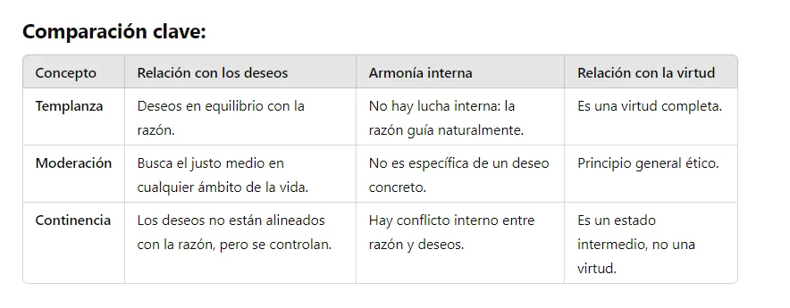
1. En la ética de Aristóteles, la templanza es la virtud ideal, ya que implica un dominio pleno (equilibrio o autocontrol) de los deseos y placeres, sin conflictos internos (porque sus deseos están alineados o armonizados con lo que la razón considera correcto). Especialmente lo relacionado con lo físico, como la comida, bebida y placer sexual. El temperante desea lo correcto en la medida adecuada, sin excesos ni carencias, y actúa en consecuencia sin lucha interna. Una persona templada no siente una atracción excesiva por comer en exceso, sino que desea alimentos de manera equilibrada y actúa con naturalidad al respecto.
2. La moderación, es también una virtud ideal (pero no específica), que guía todas las virtudes hacia el justo medio o equilibrio. Por eso, se trata de un término más general que abarca cualquier aspecto de la vida práctica (obrar). El justo medio se aplica a todas las virtudes, incluida la templanza.
1. Mientras la templanza se refiere específicamente al control de los placeres corporales,
2. la moderación puede abarcar otros ámbitos de la vida, como el comportamiento social o las emociones. Una persona moderada puede evitar tanto la timidez como la audacia extrema (atrevido) en su comportamiento social, actuando en el punto medio.
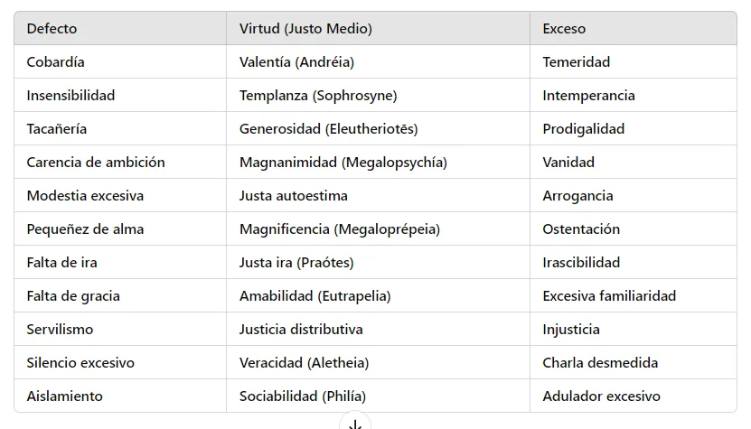
2. Magnanimidad
1. La magnanimidad: disposición del alma que impulsa a una persona a aspirar a grandes cosas de acuerdo con su valor y méritos. Es, literalmente, "grandeza de alma" (μεγαλοψυχία, megalopsychía en griego): es consciente de su valía y busca cosas nobles y elevadas, pero siempre de manera adecuada a sus capacidades y méritos.
2. La magnanimidad como "justo medio" o equilibrio entre dos extremos:
1. Exceso Hybris: (vanidad, arrogancia, soberbia). La persona que aspira a cosas grandes sin tener los méritos para alcanzarlas. Implica actuar con desprecio hacia los demás, transgrediendo límites éticos o sociales, y buscando imponerse o humillar. Sinónimo: orgullo excesivo o la pretensión desmedida.
2. Defecto (falta de ambición o pusilanimidad): La persona que no reconoce su verdadero valor o capacidad y, por tanto, no aspira a lo que es capaz de lograr (falta de valor para lograr cosas).
3. ¿Qué implica la magnanimidad?
1. Humildad acorde a la grandeza: Aunque el magnánimo tiene una alta opinión de sí mismo, no es arrogante ni vanidoso. Su autoestima está basada en un juicio justo sobre lo que realmente merece.
2. Virtud completa: Aristóteles considera que la magnanimidad no puede existir sin las demás virtudes éticas. Una persona magnánima debe ser justa, valiente, moderada, etc., ya que las grandes acciones requieren estas cualidades.
3. Virtud (Justa indignación / Nemesis): Sentir pesar o indignación cuando alguien obtiene un bien inmerecido, es decir, se sufre ante la buena fortuna no merecida de otros, pero no ante aquella que sea legítima o acorde a sus méritos.
1. Exceso (Envidia / Phthónos): Sentir dolor no sólo ante la buena fortuna inmerecida de otros, sino ante cualquier tipo de buena fortuna ajena, incluso si es merecida. El envidioso sufre al ver a otros prosperar sin discriminación alguna.
2. Defecto (Malicia): No sentir dolor ni siquiera ante la buena fortuna inmerecida de otros (ante las injusticias) e, incluso, experimentar placer ante su desgracia. En este extremo se peca por carecer de la respuesta moral adecuada a las injusticias de la fortuna, llegando a gozar con la adversidad ajena.
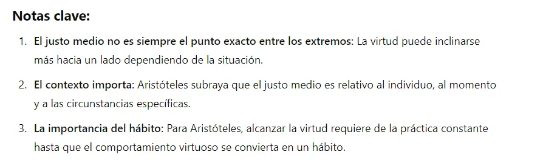
3. La continencia, aunque positiva, refleja un estado inferior al de la templanza porque implica una lucha interna constante, mostrando que la armonía entre razón y deseo aún no se ha alcanzado. La persona continente actúa conforme a la razón, aunque sus deseos tiendan hacia lo contrario. A diferencia del temperante, el continente no ha alcanzado la armonía plena entre la razón y el deseo, pero se esfuerza por actuar correctamente. La continencia es un estado intermedio entre la virtud templanza y el vicio (intemperancia o incontinencia).
El continente sufre tensiones internas, pero logra someter sus impulsos al juicio de la razón. Una persona continente puede sentir una fuerte tentación de comer en exceso, pero logra resistir esa inclinación y actuar conforme a lo que sabe que es mejor.
3. Esto significa que, para ser prudente, para ver el fin (bueno*), es necesario tener la parte conativa del alma bien dispuesta, es decir, moderada por las virtudes éticas: ser justo, fuerte y templado. Y por eso, dice el texto de Aristóteles que la moderación (mejor, la continencia) es la salvaguarda de la prudencia.
1. Dice que salvaguarda a la prudencia y no a la ciencia, porque en los juicios teóricos no hay una ordenación a fines y, por tanto, los aspectos conativos, el dolor o el placer, no influyen en tales actividades. Tanto el avaro como el generoso, el continente como el incontinente sabe que dos más dos son cuatro, o que el electrón tiene carga negativa.
2. Por eso, Aristóteles insiste en que el fin de la acción es punto de arranque de ella, o sea, su principio. Y por eso, si el vicio destruye la percepción del fin, y el vicioso ya no ve la necesidad de perseguir el bien, toda su acción estará viciada de raíz, será, pues, irracional o insensata.
2. Para Platón, la ética tiene entre sus funciones más importantes la de purificar al alma de las pasiones corporales con objeto de regresar al mundo de las ideas al que pertenece. La ética platónica se orienta, por tanto, al mundo inteligible y tiene un componente ascético. Sin embargo, esto no lo encontramos en Aristóteles quien, rechazando el dualismo platónico, nos ofrece una visión integrada de cuerpo y alma.
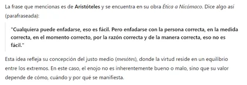
3. La ética aristotélica se orienta a la vida en este mundo. Para Aristóteles, los impulsos (emociones) y los deseos corporales no son malos en sí mismos, y en cierta medida son necesarios. En vez de reprimirlos o suprimirlos, lo que hay que hacer es educarlos y moderarlos, pues, como el propio autor explica, en cada uno de ellos hay un grado conveniente, manera conveniente y objeto conveniente. ). Se trata de dirigidas hacia fines correctos para vivir una vida virtuosa y alcanzar la felicidad (eudaimonía). Además, educar la voluntad , no solo modera los impulsos, sino que permite ser consciente, a su vez, de que ciertas actividades pueden ser convenientes a largo plazo, aunque no reporten un placer directo o inmediato (Prudencia*).
🚨 Aristóteles sostiene que tanto los impulsos o emociones, como los deseos corporales, son naturales, pero necesitan ser regulados por la razón práctica (la virtud) para alcanzar una vida equilibrada y virtuosa. El exceso o la falta de control sobre estas inclinaciones puede llevar a vicios, mientras que el término medio representa la virtud.
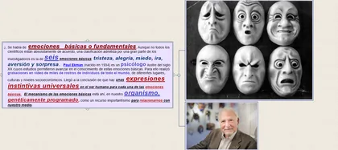
Las emociones y los sentimientos son conceptos a menudo confundidos en el lenguaje cotidiano, pero en psicología se distinguen claramente. Las emociones son respuestas automáticas e involuntarias del cuerpo ante un estímulo, mientras que los sentimientos son la interpretación consciente y subjetiva de esas emociones.
1. En resumen, las emociones son como "alarmas" del cuerpo que nos preparan para actuar, mientras que los sentimientos son la "historia" que construimos en nuestra mente a partir de ellas.
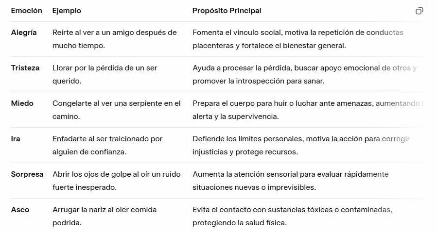
2. A continuación, te detallo las principales diferencias en una tabla comparativa para mayor claridad:
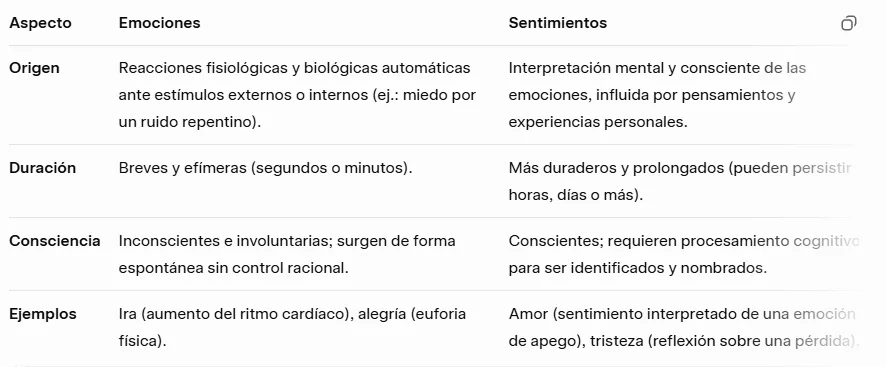
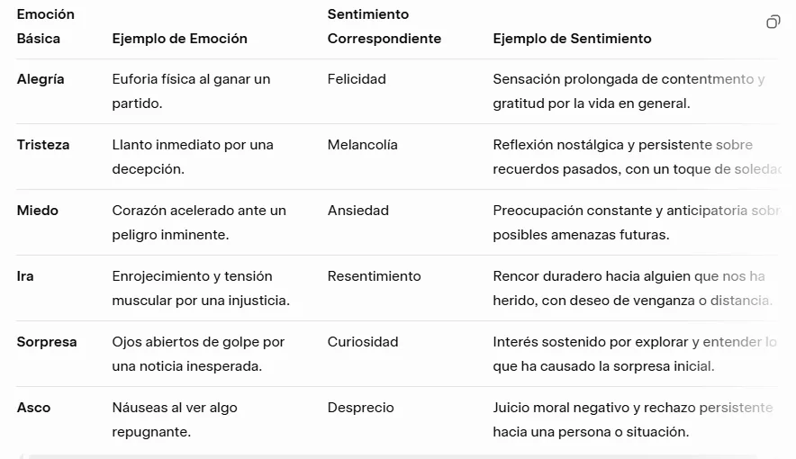
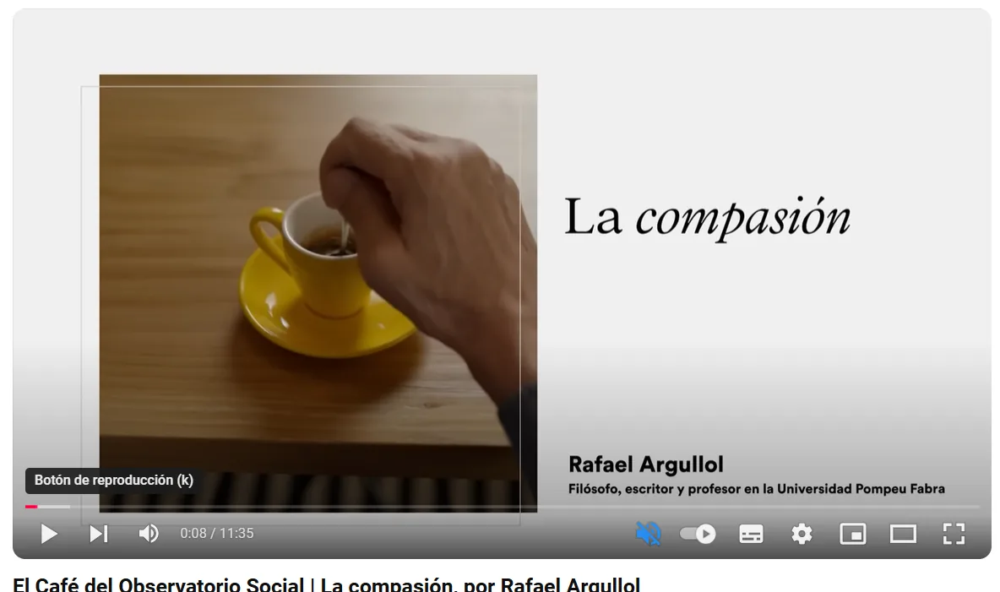
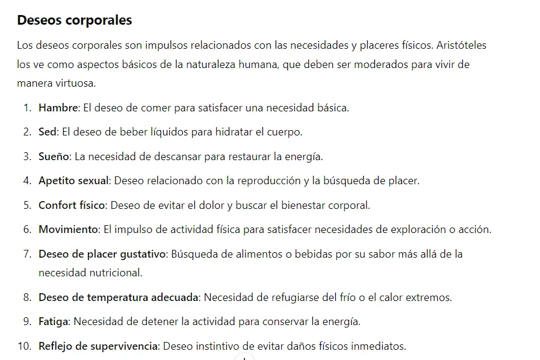
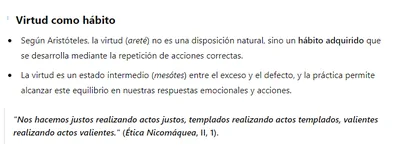
👓 4. En resumen, la postura de Aristóteles implica desarrollar buenos hábitos de acción para obedecer esa regla. La bondad del carácter es, por tanto, una capacidad, o potencia humana, como la llama Aristóteles, que depende no solo del conocimiento sino también de la voluntad y del hábito* o experiencia práctica para que se desarrolle. Es un aprendizaje que requiere práctica y tiempo. Platón, por el contrario, consideraba la virtud como innata o accesible mediante el conocimiento.
1. En cierto modo, la ética platónica también es teleológica (finalista) en cuanto considera a la Idea de Bien como aquel fin al que debe tender toda la realidad y que hace posible la existencia del bien parcial en este mundo. Pero el bien platónico es inalcanzable del todo en este mundo. Por contra, Aristóteles se propone estudiar exclusivamente cuál es el bien del hombre en este mundo, realizando una investigación más empírica sobre las necesidades concretas y variadas* del ser humano.
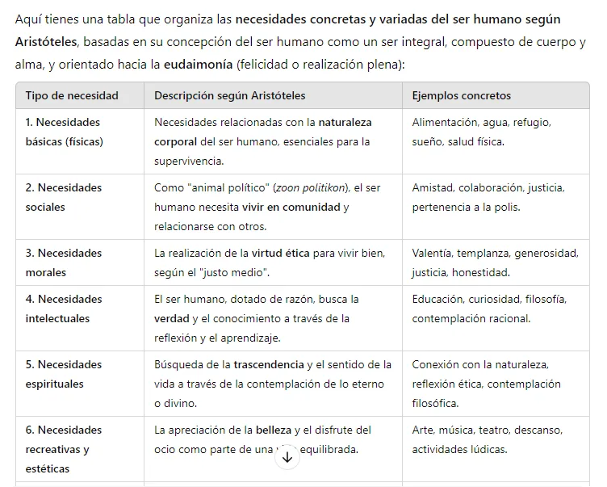
👎 Importancia de la amistad
En la Ética Nicomáquea, Aristóteles destaca la amistad (philia) como un elemento esencial para la buena vida y el florecimiento humano (eudaimonía). Esta no es una consideración marginal, sino que ocupa un lugar central en su reflexión ética, al punto de que dedica dos libros completos a su análisis. La importancia que el filósofo atribuye a la amistad no se limita a un mero vínculo social agradable, sino que se enraíza en la propia concepción de la virtud y de la vida realizada plenamente.
Para Aristóteles, el ser humano es por naturaleza un ser político y social, destinado a vivir en comunidad. La amistad, en este contexto, se convierte en la manifestación más profunda y armónica de la sociabilidad humana. Si bien las relaciones utilitarias o placenteras pueden formar parte de la vida cotidiana, no satisfacen plenamente el anhelo de sentido que el hombre virtuoso experimenta. Las amistades basadas en la virtud —aquellas en las que ambos amigos se reconocen mutua bondad y se desean el bien por sí mismo— alcanzan la mayor profundidad y significación. En este tipo de relación, los amigos comparten valores, metas y un proyecto ético que va más allá de las circunstancias temporales. Cada uno ve en el otro un “otro yo”, un espejo donde se reconocen la virtud, la nobleza de carácter y la aspiración al bien.
La amistad virtuosa ejerce, además, una función pedagógica y moral. En la intimidad del vínculo, los amigos se motivan mutuamente a vivir conforme a la razón práctica y el justo medio. Cuando uno se desvía, el otro puede exhortarlo a retomar el camino de la virtud. Así, la amistad no sólo refleja el estado moral del individuo, sino que contribuye activamente a su perfeccionamiento. Esta alianza ética mitiga la soledad interna y la fragilidad humana, posibilitando que el hombre encare la vida con mayor fortaleza, prudencia y alegría.
La plenitud de la vida aristotélica, es decir, la consecución de la eudaimonía, no es un estado exclusivamente introspectivo o solitario. Por el contrario, requiere de otros para su pleno florecimiento. Sin la presencia de verdaderos amigos, el bien propio carece de una dimensión expansiva y relacional; se convierte en una satisfacción incompleta. La amistad, al ser la encarnación misma de la bondad compartida, nutre y sostiene la excelencia moral. En ella el individuo no sólo busca su propio bien, sino que se alegra en el bien del otro, produciendo un círculo virtuoso que potencia la realización de la vida humana en su totalidad.
En conclusión, para Aristóteles la amistad no es un adorno accesorio de la existencia, sino un ingrediente fundamental de la vida lograda. A través de la amistad virtuosa, el ser humano trasciende el individualismo, crece en sabiduría y fortalece sus convicciones éticas, alcanzando así una plenitud más profunda y duradera.
2. La ética aristotélica es finalista porque Aristóteles afirma que la conducta humana, como todo en la naturaleza, tiende a un fin (objetivo) y este objetivo, en cuanto deseable, es considerado un bien.
El fin o bien de cada cosa consiste en la realización, en la actualización de su forma o función propia (la del ojo en ver…) y cada cual es feliz cumpliendo bien su misión (el músico cuando toca bien, el escultor cuando construye objetos perfectos…)
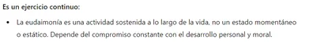
3. Pero lo cierto es que hay fines que a su vez son medios para alcanzar fines posteriores. Aristóteles se pregunta entonces cuál es ese fin último que da sentido a la vida humana. Ese fin último, el bien supremo humano, lo identifica con la felicidad o el bienestar* (“eudaimonia”). La ética de Aristóteles es, por tanto, una ética teleológica y eudaimonista.
4. Ahora bien, aunque todos están de acuerdo en que lo que buscamos en último término es la eudaimonía, la vida plena y feliz, no hay acuerdo a la hora de señalar en qué consiste o qué acciones nos proporcionarán ese fin último. Aristóteles procede a analizar ahora las distintas opiniones sobre la felicidad.
1. Para la mayoría, la felicidad consiste en la vida placentera, pero el Estagirita piensa que centrar la vida en los placeres nos hace esclavos y no nos diferencia de los animales.
Si bien Aristóteles admite que el placer acompaña a la eudaimonía, no la identifica con ella. El placer es un efecto colateral de vivir una vida virtuosa, no la esencia de la felicidad.
2. Para otros, la felicidad es el honor, el éxito social, sin embargo esto depende de que otros individuos nos lo den.
3. Con respecto a la riqueza, Aristóteles considera que los bienes materiales son instrumentos, medios, no fines.
4. Aristóteles considera que todo lo anterior acompaña a la felicidad y es, en su justa medida, importante para obtenerla pero no es el ingrediente fundamental. En efecto, la felicidad debe consistir en una actividad del alma , por lo que no tiene una relación fundamental con los bienes exteriores, ya que estos dependen de la cambiante fortuna.
1. La fortuna representa los eventos o circunstancias que ocurren de manera accidental o inesperada, influyendo en la vida humana de manera significativa, aunque escapen al control directo de la voluntad o la razón. No es un evento totalmente aleatorio, pero tampoco está dirigido por una necesidad o un propósito racional. Se produce en el marco de lo que podría haber sucedido de otra manera (contingente).
2. Su influencia en la vida ética:
1. Aristóteles reconoce que la fortuna puede influir en la felicidad (eudaimonía), ya que puede proporcionar bienes externos como riqueza, salud, o éxito.
2. Sin embargo, la felicidad no depende exclusivamente de la fortuna. Lo más importante para Aristóteles es vivir conforme a la virtud, ya que esta última es más estable y está bajo el control del individuo. La fortuna puede otorgar o quitar estos bienes, pero la virtud es lo que permite aprovecharlos de manera correcta o superar su ausencia.
3. La prudencia (phronesis), como virtud práctica, permite al ser humano manejar de manera razonable las circunstancias que dependen de la fortuna, encontrando formas de actuar adecuadas en situaciones inesperadas.
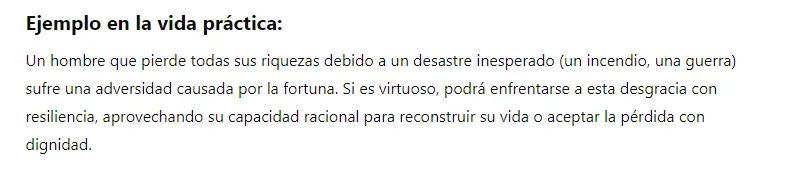
5. Se propone averiguar ahora cuál es la función característica del ser humano, esto es, ¿qué es lo que solo el hombre puede hacer? El autor estima que la felicidad tiene que consistir en el perfeccionamiento de aquella función que caracteriza al ser humano, en la realización o actualización plena de su forma o esencia.
El alma humana tiene distintas funciones.
1. La función vegetativa (alimentación, crecimiento y reproducción) es común a todos los vivientes.
2. La función sensitiva (sensaciones, placer y dolor, deseos, imaginación, memoria y, en algunos casos, incluso sentimientos) la tienen también los animales.
3. Pero sólo los seres humanos estamos dotados de función intelectiva, racional, con capacidad de conocer, por lo que esta es nuestra función específica. La felicidad se alcanza con el perfeccionamiento o el desarrollo pleno de nuestra función específica que es la racional. El cultivo de la racionalidad incide también positivamente en el bienestar de las otras dos funciones.
La ciencia moderna ha confirmado la conexión profunda entre el cuerpo, las emociones y la mente racional. Veamos cómo la racionalidad conecta con ambas funciones. Un ejemplo más amplio lo encontramos en los efectos del autocontrol, que es una habilidad racional fundamental:
Emocional y vegetativo: Una persona con autocontrol racional puede resistir la tentación de comer en exceso (función vegetativa) cuando se siente ansiosa o triste (función emocional). Esta elección no solo mejora la salud física, sino que también reduce el círculo vicioso de emociones negativas relacionadas con la culpa.
🚨 6. Ampliación a los 2 primeros puntos
🚨 1. EL VIVIR BIEN COMO OBRA DE LA RAZÓN
🚨 Virtud y felicidad son los dos conceptos fundamentales de la ética aristotélica y son tratados ampliamente en la Ética nicomáquea. Aristóteles redactó esta obra durante su época del Liceo, cuando ya había elaborado gran parte de su filosofía teórica. Por eso, para entender la ética de Aristóteles hay que tener en cuenta conceptos fundamentales de su metafísica y, muy especialmente de su antropología: la idea aristotélica de hombre. Aristóteles sostiene que esto que llamamos hombre es un compuesto de cuerpo y alma; es decir, de cuerpo y vida*. En rigor, no se trata de un dualismo sino de una dualidad, pues, para Aristóteles, cada ser humano es una única realidad: un cuerpo orgánico viviente. Ahora bien, es claro que los dos principios no están al mismo nivel.
1. Si cada uno de nosotros fuera principalmente su cuerpo, resultaría que cada cierto tiempo cada uno dejaría de ser sí mismo para pasar a ser otro, puesto que nuestra materia cambia continuamente y en poco tiempo es totalmente sustituida por otra (cada diez años aproximadamente desechamos todas nuestras células y las sustituimos por otras).
2. La otra “parte” nuestra, nuestra vida -el acto de vivir-, es lo que permanece siempre, y siempre es la misma: es la misma vida, mi propio y único vivir. Por eso, lo que buscamos es conservar la vida, renovando nuestro cuerpo continuamente o incluso eliminando sus partes que perjudican la vida (nos amputan el brazo gangrenado). Esto es lo que indica Aristóteles cuando sostiene que cada uno de nosotros somos principalmente nuestra vida, nuestro vivir. Dentro del alma -de nuestros actos vitales-, Aristóteles distingue cuatro partes:
1. la vegetativa (crecer, alimentarse, dirigir, respirar…),
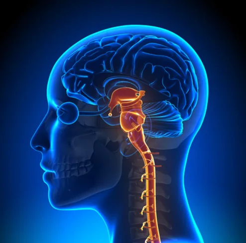
Tronco encefálico
Estas áreas controlan funciones autónomas como la respiración, el ritmo cardíaco y el metabolismo, similares a las funciones vitales básicas del alma vegetativa.
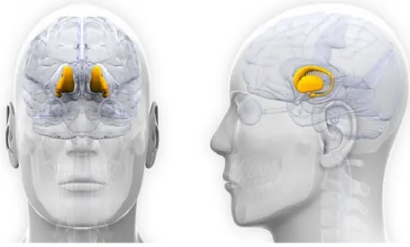
El hipotálamo regula precisamente estos aspectos: controla el hambre, la sed, la temperatura corporal, el metabolismo, el ciclo sueño-vigilia y respuestas hormonales autónomas relacionadas con la supervivencia básica.
2. la sensitiva (ver, oír, oler..),
Responsable de la percepción sensorial y la sensibilidad al entorno.
Corteza Sensorial y Tálamo
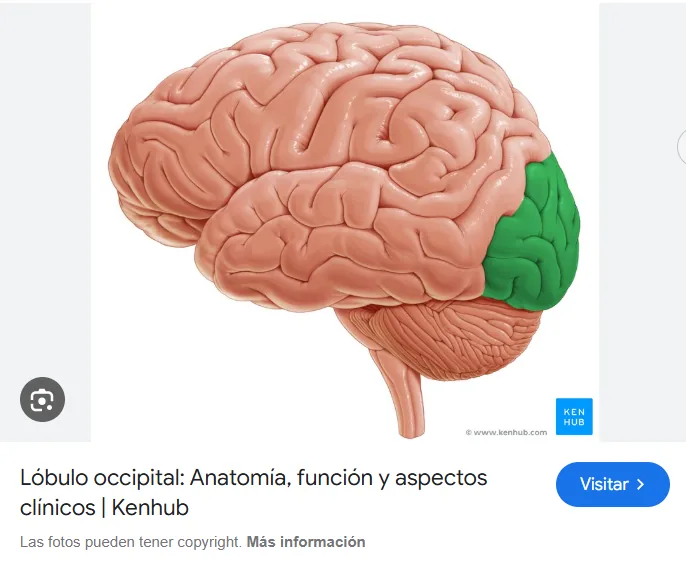
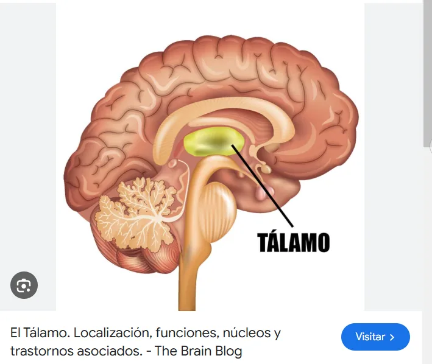
3. la conativa (tendemos al placer, huimos del dolor, tenemos sentimientos…) Responsable de los deseos, emociones y motivaciones que impulsan el movimiento.
Sistema Límbico (incluyendo Amígdala e Hipocampo). Este sistema gestiona emociones, miedos, placeres y motivaciones,
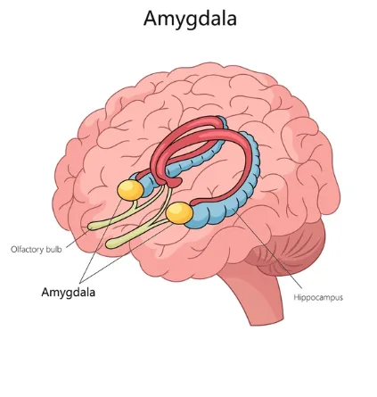
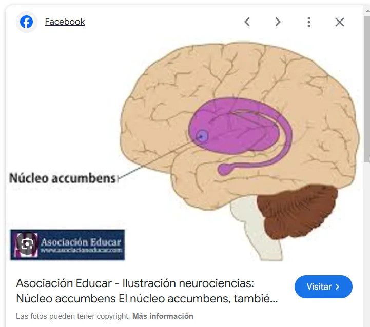
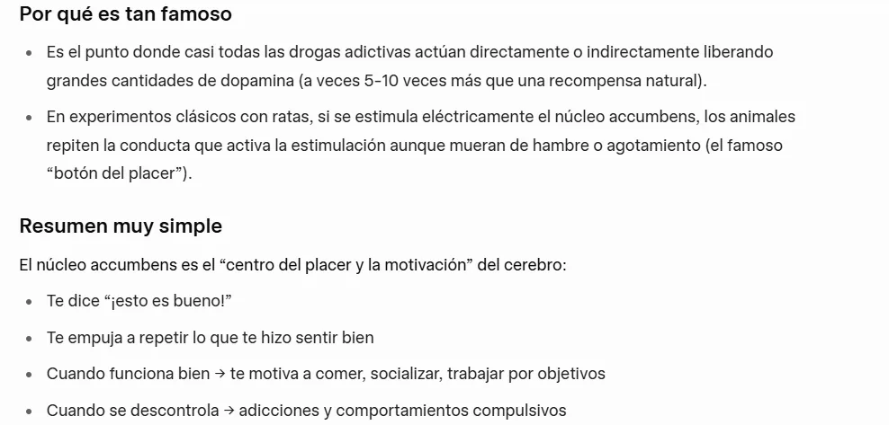
4. y la intelectiva (pensar). Es el pensamiento, el conocimiento, y todo lo que eso implica lo que caracteriza al ser humano, lo que es él mismo en cuanto humano (no en cuanto animal o meramente viviente).
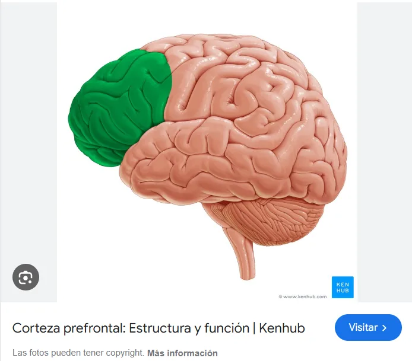
5. Tabla
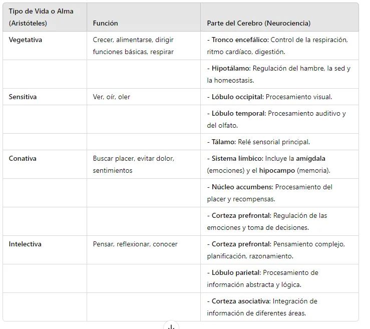
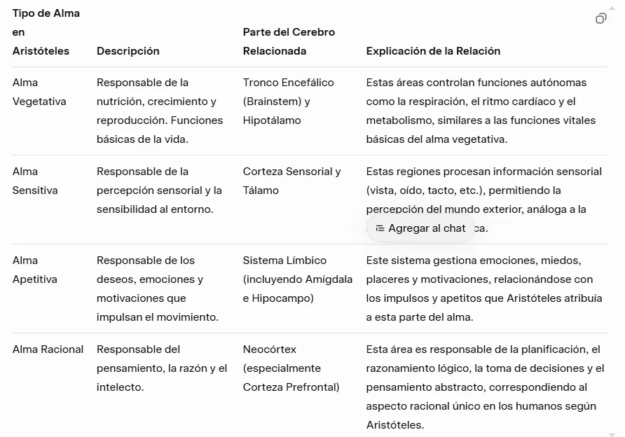
👓 Estas correspondencias ilustran cómo la neurociencia ve el alma aristotélica como una jerarquía emergente: las funciones vegetativas son las más básicas y subcorticales, mientras que las intelectivas dependen de capas corticales superiores, integrando las inferiores. Por ejemplo, el pensamiento racional (intelectiva) modula impulsos apetitivo-sensitivos, similar a cómo Aristóteles describe la virtud como equilibrio. Sin embargo, la neurociencia enfatiza que no hay una "sede única" del alma, sino redes distribuidas, y fenómenos como la plasticidad cerebral permiten compensaciones tras lesiones.
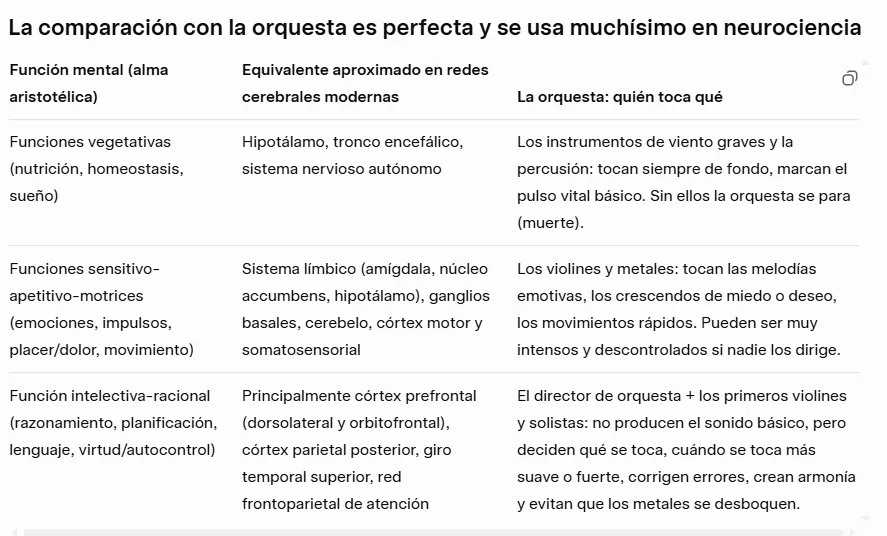
🚨 6. Los niveles vitales se estratifican, desde esta perspectiva, por el modo en que el viviente realiza sus operaciones vitales.
1. . Las operaciones vitales básicas son nutrición, y reproducción.
1. La nutrición es en vista a la construcción del propio cuerpo o crecimiento y ésta a su vez, en vistas a la reproducción.
1. La nutrición y crecimiento afectan a la vida del viviente que se nutre y crece;
2. la reproducción es operación realizada por el viviente pero que interesa a la especie:
…en la nutrición le va la vida al individuo; en la reproducción, a la especie.
2. El primer nivel vital es el vegetativo. El vegetal realiza las operaciones de nutrición, crecimiento y reproducción, pero de un modo inconsciente: lo hace, pero no sabe que lo hace. Si se dan las condiciones (humedad, luminosidad, etc) para la vida de esa planta, entonces se desarrolla, en caso contrario, muere.
2. En la vida sensitiva o animal se realizan las mismas operaciones vitales. Pero aparece la mediación cognoscitiva. El animal, para realizar sus actividades vitales, necesita la guía del conocimiento. El viviente sensitivo tiene que saber que tiene hambre (tiene que sentir hambre y sentir-se hambriento), tiene que saber qué puede saciar su hambre y tiene que ser capaz de alcanzar el alimento.
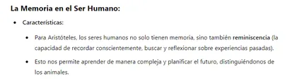
Eso supone, como es fácil de ver, una coordinación entre la estructura perceptiva y la locomotora. Supone también, una cierta subjetividad: un saber del mundo y de sí mismo como distintos; y esto implica una cierta vivencia de sí, una vida afectiva o sentimental más o menos rica en función de que se trate de animales más o menos desarrollados: Aristóteles es muy minucioso al respecto, ya que distingue animales con oído o sin él, con capacidad de acumular nuevas imágenes (es decir, con memoria*) o sin ella, lo cual implica que puedan o no aprender, etc.
3. Finalmente, aún en la psicología, el hombre se caracteriza porque en él no hay mediación cognoscitiva. En el hombre hay principiación cognoscitiva. Esto es de una trascendencia enorme, y significa que en el hombre el principio de su acción es el entendimiento.
1. No es que el hombre no necesite comer o no sienta el impulso sexual, es que eso que en el animal es un impulso específico que el individuo sólo tiene que cumplir, el hombre ha de proponérselo a sí mismo como fin y, en cierto sentido, inventarlo, construirlo.
2. La antropología reciente ha expresado esto mismo diciendo que el animal tiene medio, entorno o mundo circundante (Unwelt), mientras que el hombre tiene mundo (Welt), mundo significativo donde los significados los pone él mismo. (Max Scheler, El puesto del hombre en el cosmos, 1928)
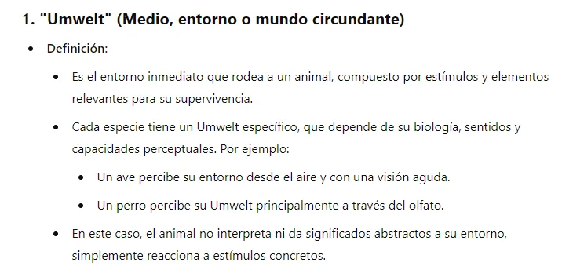
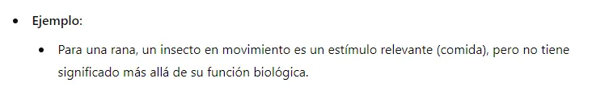
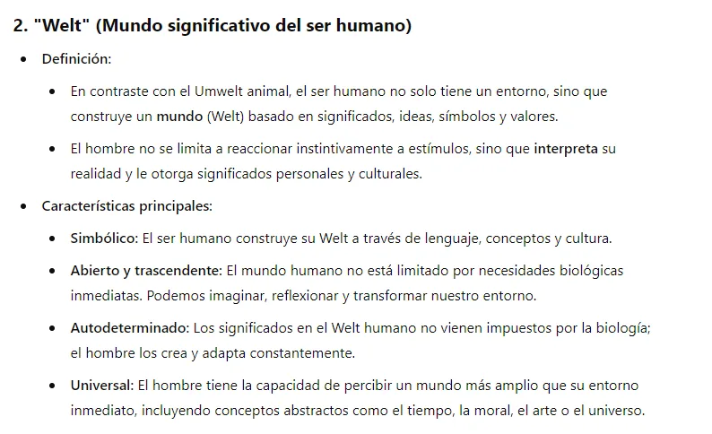
3. El hombre se nutre, pero ha de inventar la gastronomía, ha de inventar el modo. Por eso, hay alimentos que a unos seres humanos les resultan exquisitos (o, al menos, aceptables) y a otros les repugnan. Si hablamos de cuestiones más complejas como tendencia sexual, estructuras de parentesco, etc., se hace cada vez más patente que el hombre construye su mundo desde el pensamiento. Y, por eso, en un cierto sentido, cada hombre se enfrenta a la tarea de asumir cognoscitivamente su herencia cultural y decidir cómo va a orientar su vida: ese es el punto de inicio de la cultura, la moral, etc.
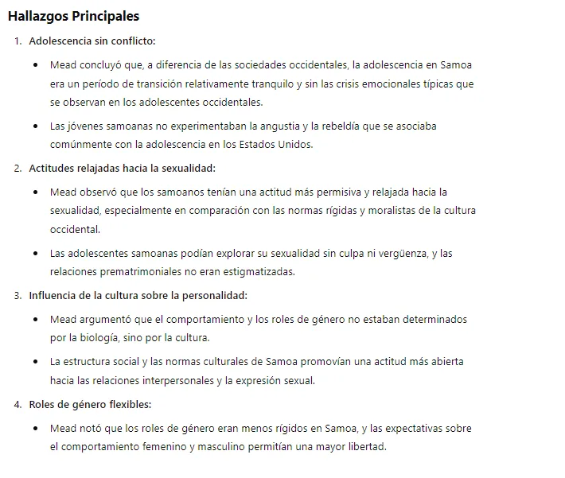
👍 4. Para Aristóteles, los vivientes corpóreos, están dotados de un principio interno que los constituye en vivientes. Están dotados de vida. Y, ¿qué es la vida? «un proceso hacia el sí mismo» (ARISTÓTELES, De Anima, II, 5, 417 b 6-7). Los seres vivos están dotados, por naturaleza, de una tendencia que les lleva a constituirse a sí mismos. Esto significa que el viviente no está ya dado (como ocurre al mineral) y eso significa que para el viviente, vivir significa realizar operaciones para salvar la distancia entre lo que es y lo que debe ser (o ser él mismo en plenitud). A eso alude la expresión de Píndaro: "Llega a ser lo que eres", es decir, esfuérzate por ser lo que ya eres, para serlo de otra manera.
👓 3. Aplicando esto a la ética, Aristóteles sostiene que el hombre bueno “actúa mediante la parte racional de sí mismo, que parece constituir a cada uno de nosotros” (Eth. Nic. IX, 4, 1166 a 16-17); “está pues claro que cada uno de nosotros es sobre todo intelecto y que la persona moralmente idónea lo ama sobre todas las cosas” (Eth. Nic. IX, 8, 1169 a 2-3.). En suma, se trata de que la razón es la guía de todas nuestras acciones. Si no siguiésemos a la razón, obedeceríamos algo que no es lo propio de nosotros mismos, algo en definitiva ajeno a cada uno de nosotros; viviríamos una vida heterónoma.
En consecuencia, Aristóteles considerará que los bienes (o “valores”) auténticos
1. no pueden ser ni los externos (como las riquezas), que afectan sólo de manera tangencial* al hombre,
2. ni los corporales (como los placeres), que no se refieren al verdadero ser del hombre,
3. sino los del alma intelectiva, puesto que lo que caracteriza al hombre es su intelecto.
2. LA EUDAIMONÍA (PLENITUD-FELICIDAD)
1. Aristóteles comienza su ética planteándose un problema que se discutía en la Academia. Ya que la ética es la doctrina acerca del vivir bien, la cuestión que hay que esclarecer primariamente es qué es lo bueno para el hombre, cuál es el bien supremo o fin que busca a través de toda sus acciones.
2. Todos están de acuerdo en que lo que buscamos en último término es la eudaimonía (felicidad, plenitud de vida). Sin embargo, ese acuerdo es meramente formal, puesto que las diferencias surgen al determinar las acciones que nos proporcionaran ese último fin, esa plenitud-felicidad.
1. La mayoría de las persona creen que la felicidad se encuentra en el placer y goce. Pero una vida dedicada a los placeres es una vida que hace “semejante a los esclavos” y es una “existencia digna de las bestias” (Eth. Nic. I, 5, 1095 b 20).
2. Otros sitúan la felicidad en el honor, en la fama. Esto es lo que buscan los que se dedican profesionalmente a la vida política o a las artes. No puede ser el fin último que buscamos puesto que es algo exterior: “Todo indica que el honor depende más bien del que lo confiere que del que lo recibe; nosotros, en cambio consideramos que el bien es algo propio y difícil de arrebatar” (Eth. Nic. I, 5, 1095 b 24-26).
3. El tipo de vida dedicado a amasar riquezas es la más absurda e inauténtica, porque equivale a buscar cosas que tienen razón de medios, pero no de fines.
4. El bien del hombre consistirá principalmente en la acción que es peculiar de él y que sólo él sabe desarrollar, así como el bien de cada cosa consiste en la obra que es peculiar de tal cosa. La obra del ojo es ver, la del oído, oír, etc. ¿Cuál es la obra del hombre?
1) No puede ser el simple vivir, puesto que el vivir es así mismo propio de todos los seres vegetales.
2) Tampoco puede ser el sentir, puesto que el sentir es común de todos los animales.
3) Sólo queda, pues, que la obra peculiar del hombre sea la de la razón y la actividad según la razón. El verdadero bien del hombre consiste en esta obra o actividad de la razón y más precisamente en la realización perfecta de esta actividad.
1. Pues bien, esa actividad según la razón no sólo es pensar -y demás actividades racionales-, sino toda acción humana susceptible de caer bajo la dirección de la razón. Es decir, tenemos actividades como el respirar que no podemos dejar de hacerlas, pero en cambio podemos comer o no, aunque tengamos hambre. Se trata, pues, de obrar no bajo una instancia ajena, sino según lo que somos nosotros mismos, bajo la razón, puesto que somos seres racionales.
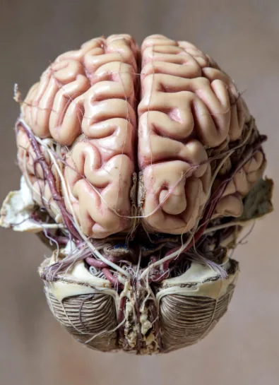
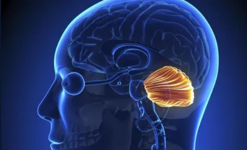
2. Esta acción guiada por la razón es lo que Aristóteles llama acción virtuosa. Lo cual nos remite al otro concepto básico de su ética: la virtud (areté).
Hemos visto que para Aristóteles la felicidad no puede consistir en el honor ya que el honor no es el bien realizable y ni siquiera depende del sujeto, sino de los otros. Y sería absurdo que nuestra felicidad dependiese de otros. Sin embargo, sí es posible plantear no el honor, sino el merecimiento: ser digno de honor. Y eso es la virtud. La virtud hace que quien la posea sea digno de honor. Ahí entronca el tratado de la virtud que ocupará los libros I-VI. Así se entiende que Aristóteles afirme: «Puesto que la felicidad es una actividad del alma según la virtud perfecta, hay que tratar de la virtud, pues acaso así consideraremos mejor lo referente a la felicidad».
3. La virtud es concebida como un hábito que perfecciona aquello de que es virtud, haciendo que ejecute bien su operación, es decir, lo mismo es decir virtud de algo que decir que ese algo realiza a la perfección su función propia.
👓 Por eso Aristóteles señala que en la ética hemos de tratar de la virtud humana: «toda virtud perfecciona la condición de aquello de lo cual es virtud y hace que ejecute bien su operación, por ejemplo, la excelencia [areté] del ojo hace bueno al ojo y su función (pues vemos bien por la excelencia del ojo); asimismo la excelencia del caballo hace bueno al caballo y lo capacita para correr, para llevar al jinete y afrontar a los enemigos. Si esto es así en todos los casos, la virtud del hombre será también el hábito por el cual el hombre se hace bueno y por el cual ejecuta bien su función propia».
4. La tarea del hombre tendrá que ver con su alma, entendiendo que alma es el principio vital, lo cual implica que hay alma vegetativa, animal y racional cada una con sus funciones específicas que asumen las inferiores. En Aristóteles, el alma humana aparece constituida por las siguientes partes:
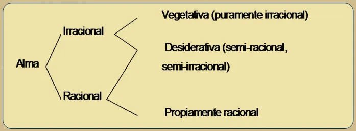
1. El perfeccionamiento o excelencia de las funciones humanas se denomina también virtud. La virtud se consigue con la puesta en práctica de manera habitual de una capacidad o potencia humana. De ahí que Aristóteles defina las virtudes como “disposiciones”, queriendo referirse con ello a las tendencias estables a realizar un determinado tipo de actos.
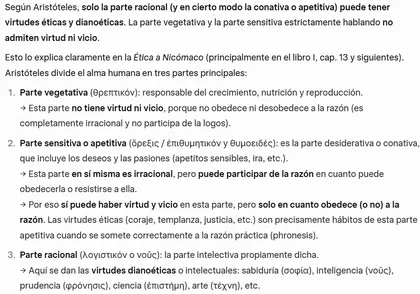
👍 2. Aristóteles distingue dos tipos de virtudes:
1. virtudes éticas o del carácter (fortaleza, justicia, moderación, valentía, etc), que se corresponden con la parte desiderativa o sensitiva*
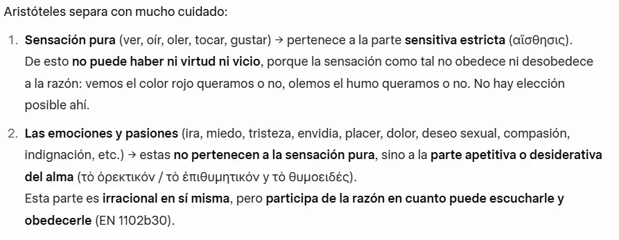
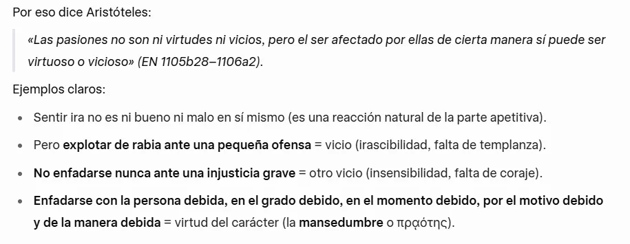
2. y virtudes dianoéticas o intelectuales (inteligencia, sabiduría, ciencia, prudencia y arte) que se corresponden con la racional.
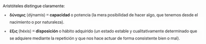
3. La virtud moral o ética se adquiere, como toda virtud, por la costumbre o ejercicio, esto es, por la repetición de acciones voluntarias que generan precisamente un hábito de conducta. Aristóteles la define como la disposición* a elegir el término medio en las pasiones y acciones entre dos extremos o vicios, término medio que es relativo a nosotros y determinado por la razón.
4. En cuanto a las virtudes intelectuales,
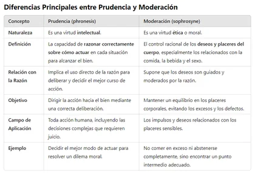
1. la prudencia o sabiduría práctica consiste en saber deliberar sobre cómo actuar en cada situación y nos permite, por tanto, encontrar el punto medio que se requiere para alcanzar las virtudes éticas.
1. Todas las virtudes morales requieren de deliberación para tomar la mejor decisión en una situación concreta. Esto es lo que se denomina prudencia (fronesis) que es requerida por todas las virtudes morales. Esta virtud tiene de particular que en cuanto es un ejercicio de inteligencia, es una virtud intelectual, pero en cuanto su objetivo es moral o práctico, es una virtud ética.
2. Aristóteles dice explícitamente que ninguna virtud ética (del carácter) se da plenamente sin la prudencia, y que la prudencia no existe sin las virtudes éticas (entre ellas la templanza o moderación). Quien es prudente (phrónimos) sí tiene necesariamente la virtud de la moderación (es templado), pero quien tiene la virtud de la moderación no necesariamente es prudente (puede ser “moderado” por razones equivocadas).
1. La persona continente actúa correctamente, pero no delibera correctamente ni elige el término medio por sí mismo como bueno. Lo elige por razones externas o por miedo al dolor posterior. Su alma no está en armonía: hay lucha interna. El templado (sṓphrōn) ni siquiera siente esas pasiones desordenadas o las siente muy débilmente; para él el término medio es placentero en sí mismo y lo elige porque lo ve como lo bello y bueno.
2. La prudencia exige que uno vea y elija el bien por sí mismo, no por consecuencias externas. Sin phrónesis, uno puede caer en una falsa moderación (por ejemplo, el que es “moderado” por insensibilidad o por miedo no es realmente templado).
3. La prudencia es imprescindible tanto en la vida privada como en la pública (ámbito político).
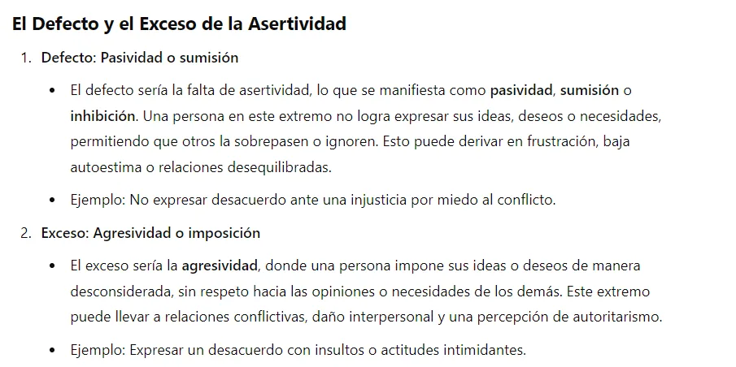
2. Respecto al arte o técnica, se trata de un saber productivo, es decir, es una disposición que me permite producir objetos, ya sea un edificio o una obra de arte.
3. El resto de virtudes intelectuales (sabiduría, inteligencia y ciencia) se corresponden con un saber teórico consistente en la reflexión y el estudio de las causas y el orden de la realidad. Su desarrollo implica llevar una vida dedicada a la contemplación.
1. La vida contemplativa no tiene más utilidad que la de satisfacer el deseo de conocimiento humano, el cual es para Aristóteles gratificante en sí mismo. Es la más sublime actividad de la razón al dirigirse a los principios universales y eternos y conecta al ser humano con lo divino. Las virtudes contemplativas conllevan la realización máxima de la naturaleza racional del ser humano y, por tanto, la obtención de la felicidad más alta.
2. Ahora bien, el ser humano, puesto que posee otras funciones, como las sensitivas y vegetativas, también necesitará un desarrollo de las virtudes éticas y un bienestar moderado de estas otras dos funciones (salud, bienes, etc) para ser feliz.
5. DEDUCCIÓN DE LAS VIRTUDES A PARTIR DE LAS “PARTES DEL ALMA”
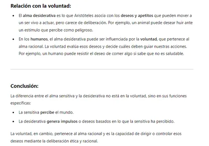
1. Hemos señalado que el alma, según Aristóteles, posee dos partes* que nos interesan especialmente, pues son capaces de virtud: la parte intelectiva y la parte conativa en cuanto cae bajo la intelectiva (VOLUNTAD).
👎
2. Parte racional o intelectiva
1. La parte racional es la que mira al conocimiento, es decir, es la parte del alma que tiene como tarea el conocimiento de la realidad, la adquisición de la verdad.
2. Ahora bien, Aristóteles considera que, en la realidad, hay cosas o acontecimientos que son necesarios y otros que son contingentes.
1. Son necesarios lo que no pueden dejar de ser o ser de otro modo a como son. Por ejemplo, es necesario que Bucéfalo muera o que cuatro más tres sean siete.
2. Por el contrario, hay cosas o acontecimientos contingentes (no necesarios): los que pueden dejar de ser, ser de otro modo distinto a como son, o incluso podrían haber sido distintos a lo que fácticamente son. Por ejemplos, no es necesario que Teeteto haga la carrera de matemáticas o de filosofía; tampoco lo es que yo esté ahora sentado, pues podría haber estado de pie.
3. En consonancia con esa distinción, el alma intelectiva tiene dos partes principales:
1. la parte científica (epistemonikón).Lo que nosotros llamamos razón teórica.
2. y la parte deliberativa o calculadora (logistikón). Lo que denominamos razón práctica.
3. Cada una de estas partes ha de tener su virtud fundamental o perfección estable: la sabiduría (sophía) y la prudencia o sensatez (phrónesis) respectivamente. Estas son las dos virtudes dianoéticas principales.
1. La sabiduría mira al conocimiento de la realidad en cuanto tal, de los objetos necesarios que no pueden ser de otro modo a como son,
2. mientras que la prudencia mira al conocimiento de las cosas contingentes, de las que podemos hacer de un modo u otro.
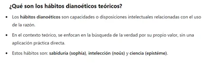
4. Ahora bien, dentro del conocimiento teórico, Aristóteles señala que la sophía es una ciencia (epistéme) a la que se le une la intelección (noûs): ella es intelección y ciencia. Es decir, que el conocimiento teórico se desarrolla básicamente en dos momentos: la intelección (noûs) de los principios y la construcción de un cuerpo científico (epistéme o ciencia demostrativa). De este modo, tenemos que los tres hábitos dianoéticos teóricos son: sabiduría (sophía), intelección (noûs) y ciencia (epistéme). Aunque la sophía es, en realidad, un tipo de ciencia que contiene en sí no sólo un cuerpo científico, sino también la intelección y discusión de los principios.
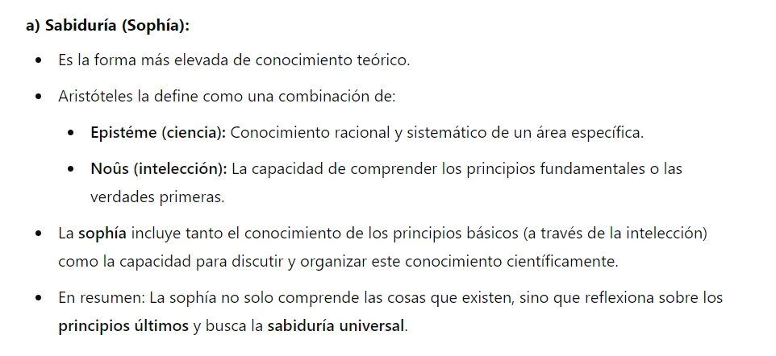
La sofía (filosofía primera o metafísica) es la única ciencia que combina ambos niveles perfectamente:
1. Captamos por noûs que «el ser es» y que «existe un motor inmóvil separado» (principio último).
2. A partir de ahí, demostramos (epistēmē) las características de ese motor inmóvil (es acto puro, pensamiento de pensamiento, etc.).
En cambio, ciencias como la geometría o la astronomía son epistēmē pura (parten de principios que se aceptan como evidentes, pero no llegan al nivel de los principios absolutamente primeros del ser en cuanto ser).
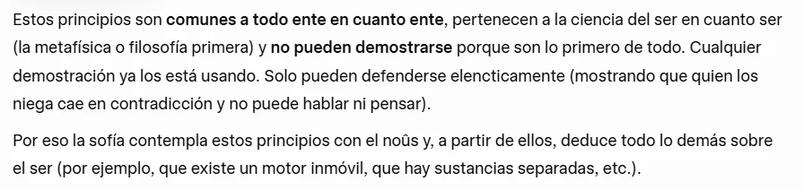
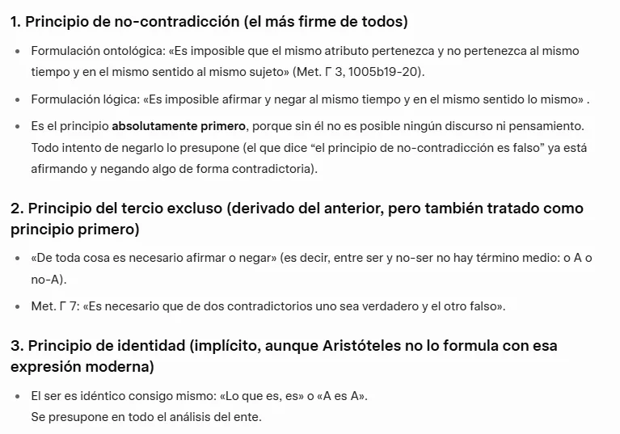
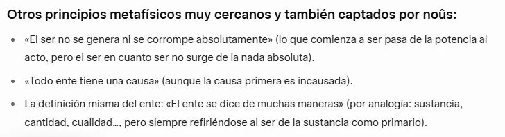
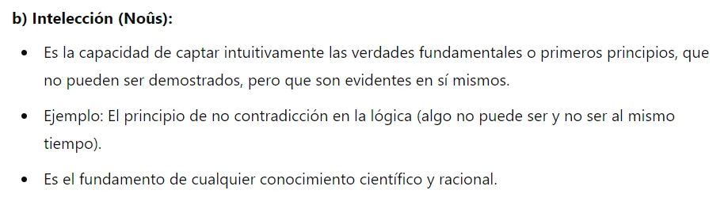
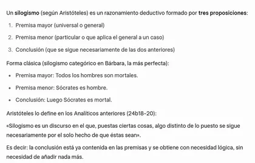
Quien tiene desarrollado el noûs capta estos principios con evidencia inmediata, sin necesidad de silogismo* o demostración
Definiciones esenciales indemostrables (axiomas): que el hombre es animal racional mortal, o que el triángulo es figura de tres lados. No se demuestran; se intuyen como verdaderas por sí mismas.
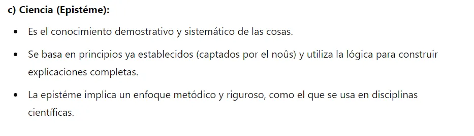
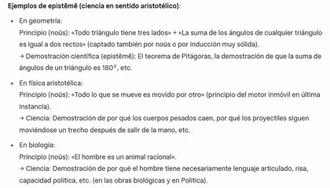
Es el conocimiento mediato, deductivo, que parte de esos principios indemostrables y llega a conclusiones necesarias mediante silogismos.
👎 Parte científica (razón teórica): 3 hábitos o virtudes dianoéticas teórias. (Lo necesario)
1. sabiduría (lo necesario): sophía
3. sofía o sabiduría teórica: episteme y nous orientada a los objetos más excelsos (los de la metafísica y matemáticas). Aquí el saber es dignificado por la sublimidad del objeto. La sabiduría es episteme (razón argumentativa, mediata) y nous (razón no argumentativa, inmediata). Por otra parte, los objetos necesarios, eternos, también están jerarquizados (hay unos que son más sublimes) y precisamente poseer la verdad sobre lo más elevado es también un carácter distintivo de la sofía.
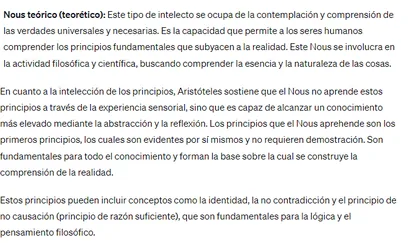
2. la intelección de los principios (Nous)
2. noûs o razón intuitiva: captación inmediata de la evidencia. Como defiende Aristóteles en los Analíticos, si se quiere demostrar todo, no se demuestra nada. Es necesario que, además, de la argumentación (la ciencia), existan también los principios de la demostración. Esos principios serán “primeros, verdaderos, anteriores a la conclusión y causa de ella”. Se trata de verdades evidentes, con carácter fundante (toda otra verdad se apoya en ellos) y cuya captación no se hace argumentativamente sino inmediatamente. Poseer cognoscitivamente los principios es poseer la verdad, pero esta posesión de verdad no se hace por demostración, no se trata del hábito intelectual que hemos llamado ciencia. Se trata de un hábito de posesión de la verdad que Aristóteles denomina nous.
3. y la construcción de un cuerpo científico (epistéme o ciencia), para comprender las causas y principios fundamentales (leyes) de los fenómenos.
Episteme, o ciencia: “disposición gracias a la cual demostramos” y a la que conciernen las pruebas, es decir, la argumentación. La ciencia es comunicable por enseñanza y se ocupa de lo necesario y eterno.
5. En cuanto a la razón práctica, esto es, la actividad humana que se ocupa de lo contingente.
1. Aristóteles tiene presente sobre todo la praxis (acción ética), que es la acción propiamente humana. Por tanto, la phrónesis es la virtud principal de la razón práctica: saber actuar o saber obrar.
2. Sin embargo, también hay un tipo de acciones, que consiste en la producción de cosas: hacemos barcos, plantamos vides, pintamos cuadros. Este tipo de acciones es lo que Aristóteles llama póiesis* Una persona, sin ningún tipo de conocimiento de agricultura, puede plantar una vid y conseguir que fructifique, pero normalmente hay que saber hacer. La perfección de nuestro entendimiento en orden a las producción es la téchne, técnica o arte.
3. Así pues, son dos los hábitos dianoéticos prácticos:
1. prudencia o sensatez -phrónesis: saber bien actuar o saber bien obrar (Praxis). Se trata de una acción inmanente que lleva en sí misma su propio fin (el acto generoso -el fin- es inmanente a la acción)
Phronesis o sabiduría práctica: “disposición verdadera para la praxis, según regla sobre lo bueno/malo para el hombre” . Debemos saber qué es bueno para el hombre en cuanto hombre y deliberar sobre los medios que permitirán alcanzarlo.
1. La phronesis tiene también por objeto una realidad contingente, algo que puede ser de otra manera. Y no sólo eso, porque la phronesis se refiere a un objeto que, además, es absolutamente individual, particular: mi vida. La vida de cada hombre es única. También es contingente. Y eso hace posible que un hombre malogre su vida, o la logre*. Por tanto, la vida se puede hacer bien o mal. Hay quien sabe qué ha de hacerse para conseguir el bien humano. Ese saber es lo que Aristóteles denomina phronesis, que queda caracterizada como “disposición (hábito) verdadera para la praxis”.
2. Igual que antes señalamos que la techné es un saber (y no un hacer), hay que decir que la phronesis es también un saber, la phronesis es la regla recta. Hacer lo que es prudente, obrar según la recta razón eso constituye ya la virtud moral. Recuérdese el final de la definición aristotélica de virtud moral: «un hábito selectivo que consiste en un término medio relativo a nosotros, determinado por la razón y por aquella por la cual decidiría el hombre prudente».
👎
2. técnica o arte, téchne .: Saber bien producir o construir objetos (póiesis) . Se trata de actuar de modo que lo que surge es algo distinto de la propia acción (es la producción de una obra exterior al sujeto (agente) que la realiza.)
Techné o técnica: “disposición por la que hacemos las cosas según una regla verdadera”. La techné se refiere a cosas no necesarias y no naturales y se refiere a ellas para hacerlas, producirlas; es decir, la técnica hace referencia a la acción productiva. En la poiesis aquello por lo que el artífice obra se halla en la mente del artista*. Pero hay que subrayar que no se trata de hacer, sino de saber hacer: la techné es el momento del saber.
👎 1. Así, saber que tal fármaco ha curado a Fulano, Zutano, Perengano, etc., es un saber por experiencia, empírico. Pero saber que este fármaco cura a los biliosos ya no es experiencia, sino tékhne; en el ejemplo, es la tékhne médica. Es difícil, a primera vista, percibir la diferencia entre experiencia y tékhne, porque el que tiene experiencia muchas veces logra la curación con más éxito que el médico. Esto es verdad, pero concierne tan solo a la producción de lo que se pretende producir. Como todo enfermo es individual, y la experiencia recae sobre lo individual, es obvio que en muchos casos acierta mejor el empírico que el médico. Pero que todo esto concierne al orden del producir los efectos que se intentan, no al modo de saber producirlos. Como saber, nos dice Aristóteles, el saber de la tékhne es muy superior al de la experiencia, porque:
a. sabe mejor. La experiencia sabe qué; la técnica sabe qué y por qué. Puede que ambos sepan lo mismo, pero el técnico lo sabe mejor.
b. sabe más: la experiencia sabe de muchos; la techné de todos (universal)
c. por a y b: sabe enseñar. Y esto tiene su interés cara al contexto señalado más arriba: la techné, virtud intelectual, es enseñable.
👎 2. La triple superioridad es lo que constituye la superioridad de la técnica sobre la experiencia. «Y ese modo de saber como hábito es lo que hace del hombre que la tiene, del técnico, un sophós, un sabio. Este sabio es el que tiene “un hábito de hacer las cosas con razón verdadera” (cita en griego, 1140 a 2). El término de este saber es una poíesis, el hacer una obra.
🚨 6. ESQUEMA Parte RACIONAL del Alma
1. Parte científica (razón teórica): 3 hábitos o virtudes dianoéticas teórias. (Lo necesario)
1. sabiduría (lo necesario): sophía
3. sofía o sabiduría teórica: episteme y nous orientada a los objetos más excelsos (los de la metafísica y matemáticas). Aquí el saber es dignificado por la sublimidad del objeto. Puesto que la sabiduría es episteme (razón argumentativa, mediata) y nous (razón no argumentativa, inmediata) explicar cómo es posible este tercer uso requiere un estudio más detenido que el que podríamos abordar en este breve espacio. Por otra parte, los objetos necesarios, eternos, también están jerarquizados (hay unos que son más sublimes) y precisamente poseer la verdad sobre lo más elevado es también un carácter distintivo de la sofía.
2. la intelección de los principios (Nous)
2. nous o razón intuitiva: captación inmediata de la evidencia. Como defiende Aristóteles en los Analíticos, si se quiere demostrar todo, no se demuestra nada. Es necesario que, además, de la argumentación (la ciencia), existan también los principios de la demostración. Esos principios serán “primeros, verdaderos, anteriores a la conclusión y causa de ella”. Se trata de verdades evidentes, con carácter fundante (toda otra verdad se apoya en ellos) y cuya captación no se hace argumentativamente sino inmediatamente. Poseer cognoscitivamente los principios es poseer la verdad, pero esta posesión de verdad no se hace por demostración, no se trata del hábito intelectual que hemos llamado ciencia. Se trata de un hábito de posesión de la verdad que Aristóteles denomina nous.
3. y la construcción de un cuerpo científico (epistéme o ciencia), para comprender las causas y principios fundamentales (leyes) de los fenómenos.
Episteme, o ciencia: “disposición gracias a la cual demostramos” y a la que conciernen las pruebas, es decir, la argumentación. La ciencia es comunicable por enseñanza y se ocupa de lo necesario y eterno.
2. Parte deliberativa o calculadora (razón práctica) -lo contingente): 2 dos hábitos dianoéticos prácticos:
1. prudencia o sensatez -phrónesis: saber bien actuar o saber bien obrar (Praxis).
phronesis o sabiduría práctica: “disposición verdadera para la praxis, según regla sobre lo bueno/malo para el hombre”* . Debemos saber qué es bueno para el hombre en cuanto hombre y deliberar sobre los medios que permitirán alcanzarlo.
1. La phronesis tiene también por objeto una realidad contingente, algo que puede ser de otra manera. Y no sólo eso, porque la phronesis se refiere a un objeto que, además, es absolutamente individual, particular: mi vida. La vida de cada hombre es única. También es contingente. Y eso hace posible que un hombre malogre su vida, o la logre*. Por tanto, la vida se puede hacer bien o mal. Hay quien sabe qué ha de hacerse para conseguir el bien humano. Ese saber es lo que Aristóteles denomina phronesis, que queda caracterizada como “disposición (hábito) verdadera para la praxis”.
2. Placer/dolor pueden destruir este principio, pero no a la episteme.
3. Igual que antes señalamos que la techné es un saber (y no un hacer), hay que decir que la phronesis es también un saber, la phronesis es la regla recta. Hacer lo que es prudente, obrar según la recta razón eso constituye ya la virtud moral. Recuérdese el final de la definición aristotélica de virtud moral: «un hábito selectivo que consiste en un término medio relativo a nosotros, determinado por la razón y por aquella por la cual decidiría el hombre prudente».*
2. técnica o arte téchne .: Saber bien producir o construir objetos (póiesis) . Se trata de actuar de modo que lo que surge es algo distinto de la propia acción;
techné o técnica: “disposición por la que hacemos las cosas según una regla verdadera”. La techné se refiere a cosas no necesarias y no naturales y se refiere a ellas para hacerlas, producirlas; es decir, la técnica hace referencia a la acción productiva. En la poiesis aquello por lo que el artífice obra se halla en la mente del artista*. Pero hay que subrayar que no se trata de hacer, sino de saber hacer: la techné es el momento del saber.
1. Así, saber que tal fármaco ha curado a Fulano, Zutano, Perengano, etc., es un saber por experiencia, empírico. Pero saber que este fármaco cura a los biliosos ya no es experiencia, sino tékhne; en el ejemplo, es la tékhne médica. Es difícil, a primera vista, percibir la diferencia entre experiencia y tékhne, porque el que tiene experiencia muchas veces logra la curación con más éxito que el médico. Esto es verdad, pero concierne tan solo a la producción de lo que se pretende producir. Como todo enfermo es individual, y la experiencia recae sobre lo individual, es obvio que en muchos casos acierta mejor el empírico que el médico. Pero que todo esto concierne al orden del producir los efectos que se intentan, no al modo de saber producirlos. Como saber, nos dice Aristóteles, el saber de la tékhne es muy superior al de la experiencia, porque:
a. sabe mejor. La experiencia sabe qué; la técnica sabe qué y por qué. Puede que ambos sepan lo mismo, pero el técnico lo sabe mejor.
b. sabe más: la experiencia sabe de muchos; la techné de todos (universal)
c. por a y b: sabe enseñar. Y esto tiene su interés cara al contexto señalado más arriba: la techné, virtud intelectual, es enseñable.
2. La triple superioridad es lo que constituye la superioridad de la técnica sobre la experiencia. «Y ese modo de saber como hábito es lo que hace del hombre que la tiene, del técnico, un sophós, un sabio. Este sabio es el que tiene “un hábito de hacer las cosas con razón verdadera” (cita en griego, 1140 a 2). El término de este saber es una poíesis, el hacer una obra.
🚨 7. # Las virtudes intelectuales o dianoéticas (Manuel Ballester) Ya compilado lo más importante con Zúnica. No estudiar
👎 1. El libro VI está íntegramente dedicado al estudio de los hábitos intelectuales. El capítulo 1 versa sobre las virtudes intelectuales en general, el resto (VI, 2-13) sobre las virtudes dianoéticas en particular.
👎 2. Cabe plantearse por qué hay que estudiar las virtudes intelectuales. Fundamentalmente, por dos motivos:
1. La felicidad es actividad según la mejor virtud, ¿cuál es la mejor? Hay que estudiarlas todas, para verlo.
2. El hombre virtuoso (virtud moral) es el que actúa según la “recta regla”*. Establecer esa recta regla es una operación intelectual cuya naturaleza hay que estudiar. De ahí que el libro VI comienza enlazando los hábitos intelectuales con las virtudes morales: «Puesto que hemos dicho que se debe elegir el término medio y no el exceso ni el defecto, y que el término medio es lo que dice la recta razón», es lógico proceder ahora al análisis de la noción de “recta razón”.
👍 3. Al analizar las virtudes del alma, vimos que unas eran propias del carácter y otras del pensamiento [dianoia]. Dijimos que el alma tiene dos partes, una racional y otra irracional. Ahora hemos de dividir la racional en dos partes:
1. «una, aquella con la cual contemplamos la clase de entes cuyos principios no pueden ser de otra manera,
2. y otra con que contemplamos los que tienen esa posibilidad. […] Llamemos a la primera, la científica [epistemonikon], y a la segunda la deliberativa [logistikon]».*
3. # El hombre actúa según una regla (logos, ratio) que se da a sí mismo. Se trata de ver cómo formulamos la recta regla. Formulamos “reglas” según el elemento o parte racional del alma. Aristóteles divide esta dimensión racional atendiendo a los objetos sobre los que recae su operación propia (en cuya plenitud consiste la virtud intelectual*). Atendiendo, pues, a los objetos sobre los que recae, la parte racional se divide en:
a. to epistemonikon o científica, con la cual contemplamos los objetos necesarios, lo cual puede hacerse según los siguientes modos de “estar en la verdad”:
1. episteme, o ciencia: “disposición gracias a la cual demostramos” y a la que conciernen las pruebas, es decir, la argumentación. La ciencia es comunicable por enseñanza y se ocupa de lo necesario y eterno.
2. nous o razón intuitiva: captación inmediata de la evidencia. Como defiende Aristóteles en los Analíticos, si se quiere demostrar todo, no se demuestra nada. Es necesario que, además, de la argumentación (la ciencia), existan también los principios de la demostración. Esos principios serán “primeros, verdaderos, anteriores a la conclusión y causa de ella”. Se trata de verdades evidentes, con carácter fundante (toda otra verdad se apoya en ellos) y cuya captación no se hace argumentativamente sino inmediatamente. Poseer cognoscitivamente los principios es poseer la verdad, pero esta posesión de verdad no se hace por demostración, no se trata del hábito intelectual que hemos llamado ciencia. Se trata de un hábito de posesión de la verdad que Aristóteles denomina nous.
3. sofía o sabiduría teórica: episteme y nous orientada a los objetos más excelsos (los de la metafísica y matemáticas). Aquí el saber es dignificado por la sublimidad del objeto. Puesto que la sabiduría es episteme (razón argumentativa, mediata) y nous (razón no argumentativa, inmediata) explicar cómo es posible este tercer uso requiere un estudio más detenido que el que podríamos abordar en este breve espacio. Por otra parte, los objetos necesarios, eternos, también están jerarquizados (hay unos que son más sublimes) y precisamente poseer la verdad sobre lo más elevado es también un carácter distintivo de la sofía.
🚨 👎 La sabiduría es así ciencia e intelección ( nous ) respecto de aquello que es lo más honorable y excelente, es decir, lo universal y necesario. Es por esto que los conocimientos propios del hombre sabio son los que se establecen en las ciencias teóricas:
1. matemáticas, pues aquello de que se ocupan es ingénito e imperecedero;
2. física, pues se ocupa del movimiento en el mundo sublunar y en el supralunar ; en el primero, aunque las cosas que se mueven nacen y perecen, los principios del movimiento son inmutables; en el segundo, tanto los principios del movimiento como las cosas que se mueven ( los astros ) son inmutables;
3. por último, la filosofía primera se ocupa de la realidad necesaria por excelencia que mueve sin ser movida y que es Dios.
b. to logistikon, razonadora, opinadora o calculadora. Se relaciona con lo contingente, respecto a lo cual podemos querer bien actuar (praxis) o bien actuar de modo que lo que surge es algo distinto de la propia acción; esto último es lo que se denomina poiesis (producción o construcción). En función de esta distinción (praxis/poiesis) hemos de hablar de dos hábitos intelectuales más.
4. techné o técnica: “disposición por la que hacemos las cosas según una regla verdadera”. La techné se refiere a cosas no necesarias y no naturales y se refiere a ellas para hacerlas, producirlas; es decir, la técnica hace referencia a la acción productiva. En la poiesis aquello por lo que el artífice obra se halla en la mente del artista*. Pero hay que subrayar que no se trata de hacer, sino de saber hacer: la techné es el momento del saber.
1. Así, saber que tal fármaco ha curado a Fulano, Zutano, Perengano, etc., es un saber por experiencia, empírico. Pero saber que este fármaco cura a los biliosos ya no es experiencia, sino tékhne; en el ejemplo, es la tékhne médica. Es difícil, a primera vista, percibir la diferencia entre experiencia y tékhne, porque el que tiene experiencia muchas veces logra la curación con más éxito que el médico. Esto es verdad, pero concierne tan solo a la producción de lo que se pretende producir. Como todo enfermo es individual, y la experiencia recae sobre lo individual, es obvio que en muchos casos acierta mejor el empírico que el médico. Pero que todo esto concierne al orden del producir los efectos que se intentan, no al modo de saber producirlos. Como saber, nos dice Aristóteles, el saber de la tékhne es muy superior al de la experiencia, porque:
a. sabe mejor. La experiencia sabe qué; la técnica sabe qué y por qué. Puede que ambos sepan lo mismo, pero el técnico lo sabe mejor.
b. sabe más: la experiencia sabe de muchos; la techné de todos (universal)
c. por a y b: sabe enseñar. Y esto tiene su interés cara al contexto señalado más arriba: la techné, virtud intelectual, es enseñable.
2. La triple superioridad es lo que constituye la superioridad de la técnica sobre la experiencia. «Y ese modo de saber como hábito es lo que hace del hombre que la tiene, del técnico, un sophós, un sabio. Este sabio es el que tiene “un hábito de hacer las cosas con razón verdadera” (cita en griego, 1140 a 2). El término de este saber es una poíesis, el hacer una obra.
5. phronesis o sabiduría práctica: “disposición verdadera para la praxis, según regla sobre lo bueno/malo para el hombre”* . Debemos saber (punto de partida del Silogismo práctico) qué es bueno para el hombre en cuanto hombre y deliberar sobre los medios que permitirán alcanzarlo (esto es el inicio del Silogismo práctico).
1. La phronesis tiene también por objeto una realidad contingente, algo que puede ser de otra manera. Y no sólo eso, porque la phronesis se refiere a un objeto que, además, es absolutamente individual, particular: mi vida. La vida de cada hombre es única. También es contingente. Y eso hace posible que un hombre malogre su vida, o la logre*. Por tanto, la vida se puede hacer bien o mal. Hay quien sabe qué ha de hacerse para conseguir el bien humano. Ese saber es lo que Aristóteles denomina phronesis, que queda caracterizada como “disposición (hábito) verdadera para la praxis”.
2. Placer/dolor pueden destruir este principio, pero no a la episteme.
3. Igual que antes señalamos que la techné es un saber (y no un hacer), hay que decir que la phronesis es también un saber, la phronesis es la regla recta. Hacer lo que es prudente, obrar según la recta razón eso constituye ya la virtud moral. Recuérdese el final de la definición aristotélica de virtud moral: «un hábito selectivo que consiste en un término medio relativo a nosotros, determinado por la razón y por aquella por la cual decidiría el hombre prudente».*
3. Parte conativa o tendencial
1. Respecto a la parte conativa del ser humano Aristóteles continua la obra de su maestro, Platón, que fue el primer filósofo capaz de determinar a grandes rasgos las tres tendencias básicas del ser humano. La moderna antropología y psicología* no han hecho más que confirmar las ideas de Platón y Aristóteles.
🔗 obeddelfinblog.wordpress.com
2. Las virtudes que perfeccionan la parte conativa son las virtudes éticas. Como el texto que comentamos no habla de estas virtudes, digamos resumidamente que, en Aristóteles, las virtudes éticas son tres: justicia, fortaleza y templanza.
3. Son tres, porque la parte conativa del ser humano tiene dos partes, pero una subdividida: la parte racional (voluntad) y la irracional, subdividida en irascible y concupiscible.
1. La voluntad es una tendencia racional, puesto que sólo obra guiada por la razón (recta o errada), y así el hombre se hace justo o injusto, con todas sus subdivisiones (generoso, avaro, grosero, amable, etc.).
2. Las partes irascible y concupiscible de suyo no son racionales, pues tienden a sus objetos al margen de la razón: con total independencia de la razón, tendemos a defender nuestra vida o a no suicidarnos, sentimos odio; deseamos comer, beber o usar el sexo. Eso no obsta para que la razón pueda modular la acción: arriesgamos la vida en defensa de los nuestros, damos el poco alimento disponible a los hijos y nos privamos de él, posponemos el uso del sexo al momento de ser capaces de asumir compromisos estables, etc.
Como se ve, la tarea de la razón es difícil: no puede eliminar las tendencias, sino sólo modularlas. Por eso, Aristóteles dice que el gobierno que la razón ejerce sobre ellas no es despótico, sino político.
6. LA FELICIDAD PERFECTA
1. Como hemos visto, la eudaimonía (felicidad-plenitud) se consigue a través de la actividad conforme a la razón. Ahora bien, eso no significa que las restantes actividades humanas, hechas de modo virtuoso, puedan ser despreciadas u omitidas: “El hombre contemplativo, al menos para su actividad, no tiene necesidad de nada de ello…; pero en cuanto que es hombre y vive con muchos otros, elige actuar de acuerdo con la virtud, y, por consiguiente, necesitará de tales cosas para vivir como hombre” (Eth. Nic., X 8, 1178 b 2-5).
Aristóteles es plenamente consciente de la complejidad del ser humano: no somos mentes cartesianas, sino vivientes racionales y sociales. No es posible estar siempre pensando y dedicados a la reflexión o a la investigación, sino que hemos de vivir una vida plena en todos los sentidos. Se trata, según Aristóteles, de conseguir una armonía entre todas las virtudes, fruto de una continua actividad en todos los ámbitos, de tal manera que adquiramos un carácter, un êthos, equilibrado.
2. Por eso, la tesis de Aristóteles es que tenemos que practicar en armonía todas las virtudes: en eso consiste precisamente tener una vida plena.
1. Podemos explicitarlo considerando que es necesario tener conocimientos teóricos adecuados (ciencias humanas, naturales o sociales, matemáticas…),
2. hemos de ser prudentes y sensatos, hemos de ser justos en nuestra vida familiar y social (generosos, entregados, respetuosos, amables…, incluso dice Aristóteles: divertidos y amenos), hemos de ser templados y moderados, no violentos ni maltratadores, tener vigor para enfrentarnos a los problemas sin derrumbarnos al menor obstáculo…
3. Y también tener las artes o técnicas convenientes (saber tocar un instrumento, conducir un coche, practicar deporte…).
4. A esto se añade, que en esa conducción sensata -bajo la guía de la razón- de nuestra vida, tenemos que ir plenificándola en todos los aspectos humanos, según nuestra biografía, circunstancias y preferencias: contribuir así o asá al bien común, tomar consorte, tener hijos, adquirir los medios materiales convenientes…
3. Esa vida como un todo es la felicidad-plenitud, es lo que hoy día llamaríamos “el sentido de la vida”. No obstante, quede claro que, en ultimidad, Aristóteles considera que la vida racional es lo más precioso que tenemos.
👎 1. Por eso mismo, incluso las demás actividades son buenas y virtuosas en cuanto caen bajo la dirección de la razón. Éstas últimas actividades se refieren a la estructura compuesta del hombre y, en cuanto tales, sólo proporcionan una felicidad humana.
👓 2. Por el contrario, la felicidad de la vida teorética, la posesión de la sophía, conduce de alguna forma más allá de lo puramente humano: nos pone, por decirlo así, en contacto con la divinidad. Y esta actividad no puede ser productiva -no produce objetos-, es pura actividad teorética: “Si pues en relación con la naturaleza del hombre el intelecto es algo divino, también la vida conforme a él será divina en comparación con la vida humana. No es necesario, sin embargo, hacer caso a quienes aconsejan que, como somos hombres, hemos de preocuparnos de cosas humanas, y, por ser mortales, nos hemos de interesar por cosas mortales, sino que es preciso hacerse inmortales en la medida de lo posible y empeñarse en vivir según la parte más elevada de cuantas hay en nosotros; pues, aun cuando ésta es pequeña si se tiene en cuenta la extensión, sobresale con mucho por encima de todas por su potencia y valor” (Eth. Nic. X, 7, 1177 b 19-1178 a 2).
🚨 7. Anexos al Tema EBAU 2024
👎 1. EUDAIMONIA
1. Aristóteles escribió dos obras sobre ética:
1. Ética a Nicómaco o Ética Nicomáquea, consta de diez libros y su nombre alude quizás a su hijo Nicómaco.
2. Ética a Eudemo que consta de cuatro libros. Eudemo era un discípulo de Aristóteles.
3. La Gran Ética probablemente no es obra suya, sino de un recopilador.
2. Según el filósofo, toda actividad humana tiende hacia algún fin (telos). El fin de la actividad de un zapatero es hacer, producir un zapato bien hecho; El fin de la medicina es procurar o restablecer la salud del enfermo, etc.
1. Vemos que los fines no son idénticos ya que dependen de la actividad que se lleve a cabo para obtenerlos. Las actividades tampoco son iguales. Aristóteles distingue entre:
1. la praxis, que es una acción inmanente que lleva en sí misma su propio fin,
2. y la poiésis, que es la producción de una obra exterior al sujeto (agente) que la realiza.
1. Por ejemplo, el fin de la construcción de una estatua es la estatua. Pero ésta, además, tiene un fin para lo cual la estatua misma es un medio: conmemorar un hecho, venerar a un dios....
2. De este modo vemos cómo unos fines se subordinan a otros, existiendo una jerarquía entre ellos y en las actividades que los producen.
2. Por lo tanto, habrá que determinar cuál es fin último del hombre al que estarán subordinados los otros fines. Habrá que buscar un fin que ya no sea medio para ningún otro fin.
1. Hay que decir que Aristóteles presupone la unidad del fin y del bien, no llegando a considerar en ningún momento la posibilidad de un conflicto entre fines morales.
2. Además, su teleologismo identifica el fin al que algo tiende con el bien, ya que el bien de algo es llevar a buen término el fin que tiene que cumplir, la realización de su esencia y de sus potencialidades.
3. Volviendo al tema del que nos ocupábamos con anterioridad, tiene que haber un fin último en las acciones de los hombres, querido por sí mismo y que sea el fundamento de todos los demás. Si esto no sucediera, y los fines siempre fueran medios para otros fines, y así hasta el infinito, nos encontraríamos con la paradoja de que los fines serían fines de nada, lo cual les haría absurdos e innecesarios (ineficaces). Y como de hecho hay fines, por lo tanto, debe haber uno que sea fin en sí mismo y no sea medio para ningún otro. Este fin último o bien es "la felicidad" (eudaimonía) y por eso se dice que la ética aristotélica es eudaimonista, porque considera que el fin (bien) último que persigue el hombre es la felicidad.
3. Ahora nos encontramos con el problema de definir qué sea la felicidad y qué es lo que la procura.
1. Para unos, la felicidad se alcanza con riquezas; para otros con honores y fama;
2. Otros muchos creen obtenerla a través del placer.
3. Sin embargo, dice Aristóteles, todos estos no son más que bienes externos que no son perseguidos por sí mismos, sino por ser medios para alcanzar la felicidad. Es ésta la única que se basta a sí misma por ser autárquica y perfecta. Los demás bienes externos se buscan porque pueden acercarnos más a la felicidad, aunque su posesión no implica que seamos felices.
4. Tampoco esto significa que el bien sea trascendente al hombre; es decir, que se trate de un Bien en sí, separado de todos los bienes particulares como en Platón. Aristóteles rechazará la concepción platónica del Bien, concepción que ignora que sólo es posible realizar el bien en situaciones concretas y particulares, y nunca iguales:
"No es la salud lo que considera el médico, sino la salud del hombre y, acaso mejor, la salud de tal hombre, porque es al individuo a quien cura"
5. Por lo tanto, pese a que no haya un acuerdo entre los hombres acerca de qué proporciona la felicidad como bien último del hombre, la ética ha de dedicarse a dilucidar qué clases de bienes hay. Según Aristóteles, podemos dividirlos en tres tipos:
1. Bienes externos: riqueza, honores, fama, poder...
2. Bienes del cuerpo: salud, placer, integridad...
3. Bienes del alma: la contemplación, la sabiduría...
6. No por poseer riquezas garantizamos nuestra felicidad. Tampoco solamente la consecución del placer nos hace felices. Normalmente necesitamos algo más para serlo y en eso nos distinguimos de los animales. Aunque estos bienes particulares no basten, sin embargo ayudan. En esto Aristóteles mantiene una postura moral bastante desmitificada y realista: el bien no puede ser algo ilusorio, inalcanzable y místico. Sin ciertos bienes exteriores (salud, riqueza, etc.) la felicidad será casi imposible de alcanzar.
4. Entonces ¿en qué consiste la felicidad (eudaimonía)? Si es el bien supremo, aquel que ya no es medio para ningún otro fin, habrá que determinar en qué consiste el bien para cada ser.
El bien es el acto (energéia) propio de cada ser, es decir; aquel que viene determinado por su propia esencia o naturaleza. Y puesto que la naturaleza del hombre viene determinada por la función específica de su alma, el pensamiento, la felicidad consistirá fundamentalmente en un bien del alma: la contemplación. El mayor bien para un hombre será el pleno desarrollo de aquello que le es más esencial: la inteligencia; la actividad contemplativa. Será la virtud de la sabiduría la que le procure al hombre la verdadera felicidad, aunque deba conjugarla con otras virtudes y con los bienes exteriores.
👎 2. LA VIRTUD
💬 Comentario: Compilar lo más importante con el tema de Zúnica
1. ¿Cómo se adquiere la virtud?
1. La virtud no es innata al hombre, como lo son las pasiones, instintos o tendencias. Si fueran propias de nuestra naturaleza, todos seríamos virtuosos por el mero hecho de ser hombres, y esto, desde luego, no ocurre.
2. Pero aunque no es un don de la naturaleza, la virtud tampoco es una ciencia, como sostenían los socráticos y Platón. No por conocer qué es el bien o qué es la justicia somos buenos o justos. No realizamos la templanza por el mero hecho de tener conocimiento sobre qué sea ella.
3. La virtud implica voluntad, obrar a sabiendas, con conciencia. No pertenece ésta sólo al orden del lógos, sino también e inevitablemente al ethos, la costumbre, el hábito.
Las virtudes se adquieren a través de la costumbre, el ejercicio y el hábito. Nos acostumbramos a algo cuando repetidamente obramos de tal manera que se convierte en un hábito de nuestra conducta. No podremos ser justos sólo conociendo qué es la justicia. Debemos ejercitarla y practicarla hasta convertirla en un hábito de nuestro comportamiento. Únicamente practicando la justicia, se puede llegar a serlo.
2. Distingue Aristóteles entre dos clases de virtudes, de acuerdo con las funciones del alma, racionales o irracionales. "la virtud se manifiesta en un doble aspecto: uno intelectual, otro moral; "la virtud intelectual proviene en su mayor parte de la instrucción o educación...., mientras que la virtud moral es hija de los buenos hábitos; de aquí que, gracias a un leve cambio, de la palabra costumbre -ethos- , viene moral, ética". (ibid., 1103,b.). Existen entonces dos clases de virtudes: virtudes éticas y virtudes dianoéticas. Ambas expresan la excelencia del hombre y su consecución produce la felicidad, ya que ésta última es "la actividad del hombre conforme a la virtud".
1. Las virtudes éticas son adquiridas a través de la costumbre o el hábito y consisten, fundamentalmente, en el dominio de la parte irracional del alma (sensitiva) y regular las relaciones entre los hombres. Las virtudes éticas más importantes son: la justicia, la fortaleza, y la templanza.
2. Las virtudes dianoéticas por el contrario se corresponden con la parte racional del hombre, siendo, por ello, propias del intelecto (nous) o del pensamiento (nóesis).
1. Su origen no es innato, sino que deben ser aprendidas a través de la educación o la enseñanza.
2. Las principales virtudes dianoéticas son la inteligencia (sabiduría) y la prudencia (y la tecné)
3. LA VIRTUD MORAL COMO TÉRMINO MEDIO
1. Al hablar de las virtudes morales, Aristóteles nos dice que la virtud implica también una cierta medida, un cierto orden entre el exceso y el defecto. Aristóteles intenta objetivar la virtud. Ésta ha de situarse en un término medio entre dos vicios, uno por exceso y otro por defecto. Así, el valor es un medio entre la cobardía y la temeridad, y la generosidad será el justo medio entre la prodigalidad (exceso) y la avaricia (defecto).
La virtud introduce el equilibrio, la mesura y no la mediocridad.
2. Pero
1. ¿cómo definir el justo medio? ¿Hay una medida objetiva e impersonal o ha de definirse en función de cada individuo y situación?
2. ¿Todas las cóleras son injustas y viciosas? ¿Podría haber alguna cólera justa?
1. Según Aristóteles no hay una medida impersonal para definir en cada situación el justo medio. Cada hombre debe ser juez tal y como lo haría siempre un hombre sabio y prudente.
2. "La virtud es una disposición adquirida de la voluntad, consistente en un justo medio relativo a nosotros, el cual está determinado por la regulación recta tal y como lo determinaría el hombre prudente"
3. Aristóteles hace un recurso a la autoridad del "hombre prudente" porque sabe que ninguna definición universal y general de la moralidad abarcará todos los casos concretos y particulares. No es posible, con una fórmula, prever la acción moral óptima en cada caso. Sólo la experiencia de los hombres y su inteligencia prudente podrán determinar en cada caso la opción moral adecuada.
4. EL RETO DE ARISTÓTELES
“Cualquiera puede enfadarse, eso es algo muy sencillo. Pero enfadarse con la persona adecuada, en el grado exacto, en el momento oportuno, con el propósito justo y del modo correcto, eso, ciertamente, no resulta tan sencillo” (Aristóteles)
3. Entre las virtudes morales más importantes se encuentran:
1. La templanza es el término medio entre el libertinaje y la insensibilidad. Consiste en la virtud de la moderación frente a los placeres y las penalidades.
2. La fortaleza es el término medio entre el miedo y la audacia. (Ética Nic. 1115a).
3. La generosidad es un término medio en relación con el uso y posesión de los bienes. La prodigalidad es su exceso y la avaricia su defecto.
4. LAS VIRTUDES DIANOÉTICAS
1. Para Aristóteles, del mismo modo que en la parte irracional del alma se encuentran la parte nutritiva y la parte apetitiva, la parte racional posee también dos funciones:
1. una parte es la que denomina como científica ( contempla realidades que no pueden ser de otra manera, necesarias )
2. y la otra es denominada como calculativa o deliberativa (contempla realidades contingentes que pueden ser de otra manera a como son).
3. Tanto la parte científica como la deliberativa pertenecen a la parte racional del alma pues ambas persiguen la consecución de la verdad.
1. Lo que sucede es que la científica persigue la verdad lógica o puramente intelectual;
La parte científica del alma se refiere, por tanto, a realidades que no pueden ser de otra manera (necesarias). Lo que sucede es que a tales realidades necesarias la ciencia se refiere a ellas bajo tres modos o formas.
1º) De forma inductiva: de lo particular se llegaría a lo general.
2º) De forma deductiva: de lo general se llega a lo particular.
3º) De forma intelectiva: se refiere a los principios que no necesitan demostración, como sucedería, por ejemplo, con el principio de contradicción.
2. mientras que la deliberativa persigue la verdad que está de acuerdo con el deseo racionalmente recto.
4. Existe una diferencia entre el científico o el artista. Todos poseerían virtudes intelectuales ya que persiguen la consecución de la verdad (intelectual) y no, necesariamente, el ser templados o generosos.
1. Ahora bien, según Aristóteles, la verdad intelectual que persigue el lógico o el artista se diferencia en que, en el segundo, su realización no es algo uniforme y necesaria como en el caso de una derivación lógica en donde su conclusión sí lo es.
2. De todos modos, la realización artística es algo intelectual porque llevarla a cabo exige determinados conocimientos que no serían necesarios para llevar a cabo la realización de las virtudes morales. Es importante entender que, según Aristóteles, no sólo hay virtudes intelectuales que son diferentes entre sí; sino que también el que tales virtudes intelectuales, aún siendo diferentes entre sí, no son morales sino intelectuales.
👎 2. En relación con (A) la parte científica del alma las virtudes intelectuales serían:
1. Episteme, o ciencia: “disposición gracias a la cual demostramos” y a la que conciernen las pruebas, es decir, la argumentación.
1. La ciencia es comunicable por enseñanza y se ocupa de lo necesario y eterno.
2. Este conocimiento puede ser por inducción y deducción.
2. Nous o razón intuitiva: captación inmediata de la evidencia.
1. Como vimos en los Analíticos, si se quiere demostrar todo, no se demuestra nada. Es necesario que, además, de la argumentación (la ciencia), existan también los principios de la demostración. Esos principios serán “primeros, verdaderos, anteriores a la conclusión y causa de ella”. Se trata de verdades evidentes, con carácter fundante (toda otra verdad se apoya en ellos) y cuya captación no se hace argumentativamente sino inmediatamente.
2. Poseer cognoscitivamente los principios es poseer la verdad, pero esta posesión de verdad no se hace por demostración, no se trata del hábito intelectual que hemos llamado ciencia. Se trata de un hábito de posesión de la verdad que Aristóteles denomina nous.
3. Sofía o sabiduría teórica: episteme y nous orientada a los objetos más excelsos (los de la metafísica y matemáticas). Aquí el saber es dignificado por la sublimidad del objeto.
3. Por su parte, (B) la parte calculativa o deliberativa de la parte racional del alma supone la búsqueda de la verdad según deseo recto y se refiere a realidades contingentes. Tales realidades contingentes tienen un carácter productivo o un carácter de actuación. Las virtudes que se corresponden, según Aristóteles, con esta parte racional del alma son:
1º) El arte: es una virtud intelectual de carácter productivo y significa una disposición productiva acompañada de razón verdadera, una “disposición por la que hacemos las cosas según una regla verdadera”. La techné se refiere a cosas no necesarias y no naturales y se refiere a ellas para hacerlas, producirlas; es decir, hace referencia a la acción productiva (poiesis). En la poiesis aquello por lo que el artífice obra se halla en la mente del artista. Pero hay que subrayar que no se trata de hacer, sino de saber hacer: la techné es el momento del saber.
Así, saber que tal fármaco ha curado a Fulano, Zutano, Perengano, etc., es un saber por experiencia, empírico. Pero saber que este fármaco cura a los biliosos ya no es experiencia, sino tékhne; en el ejemplo, es la tékhne médica. Es difícil, a primera vista, percibir la diferencia entre experiencia y tékhne, porque el que tiene experiencia muchas veces logra la curación con más éxito que el médico. Esto es verdad, pero concierne tan solo a la producción de lo que se pretende producir. Como todo enfermo es individual, y la experiencia recae sobre lo individual, es obvio que en muchos casos acierta mejor el empírico que el médico. Pero que todo esto concierne al orden del producir los efectos que se intentan, no al modo de saber producirlos. Como saber, nos dice Aristóteles, el saber de la tékhne es muy superior al de la experiencia, porque:
a. sabe mejor. La experiencia sabe qué; la técnica sabe qué y por qué. Puede que ambos sepan lo mismo, pero el técnico lo sabe mejor.
b. sabe más: la experiencia sabe de muchos; la techné de todos (universal)
c. por a y b: sabe enseñar. Y esto tiene su interés cara al contexto señalado más arriba: la techné, virtud intelectual, es enseñable.
2. phronesis o sabiduría práctica: “disposición verdadera para la praxis, según regla sobre lo bueno/malo para el hombre”* . Debemos saber (punto de partida del Silogismo práctico) qué es bueno para el hombre en cuanto hombre y deliberar sobre los medios que permitirán alcanzarlo (esto es el inicio del Silogismo práctico).
1. La phronesis tiene también por objeto una realidad contingente, algo que puede ser de otra manera. Y no sólo eso, porque la phronesis se refiere a un objeto que, además, es absolutamente individual, particular: mi vida. La vida de cada hombre es única. También es contingente. Y eso hace posible que un hombre malogre su vida, o la logre*. Por tanto, la vida se puede hacer bien o mal. Hay quien sabe qué ha de hacerse para conseguir el bien humano. Ese saber es lo que Aristóteles denomina phronesis, que queda caracterizada como “disposición (hábito) verdadera para la praxis”.
2. Placer/dolor pueden destruir este principio, pero no a la episteme.
3. Igual que antes señalamos que la techné es un saber (y no un hacer), hay que decir que la phronesis es también un saber, la phronesis es la regla recta. Hacer lo que es prudente, obrar según la recta razón eso constituye ya la virtud moral. Recuérdese el final de la definición aristotélica de virtud moral: «un hábito selectivo que consiste en un término medio relativo a nosotros, determinado por la razón y por aquella por la cual decidiría el hombre prudente».*
4. Tanto el arte como la fronesis (prudencia) producen la virtud intelectual de la sabiduría práctica, la cual se ocupa de los silogismos prácticos del tipo: A es el fin de B. B es el medio. Por consiguiente, B debe hacerse.
8. PRUDENCIA Y MODERACIÓN (nociones)
a) La prudencia como saber de la acción contingente
1. La prudencia se enmarca en el saber sobre las cosas que pueden ser de otra manera a como son, o sea, las contingentes, las no necesarias.
1. Además, dentro de éstas ya sabemos que hay un grupo de cosas que podemos hacer o “fabricar” (casas o melodías), cosas que no afectan a nuestra realidad como seres humanos, sino sólo a aspectos parciales de nuestra existencia.
2. Pero hay otro grupo de “cosas” que son las que afectan a la totalidad del individuo humano en cuanto tal, en cuanto ser humano.
De ahí que podamos decir de una persona que es un buen carpintero o un buen poeta y, sin embargo, una mala persona, un malvado. Vemos que, en este último caso, la valoración se hace sin atender a un aspecto parcial, sino en absoluto, o sea, atendiendo la totalidad del hombre (“ese hombre es bueno”); por el contrario, en lo primero, tenemos que añadir el aspecto parcial: “ese hombre es un mal esquiador”.
2. Teniendo en cuenta que la prudencia versa sobre cosas contingentes, el saber sobre ellas no procede deductivamente, sino por deliberación. El concepto de deliberación (boulé -léase: bulé- Consejo) es fundamental para entender la ética de Aristóteles y lo que es la prudencia.
1. es la actividad racional que “calcula”, que sopesa, aquellas acciones que caen bajo mi potestad y pueden ser de un modo o de otro: deliberamos sobre si ir al cine o ponernos a estudiar.
Por el contrario, no deliberamos
1. sobre lo que no podemos hacer (si nadamos desde Cádiz a Nueva York),
2. ni sobre lo necesario (si respiramos o no).
2. La deliberación no sólo es sobre la acción individual, sino también sobre la colectiva: lo que un grupo de personas puede o no hacer. Por eso, en la Grecia antigua la asamblea deliberativa (el senado) era llamada boulé.
3. Al final del texto, Aristóteles nos recuerda que, respecto a la ética, son dos las partes del alma -la racional y la conativa-. La prudencia será una capacitación (una virtud, un vigor) de la parte racional,
1. pero
1. no de la racional que versa sobre lo necesario,
2. sino de la que versa sobre lo contingente.
3. En este sentido,
1. la prudencia se parece al conocimiento por opinión (también versa sobre lo contingente),
2. pero no es opinión, pues ésta (la opinión) no es una capacitación para emitir juicios sobre lo que debemos hacer u omitir, no es un saber obrar.
2. Por tanto, la prudencia es una virtud con todas las características de este tipo de hábitos, entre ellas, nos recuerda Aristóteles, el que no puede olvidarse fácilmente.
4. A modo de ampliación: ANÁLISIS DEL CAPÍTULO 7. LA SABIDURÍA COMO VIRTUD. Paco de Filosofía
1. La sabiduría es la virtud intelectual más perfecta y reúne la intelección ( nous) y la ciencia. Se ocupa de lo más excelente porque lo más excelente es lo necesario, eterno y que no cambia.
2. En esto se diferencia de la prudencia que se ocupa de lo que cambia, de aquello que nos conviene hacer en nuestra vida ( o en la comunidad y entonces la prudencia se considera política y de ahí que todo buen político haya de ser prudente). Por eso la prudencia versa sobre aquello respecto a lo cual cabe deliberar, pues la deliberación es el proceso reflexivo respecto a las alternativas de acción que más nos convienen y cuya conclusión es la elección.
El hombre prudente es el que delibera bien y sabe elegir en situaciones concretas los mejores medios con el fin de lograr una buena vida.
En efecto, el hombre prudente es el que tiene claro el fin de su acción que es el mayor bien posible para el hombre, pero esto es muy general; por ejemplo: llevar una vida sana y comer cosas digestivas. El hombre prudente conoce además de manera concreta cuáles son los alimentos ligeros y por eso elige lo más adecuado.
3. Es preciso resaltar que la prudencia no puede darse sin virtud, pues " la virtud hace recto el fin propuesto y la prudencia los medios que a él conducen".
Si un hombre, por ejemplo, en lugar de tener como fin en su vida la salud, se propone comer de todo y sin miramientos porque es un glotón (vicio), no lo llamaremos prudente o sensato aunque sepa encontrar los medios concretos que le permiten satisfacer su glotonería. Por eso "la recta conformación de este ojo del alma( la prudencia) no se produce sin virtud... de modo que evidentemente es imposible ser prudente no siendo bueno".
4. Esto significa que, para ser prudente, para ver el fin, es necesario tener la parte conativa del alma bien dispuesta, es decir, moderada por las virtudes éticas: ser justo, fuerte y templado. Y por eso, dice el texto de Aristóteles que la moderación (mejor, la continencia) es la salvaguarda de la prudencia.
1. Dice que salvaguarda a la prudencia y no a la ciencia, porque en los juicios teóricos no hay una ordenación a fines y, por tanto, los aspectos conativos, el dolor o el placer, no influyen en tales actividades. Tanto el avaro como el generoso, el continente como el incontinente sabe que dos más dos son cuatro, o que el electrón tiene carga negativa.
2. Por eso, Aristóteles insiste en que el fin de la acción es punto de arranque de ella, o sea, su principio. Y por eso, si el vicio destruye la percepción del fin, y el vicioso ya no ve la necesidad de perseguir el bien, toda su acción estará viciada de raíz, será, pues, irracional o insensata.
👎 b) Prudencia y placer: la moderación.
👎 1. Aristóteles dedica mucho espacio en su Ética nicomáquea a la importancia del placer en la acción ética. En este texto, toca el tema en un solo aspecto: la influencia del placer o del dolor en la percepción del fin.
👎 2. Hemos establecido que toda actividad humana, incluidas las artísticas y las técnicas, se dirigen a un fin.
1. En el caso de la producción, el fin es externo a la actividad humana: construyendo, hacemos una casa; escribiendo, una novela.
2. En la acción ética, no hay tal fin externo: lo que se busca es la acción por ella misma, sabiendo que nos hace buenos o malos.
👎 3. Por eso, el hombre prudente es, de entrada, el que es capaz de ver lo que es bueno o malo para sí mismo, o para la comunidad (prudencia política). Este último es el caso del Pericles, a quien Aristóteles cita como ejemplo de buen gobernante.
1. Pero resulta que tal percepción del fin está medida por la influencia de las disposiciones de la parte conativa del alma, y por eso es necesaria una moderación (o continencia) en el sujeto que juzga para que pueda ver correctamente el fin.
2. En otros pasajes insiste Aristóteles en que “tal como es cada uno, así le parece el fin”. Es decir, al cobarde le parece que lo más conveniente es huir; al avaro, que lo mejor es acumular dinero y más dinero, incluso engañando y no devolviendo lo debido; al generoso, que lo mejor es ayudar a los demás; al incontinente sexual, que lo mejor es pasarlo bien; al estudioso, que lo mejor es estudiar; etc.
👎 4. Esto significa que, para ser prudente, para ver el fin, es necesario tener la parte conativa del alma bien dispuesta, es decir, moderada por las virtudes éticas: ser justo, fuerte y templado. Y por eso, dice el texto de Aristóteles que la moderación (mejor, la continencia) es la salvaguarda de la prudencia.
1. Dice que salvaguarda a la prudencia y no a la ciencia, porque en los juicios teóricos no hay una ordenación a fines y, por tanto, los aspectos conativos, el dolor o el placer, no influyen en tales actividades. Tanto el avaro como el generoso, el continente como el incontinente sabe que dos más dos son cuatro, o que el electrón tiene carga negativa.
2. Por eso, Aristóteles insiste en que el fin de la acción es punto de arranque de ella, o sea, su principio. Y por eso, si el vicio destruye la percepción del fin, y el vicioso ya no ve la necesidad de perseguir el bien, toda su acción estará viciada de raíz, será, pues, irracional o insensata.
👎 ANÁLISIS DEL CAPÍTULO 5. ANÁLISIS DE LA PRUDENCIA COMO VIRTUD. Paco Filosofía
1. Aristóteles explica el concepto de phrónesis que se suele traducir por prudencia, pero cuyo significado está más cerca de lo que en castellano se entiende por sabiduría práctica o sensatez. Se llama sensato o prudente al que reflexiona adecuadamente acerca de las acciones que más le conviene realizar en cada momento, elige adecuadamente y lleva en consecuencia una buena vida.
1. Se distingue de la ciencia ...
1. de la ciencia como virtud intelectual porque ésta discurre sobre lo necesario por medio de la demostración
2. y la prudencia se ocupa de lo contingente mediante deliberación, es decir, de un proceso reflexivo acerca de alternativas de acción que se refiere a los mejores medios para el logro de un fin, la buena vida, y cuya conclusión es la decisión, principio de la acción.
2. Se diferencia también del arte...
1. porque el arte se ocupa de la producción (poiesis), cuyo fin es distinto de ella misma,
2. mientras que la prudencia se ocupa de la acción praxis) que es un fin en sí misma y de los mejores medios para su realización en cada momento.
2. En rigor, se distingue de todas las virtudes intelectuales (sabiduría e intuición intelectual, además del arte y la ciencia) porque es a un tiempo intelectual y moral;
1. intelectual por reflexionar con la razón
2. y moral porque se ocupa de las acciones que forjan el carácter y nos hacen éticamente virtuosos.
3. Según Aristóteles...
1. no hay virtud moral (por ejemplo, generosidad, valentía o justicia) sin prudencia, porque cuando ésta falta no se atina con el bien o lo conveniente;
2. pero tampoco hay prudencia sin virtud moral, pues sólo el virtuoso tiene como fin una vida buena y la prudencia delibera acerca de los mejores medios para alcanzarla. En efecto, no llamamos sensato o prudente al malvado que delibera sobre los mejores medios para llevar una mala vida, sino sagaz o vivo.
4. Seguidamente se ocupa de la relación particularmente estrecha que existe entre la sophrosýne (templanza, autocontrol) y la phrónesis (prudencia), de suerte tal que el significado de la primera sería el de salvaguardar la segunda.
1. Ello es así porque la templanza es aquella virtud moral que consiste en el justo medio entre dos extremos o vicios, el de aquel que se deja llevar y se excede en los placeres corporales, en particular los sexuales, y el de aquel que es insensible a los mismos. La templanza es moderación, autodominio respecto a esos placeres. Quien carece de ella y se deja arrastrar por los placeres pervierte su juicio respecto a lo que lo conviene y debiera ser el fin de su vida. De este modo se vuelve imprudente o insensato.
2. En efecto, el juicio propio de la ciencia no se altera ni se pervierte por el placer o el dolor. Así, por muy poca que sea mi moderación y autodominio en el placer, seguiré viendo con claridad que dos y tres suman cinco y que los ángulos de un triángulo suman dos rectos. En cambio, el juicio propio de la sensatez sí puede alterarse si pierdo la moderación en el placer corporal y ya no ver claro lo que verdaderamente me conviene y haría de mi vida una vida buena.
5. Aristóteles concluye con una definición más precisa de la prudencia: "disposición racional verdadera y práctica respecto de lo que es bueno para el hombre".
1. Disposición traduce el término griego hexis que también se traduce por hábito. Con esto se significa que la prudencia es un modo de reflexionar arraigado en el ser humano y no flor de un día. No llamamos prudente al que en una ocasión o dos se comporta sensatamente, sino al que habitualmente lo hace a lo largo de una vida.
2. Es verdadera porque el juicio ha de ser correcto acerca de la acción que conviene realizar. El juicio propio de la prudencia es la opinión.
En efecto, dos son las partes racionales del alma:
1. una es la razón teórica cuyo objetivo es el descubrimiento de la verdad y entre cuyas virtudes o excelencias se encuentran el intelecto o intuición intelectual (nous), la ciencia (episteme), la sabiduría (sophía). Los juicios de estas virtudes se ocupan de lo necesario y por ende no opinable.
2. La otra es la razón práctica que se ocupa de acciones y como las acciones son contingentes, los juicios que le son propios son opiniones que, no obstante, han de estar fundadas en razones.
6. En cuanto a la relación con el arte, que también trata de lo contingente, además de la diferencia ya establecida de que el arte se ocupa de la producción que tiene su fin en otro y la prudencia con la acción, que tiene su fin en sí misma, cabe destacar que, según Aristóteles, hay una excelencia del arte pero no de la prudencia. Con ello significa que en el caso del arte hay un dominio mayor o menor del conocimiento artístico y así se es mejor o peor artista, pero en el caso de la prudencia no, pues o se es prudente no se es.
Además, en el arte es preferible el que yerra voluntariamente, pues ello es señal de que conoce su oficio, mientras que en el caso de las virtudes morales el que hace lo incoveniente porque quiere es peor que quien lo hace involuntariamente.
7. En suma, la phrónesis es conocimiento que tiene que ver fundamentalmente con los medios particulares y concretos para llevar una vida noble. Por ello el sensato o prudente ha de decidir "qué hacer en circunstancias particulares y a menudo complicadas. De modo que tiene que ser capaz de captar los hechos relevantes y llegar a la decisión adecuada. Eso requiere experiencia, un ojo para lo que es y no es esencial, un sentido de lo que es oportuno" (Ackrill, Ethics; cit Guthrie).
8. Estrechamente relacionadas con la phrónesis están la elección y la deliberación.
1. La elección (proairesis) pertenece a la esfera de lo voluntario y es una combinación del deseo con la razón o un deseo deliberado de lo que está en nuestro poder.
2. También la deliberación se ocupa de las cosas que podemos hacer nosotros mismos, especialmente cuando hay más de una forma de intentarlas. Es un proceso mental emprendido con miras a descubrir los medios mejores para un fin predeterminado.
👎 1. Por ejemplo, un médico delibera sobre los medios de restituir la salud, pero no sobre el valor de la salud en sí. La elección es su resultado porque se ocupa también de los medios, no de los fines. Estos son aquello que deseamos y nosotros seleccionamos después de la deliberación los mejores medios para cumplirlos. El phrónimos es quien es capaz de deliberar bien sobre lo que le beneficiará a él mismo, no únicamente en las acciones particulares, sino teniendo en consideración la vida buena en general.
2. La phrónesis aparece ya en la definición de la virtud moral: " la virtud, pues, es un hábito de la elección, que permanece en un término medio relativo a nosotros y determinada por la razón tal y como la determinaría el hombre sensato (phrónimos)". La phrónesis es en definitiva la capacidad de distinguir lo bueno de lo malo en los casos particulares; una especie de sexto sentido, de ojo u oído moral.
1. El ser humano es por naturaleza un animal político (“zoon politikon”). Aristóteles quiere poner de relieve con esta afirmación que pertenecer a una comunidad política es el estado natural del ser humano y lo que le permite desarrollarse plenamente. Considerará Aristóteles que aquellos que no necesitan de la sociedad para vivir, o bien son bestias, o bien, dioses.
Hay que tener en cuenta que, para definir lo político, Aristóteles tiene en mente a las polis o ciudades-estado griegas de su tiempo, comunidades pequeñas con gran autonomía y unas características concretas. Sin embargo, ello no impide que sus reflexiones en este sentido, se puedan aplicar al ser humano independientemente de su época histórica.
2. ¿Pero cuáles son las razones que Aristóteles esgrime para afirmar esta actitud política natural en el ser humano?
1. El ser humano, al igual que otros animales, es un ser sociable por naturaleza ya que cuando nace está muy desvalido y necesita de los demás para sobrevivir. Asimismo, la cooperación permite, como en otras especies, alcanzar fines comunes.
2. Sin embargo, las conductas de los animales son mayoritariamente* instintivas, mientras que el ser humano, además, tiene capacidad racional y, dentro de ella, un desarrollo del lenguaje que no se encuentra en otra especie animal. Esto hace que la sociabilidad humana sea mayor.
1. Aristóteles afirma que el ser humano es el único que tiene el don de la palabra. La palabra permite hablar y deliberar sobre lo que está bien y lo que está mal y crear normas que guíen el comportamiento de los integrantes de una comunidad. A través del diálogo y el argumento racional, el ser humano puede llegar a un consenso sobre lo que es mejor para la comunidad en su conjunto, así como los medios para alcanzarlo.
2. Por otro lado, el lenguaje refuerza los vínculos sociales entre los individuos y el sentido de pertenencia a una comunidad. Todo ello hace al ser humano mucho más que un ser social, es un ser esencialmente político.
3. En conclusión, para Aristóteles, la sociabilidad es inherente y está impulsada por su capacidad de lenguaje (logos), que le permite reflexionar sobre el bien y el mal, y colaborar para lograr un bien común.
🚨 3. Ampliaciones
🚨 1. Antropología de Arnold Gehlen
1. Arnold Gehlen (s. XX) es conocido por su concepción del ser humano como un "ser carencial" (Mängelwesen en alemán). En su obra, particularmente en El hombre. Su naturaleza y su posición en el mundo (1940), Gehlen desarrolla una antropología filosófica en la que describe al ser humano como un ser que, en comparación con otros animales, carece de las especializaciones biológicas que los habilitan para sobrevivir de manera directa en la naturaleza.
2. Gehlen parte de la noción de que el ser humano es biológicamente incompleto o insuficiente (CARENCIAL). Esto significa que no dispone de los instintos altamente desarrollados, las herramientas naturales o las adaptaciones físicas que poseen otros animales para lidiar con su entorno. Por ejemplo:
1. Falta de armas naturales: No tenemos garras, colmillos ni un pelaje que nos proteja de las inclemencias del tiempo.
2. Instintos débiles: Nuestras reacciones instintivas están menos determinadas que en otros animales.
3. Prolongada inmadurez: La infancia humana es mucho más larga y dependiente que la de otras especies.
3. ¿La naturaleza nos ha abandonado? Sí, pero esta carencia o desprotección no es vista exclusivamente como un defecto, sino como la condición (la fortaleza) que impulsa al ser humano a trascender su naturaleza. La insuficiencia biológica obliga a los humanos a compensar estas carencias construyendo un mundo artificial para sobrevivir mediante la cultura, la técnica (herramientas) y las instituciones sociales (normas, lenguaje). Esto hace del ser humano no solo un Mängelwesen, sino también un ser creador de cultura (Kulturwesen).
4. El ser humano está obligado así a:
1. Adaptarse a cualquier entorno mediante la invención y el aprendizaje (Cultura transmitida).
2. Desarrollar formas simbólicas de comprensión del mundo (arte, religión, filosofía).
3. Construir comunidades e instituciones que estructuran su vida colectiva.
5. La noción de ser carencial (Mängelwesen) de Arnold Gehlen y la idea del animal político (zoon politikon) de Aristóteles pueden conectarse en la medida en que ambas reflexionan sobre las condiciones que hacen del ser humano un ser eminentemente social, pero desde perspectivas y contextos diferentes.
1. Aristóteles y el zoon politikon. Para Aristóteles, el ser humano es por naturaleza un animal político, es decir, un ser que vive en comunidad y cuya realización plena (el desarrollo de su potencialidad) solo es posible dentro de una polis (ciudad-Estado) y nunca en aislamiento (bestias o los dioses). La sociabilidad humana tiene un fundamento natural:
1. El ser humano posee logos, es decir, la capacidad de lenguaje y razonamiento, que le permite expresar ideas como la justicia, el bien y el mal, necesarias para la vida comunitaria.
2. La polis es la culminación natural de la tendencia humana a formar asociaciones sociales, que comienzan con la familia y se expanden hacia la aldea y la ciudad.
2. Tanto en Gehlen como en Aristóteles, la sociabilidad humana aparece como una necesidad fundamental:
1. En Gehlen, la necesidad surge de la carencia biológica: sin la comunidad y las instituciones (como el lenguaje, las normas, la cultura), el ser humano no puede sobrevivir ni desarrollar sus capacidades.
2. En Aristóteles, la necesidad surge de la naturaleza racional y lingüística del ser humano: la vida comunitaria es el contexto natural en el que esta racionalidad se despliega.
3. Diferencias fundamentales
1. Naturaleza vs. Cultura:
1. Aristóteles sostiene que la sociabilidad es natural; el ser humano está diseñado para vivir en comunidad.
2. Gehlen, en cambio, ve esta sociabilidad como un producto de la cultura, nacida de la necesidad de compensar las carencias biológicas.
2. Finalidad de la vida comunitaria:
1. Para Aristóteles, la vida comunitaria tiene un fin ético y teleológico: alcanzar la virtud y la felicidad (eudaimonía).
2. Para Gehlen, la vida comunitaria tiene un fin más pragmático y funcional: garantizar la supervivencia y estabilizar la existencia humana.
3. Perspectiva sobre la naturaleza humana:
1. Aristóteles tiene una visión optimista y teleológica del ser humano como un ser que se realiza plenamente en comunidad.
2. Gehlen tiene una visión más pesimista y funcional: la vida en comunidad es una respuesta a la precariedad del ser humano frente a la naturaleza.
🚨 2. Yuval Noah Harari
1. Yuval Noah Harari enfatiza en varias de sus obras, especialmente en "Sapiens: De animales a dioses", que la cooperación ha sido la clave para el éxito del ser humano como especie. Harari sostiene que la capacidad de cooperar en grandes grupos y de manera flexible distingue a los humanos de otros animales, incluidos los primates.
Según Harari, la cooperación masiva permitió a los humanos formar sociedades complejas, construir civilizaciones, desarrollar economías globales y crear instituciones como religiones, naciones y sistemas legales.
2. A diferencia de otros animales, cuya cooperación está limitada a grupos pequeños (como manadas o colonias), los humanos pueden colaborar en grupos de millones gracias a su capacidad de crear mitos compartidos (como religiones, ideologías y narrativas culturales*). Estas narrativas actúan como un "pegamento social", permitiendo que individuos que no se conocen personalmente trabajen juntos hacia objetivos comunes.
3. Ejemplos de cooperación en la historia humana
1. Revolución agrícola: La cooperación permitió domesticar plantas y animales, lo que transformó la forma de vida de los humanos al asentarse en comunidades agrícolas.
2. Revolución científica: El desarrollo del conocimiento científico fue posible gracias a la colaboración global de investigadores.
3. Sistemas políticos y económicos: Desde los imperios hasta las democracias modernas y el capitalismo, la cooperación entre millones de personas ha permitido construir estructuras sociales (feudalismo) que sostienen la vida en común.
4. Crítica y advertencias de Harari: advierte que la cooperación no siempre conduce al bien común. A veces, la cooperación masiva ha sido utilizada para la guerra, la explotación y la destrucción medioambiental. Por ello, Harari subraya la importancia de reflexionar sobre cómo cooperamos y para qué fines, especialmente en un mundo interconectado y frente a desafíos como el cambio climático o las desigualdades globales.
5. Diferencias entre Harari y Aristóteles
1. Naturaleza vs. Cultura:
1. Para Aristóteles, la sociabilidad humana es natural y está inscrita en la esencia misma del ser humano (solo se realiza plenamente en la polis)
2. Harari, por otro lado, interpreta la sociabilidad como un producto de la evolución cultural. La capacidad de crear narrativas y mitos compartidos permitió a los humanos cooperar en grupos masivos, lo que no es algo "natural", sino una construcción cultural única de nuestra especie.
2. El papel del lenguaje:
1. Aristóteles subraya el logos como la base de la sociabilidad, permitiendo el diálogo y la deliberación sobre justicia, bien y virtud.
2. Harari también reconoce el papel del lenguaje, pero lo interpreta como un medio para crear y compartir ficciones colectivas, como religiones, ideologías y sistemas políticos. Estas ficciones permiten la cooperación a gran escala, más allá del conocimiento personal entre individuos.
3. Optimismo vs. Crítica:
1. Aristóteles tiene una visión más optimista: la comunidad política es el espacio donde el ser humano se realiza plenamente y alcanza su propósito ético.
2. Harari adopta un enfoque crítico y ambivalente: si bien la cooperación masiva ha permitido grandes logros, también ha conducido a la explotación, la guerra y la destrucción medioambiental. Esto exige reflexionar sobre cómo cooperamos y para qué fines, algo que Aristóteles no problematiza con tanta profundidad.
1. En Política, Aristóteles hace un análisis de aquellos bienes* que hacen al hombre feliz en un plano individual y afirma que la felicidad de la ciudad tiene que ser la misma que la del individuo (ambas están interconectadas). A su vez, mantiene que la totalidad de estos bienes solo es alcanzable en el contexto comunitario de la polis o Ciudad-estado.
🚨 La afirmación de Aristóteles de que "la felicidad de la ciudad tiene que ser la misma que la del individuo (ambas están interconectadas)" proviene de su "Política" y su "Ética a Nicómaco", y refleja su idea central de que el ser humano es un animal político (zoon politikon). Para Aristóteles, la polis (ciudad-Estado) es el contexto en el cual los individuos pueden desarrollar plenamente sus potencialidades y alcanzar la felicidad (eudaimonía), que es el objetivo supremo tanto de la vida individual como de la vida colectiva.
1. En la Ética a Nicómaco, Aristóteles define la felicidad (eudaimonía) como el objetivo último de la vida humana, alcanzado a través de la práctica de la virtud y el desarrollo de nuestras capacidades racionales.
Para Aristóteles, el ser humano no puede lograr esta felicidad de manera aislada. La vida buena requiere de una comunidad política que proporcione las condiciones necesarias para practicar las virtudes y vivir conforme a la razón.
2. En la Política, Aristóteles afirma que la polis existe para garantizar no solo la supervivencia de sus ciudadanos, sino para que puedan vivir una vida buena. Por eso, el fin último de la ciudad es el mismo que el del individuo: la felicidad.
La ciudad es una comunidad moral, y su finalidad es promover el bien común. Aristóteles considera que:
1. La felicidad individual es el componente básico del bien común. Por eso, si los ciudadanos son virtuosos y felices, la ciudad también lo será. En efecto, un ciudadano virtuoso no solo busca su propio beneficio, sino que contribuye al bienestar colectivo.
2. Una ciudad puede ser considerada buena o justa solo si permite que sus ciudadanos alcancen la felicidad, creando las condiciones necesarias para que los individuos practiquen las virtudes.
3. Para Aristóteles, la diferencia entre la felicidad individual y la colectiva no es de naturaleza, sino de escala:
1. La felicidad individual se refiere al florecimiento de una persona en particular.
2. La felicidad de la ciudad se refiere al florecimiento colectivo de todos sus ciudadanos.
👓 3. Por eso, la felicidad de la ciudad no se opone ni contradice la felicidad individual, sino que ambas se complementan. Equilibrio entre lo individual y lo colectivo: La ciudad no debe sacrificar al individuo en nombre de la colectividad, ni el individuo debe buscar su propio interés en detrimento del bien común.
2. Tras el estudio de distintas formas de organización humana, Aristóteles defiende que solo en el Estado realiza el hombre plenamente su naturaleza racional y, por tanto, sus virtudes éticas e intelectuales (“bienes del alma” como los denomina el autor en el texto objeto de comentario).
3. Veamos resumidamente las formas de organización social que el autor compara con el Estado.
1. La familia es la primera comunidad humana. En ella se cubren las necesidades humanas más básicas.
1. Para Aristóteles, la unión entre amo y esclavo dentro de la familia es considerada "natural" en el contexto de su obra "Política", porque, según él, existe una jerarquía intrínseca en la naturaleza, donde algunos seres están destinados a mandar y otros a obedecer.
2. Aristóteles considera que algunos individuos son "esclavos por naturaleza" (doulos physei), es decir, que nacen con cualidades que los hacen aptos para ser gobernados. Según él, hay personas cuya racionalidad es limitada y no pueden gobernarse a sí mismas, pero pueden contribuir al bien de la comunidad si están bajo el mando de alguien con mayor capacidad racional.
3. En esta relación, el amo proporciona dirección racional, mientras que el esclavo aporta su fuerza física para llevar a cabo las tareas necesarias. En la economía doméstica (oikonomía), los esclavos (instrumentos animados/propiedad viviente) desempeñan un rol crucial al realizar las tareas productivas que liberan al amo para dedicarse a actividades más elevadas, como la deliberación política o la búsqueda de la virtud.
Aristóteles argumenta que sin esta división del trabajo, sería imposible alcanzar el desarrollo intelectual y moral que define al ser humano como un animal político.
2. Posteriormente nace la aldea, que es la unión de varias familias y que satisface necesidades que van más allá de las básicas (intercambio de bienes, protección mayor frente amenazas, mayores vínculos sociales o asignación de cargos de responsabilidad colectiva). Sin embargo, la aldea sigue siendo insuficiente para el desarrollo ético, social y político. Solo en el Estado este desarrollo es posible.
3. El Estado
1. De una parte, el Estado (comunidad perfecta) propicia la participación en el ámbito público y el consiguiente compromiso con la comunidad. Esto hace que el ser humano cultive virtudes como la justicia y la prudencia política.
2. Por otra parte, la estructura y la organización del Estado con sus leyes, instituciones y sistemas educativos promueven el desarrollo intelectual y ético. La educación es una función fundamental de un estado bien constituido y debe guiar a los ciudadanos hacia el uso de la razón.
3. Por último, Aristóteles considera que solo en el contexto del Estado se da el ambiente de seguridad y estabilidad necesarios para dedicarse a las virtudes intelectuales de la vida contemplativa (el fin más alto de la vida humana). Además, la organización del trabajo y la satisfacción de las necesidades materiales hace posible que los ciudadanos tengan tiempo de ocio para dedicarse a estas actividades. El Estado es, por tanto, la comunidad más perfecta y, consiguientemente, el fin de las otras formas de asociación.
4. Hay que puntualizar, no obstante que, no todos los integrantes de la polis pueden ser ciudadanos y participar activamente en la vida política de su comunidad. Solo los varones libres no extranjeros tienen esta posibilidad. De igual manera, no todos los ciudadanos tienen tiempo y medios económicos para dedicarse a la contemplación. En general, Aristóteles mantiene de una manera un tanto acrítica la concepción clasista, esclavista y patriarcal de su época, aquella que permite que un grupo de ciudadanos se libere de tareas y responsabilidades básicas para dedicarse a la contemplación.
Aristóteles estaba más interesado en identificar cómo debía estructurarse una polis ideal para maximizar el bien común y permitir que los ciudadanos alcanzaran la eudaimonía (felicidad o florecimiento humano). Aristóteles se veía como un filósofo y no como un político activo.
Aristóteles no defiende la igualdad universal, sino una jerarquía social que considera "natural", donde cada grupo cumple un rol determinado.
5. ¿Significaba esto entonces que no todos los integrantes de la polis pueden aspirar a la felicidad? Aristóteles afirma que es deseable el desarrollo de ciertas virtudes en el ámbito familiar y privado y, por lo tanto, es posible obtener en él cierto nivel de felicidad. Sin embargo, la felicidad más alta está reservada a los ciudadanos en pleno derecho.
6. A pesar de lo anterior, las aportaciones que Aristóteles realizó a la Filosofía Política tienen un gran valor y perduran en la actualidad. El Estagirita sentó las bases del concepto de ciudadanía, proyectando una innovadora y enriquecedora visión de ella y de la política en general. Para el autor, la política debe estar al servicio del bienestar de los ciudadanos. La tarea fundamental de la comunidad política es procurar, mediante las leyes y la educación, una vida material y espiritualmente feliz.
1. Introducción: La filosofía de las cosas humanas* (ἡ περὶ τὰ ἀνθρώπεια φιλοσοφία)
Esta expresión alude a la reflexión filosófica sobre los asuntos relacionados con la vida humana, especialmente en los ámbitos ético, político y social. Esta idea es central en el pensamiento de Aristóteles, quien consideraba que la filosofía no solo debía abordar cuestiones metafísicas o naturales*, sino también aquellas que tocan directamente la vida en sociedad.
1. Enfoque antropocéntrico: Con esta expresión Aristóteles se refiere al estudio de las acciones, relaciones y estructuras que forman parte de la vida del ser humano como un ser político y social (zoon politikon). Incluye temas como la ética, la política, la economía (en su sentido original, como administración del hogar) y la amistad*.
2. Finalidad práctica: A diferencia de la filosofía teórica, que busca el conocimiento por sí mismo (como en la metafísica), la filosofía sobre las cosas humanas tiene una finalidad práctica: orientar la acción y guiar a los individuos y las comunidades hacia la eudaimonía (felicidad o florecimiento humano).
3. La ética como fundamento tanto de la ética como de la política: En su obra Ética a Nicómaco, Aristóteles describe la vida buena como el ejercicio de la virtud, la cual se cultiva en relación con otros y se pone en práctica en la polis.
La ética individual está intrínsecamente vinculada a la política, porque el ser humano solo puede realizarse plenamente en una comunidad bien ordenada.
4. La política como continuidad de la ética: En su obra Política, Aristóteles considera que el propósito de la polis es permitir a sus ciudadanos vivir una vida virtuosa. Por tanto, la filosofía política es una extensión natural de la reflexión ética.
La política, como parte de la filosofía sobre las cosas humanas, se ocupa de la organización de la sociedad para alcanzar el bien común.
5. Elementos clave de la filosofía sobre las cosas humanas en Aristóteles:
1. La virtud como guía: Aristóteles insiste en que las acciones humanas deben estar guiadas por la virtud (areté), que se desarrolla a través de la razón práctica (phronesis) y la educación.
2. La naturaleza social del hombre: El ser humano es, por naturaleza, un ser político. Esto significa que solo puede alcanzar su plenitud en la vida comunitaria, participando activamente en la vida de la polis.
3. La felicidad como objetivo: Toda acción humana tiene como finalidad última la felicidad (eudaimonía), entendida no como placer o riqueza, sino como el ejercicio de la virtud en armonía con la razón.
4. La justicia: Aristóteles considera que la justicia es la virtud más alta en el contexto de la vida social y política, ya que regula las relaciones entre los individuos y asegura el bienestar de la comunidad.
5. El equilibrio entre lo individual y lo colectivo: La filosofía sobre las cosas humanas no se limita al bienestar individual, sino que busca armonizarlo con el bien común, ya que ambos están interrelacionados.
2. LA CIENCIA POLÍTICA
1. Primera tesis:
👎 1. Toda ciencia, arte, disciplina, acción, o decisión tiende a un fin, i.e., a un bien (EN I,1).
En el inicio de su Ética a Nicómaco (EN I,1), Aristóteles introduce la idea de que toda actividad humana está dirigida hacia un fin (telos), que Aristóteles identifica como un bien. Esto establece la base para su reflexión ética y política, vinculando todas las acciones humanas con la búsqueda de un propósito último.
Aristóteles afirma que todas las actividades humanas buscan alcanzar algún objetivo, ya sea tangible (como fabricar un objeto) o intangible (como la felicidad o la virtud). Ejemplos:
1. La medicina tiene como fin la salud.
2. La arquitectura busca la construcción de edificios.
3. Las decisiones políticas buscan el bienestar de la comunidad.
👎 2. Existe una jerarquía entre los fines, pues hay unos que son medios para alcanzar otros.
1. No todos los fines son equivalentes; algunos son medios para alcanzar otros fines superiores. Ejemplo:
1. La construcción de un barco (medio) es un fin subordinado al transporte marítimo (fin superior).
2. El transporte marítimo, a su vez, puede ser un medio para el comercio, que podría ser un medio para alcanzar la prosperidad económica.
2. El fin último:
Aristóteles sostiene que todas las actividades humanas, directa o indirectamente, tienden hacia un único fin último: la eudaimonía (felicidad o florecimiento humano). La felicidad es el bien supremo porque se busca por sí misma y no como medio para otra cosa.
3. Luego existe una jerarquía entre las ciencias, artes, disciplinas...
1. Aristóteles concluye que las disciplinas y ciencias también están jerárquicamente organizadas según el tipo de fines que persiguen. Las disciplinas que persiguen fines más elevados ocupan un lugar superior en esta jerarquía.
2. La jerarquía de las ciencias según Aristóteles:
1. La política como la ciencia suprema: Aristóteles argumenta que la política es la ciencia más alta porque tiene como fin el bien común y regula todas las demás actividades y ciencias humanas.
2. En efecto, la política organiza las leyes que determinan cómo funcionan otras ciencias y actividades en la comunidad. Ejemplo práctico:
1. En una sociedad, la medicina contribuye al bienestar físico, pero está subordinada a la política, que decide cómo se organiza el sistema de salud para el bien común.
2. La agricultura, que produce alimentos, está subordinada a la economía, que regula la distribución, y esta última está subordinada a la política, que define las leyes y prioridades para satisfacer las necesidades colectivas.
2. Segunda tesis:
1. El fin al que están subordinados todos los demás es el bien supremo (τὸ ἄριστον).
La segunda tesis de Aristóteles, presentada en el primer libro de la Ética a Nicómaco, establece la idea de que el bien supremo es el objetivo último de todas las actividades humanas y que dicho bien está ligado tanto al individuo como a la comunidad política (la polis). Este bien supremo se convierte en el objeto de estudio de la ciencia política, considerada la disciplina más elevada por su capacidad de organizar y orientar todos los demás esfuerzos humanos hacia el bien común.
1. El bien supremo es el objetivo que da sentido a todas las demás actividades, subordinándolas y jerarquizándolas.
2. En el caso del ser humano, el bien supremo es la felicidad (eudaimonía), que se alcanza mediante el ejercicio de la virtud y la razón.
2. El bien supremo es el bien del hombre (τὸ ἀνθρώ,ινον ἀγαθόν), idéntico para el individuo singular y para la ciudad (polis), aunque, si lo consideramos como bien de la ciudad, es “más grande y perfecto”. Por tanto, es más hermoso y divino perseguir el bien de la ciudad (EN I,1,1094 b 7-11).
Aristóteles subraya que el bien supremo no solo es relevante para el individuo, sino también para la comunidad política (polis).
1. El bien del individuo y el bien de la polis son idénticos en esencia, ya que ambos buscan el florecimiento humano.
2. Sin embargo, el bien de la polis es "más grande y perfecto" que el del individuo, porque abarca a toda la comunidad y tiene un impacto más amplio. Por tanto, Aristóteles considera que perseguir el bien de la ciudad es más hermoso y divino que centrarse únicamente en el bienestar individual, ya que este esfuerzo tiene implicaciones universales.
3. Luego, el bien supremo del hombre y de la ciudad es el objeto de la ciencia “más dominante y arquitectónica” que existe: la ciencia política.
1. La política como ciencia suprema:
1. Aristóteles identifica la ciencia política como la más alta y "arquitectónica" de las ciencias porque organiza todas las demás disciplinas*, subordinándolas al bien común.
2. La política, según Aristóteles, se ocupa de la administración de la ciudad y del establecimiento de las leyes y las condiciones que permiten a los ciudadanos vivir virtuosamente y alcanzar la felicidad.
2. El bien supremo no es solo una cuestión personal, sino que tiene una dimensión social y colectiva que involucra a toda la polis.
Esto convierte a la política en una actividad profundamente ética, ya que su objetivo es crear las condiciones para que todos los ciudadanos puedan vivir bien.
3. Ejemplo práctico: el bien de la ciudad se convierte en el máximo objetivo colectivo.
👓 Si consideramos esta tesis en términos actuales, podríamos pensar en cómo las políticas públicas (educación, salud, justicia) no solo buscan el bienestar de cada ciudadano, sino que también persiguen un bien mayor: el fortalecimiento de la comunidad como un todo. Por ejemplo: Una ley educativa no solo beneficia a los estudiantes, sino que tiene implicaciones más amplias para la cohesión social y el desarrollo económico de un país.
3. ¿Qué significa, en este contexto, el sustantivo “ciencia”?
1. La ciencia, la epistéme (ἐπιστήμη) es una forma de saber.
1. Para Aristóteles, la epistéme es fundamental porque representa el conocimiento más elevado y confiable que los seres humanos pueden alcanzar. Aristóteles, describe distintos tipos de conocimiento y establece a la epistéme como un saber cierto, demostrativo y sistemático.
2. Para Aristóteles, epistéme es el conocimiento que se fundamenta en principios universales, necesarios y demostrables. Es el saber propio de las ciencias teóricas, como la física, la matemática y la metafísica.
1. Física: Estudio de la naturaleza y los cambios en el mundo sensible.
2. Matemática: Estudio de las entidades abstractas y sus relaciones.
3. Metafísica: Estudio de los primeros principios y causas del ser.
Aristóteles conecta la epistéme con la metafísica, ya que esta última busca los principios más fundamentales de la realidad, sobre los cuales se construye todo el conocimiento.
3. Este tipo de conocimiento es distinto del saber
1. práctico (phronesis)
2. y técnico (techne), que tienen fines más inmediatos o utilitarios.
La techne se centra en la creación o producción de cosas y no en el conocimiento por sí mismo, como es el caso de la epistéme.
4. Características de la epistéme:
1. Certeza: Es un conocimiento basado en la verdad y no en opiniones (doxa).
La epistéme se distingue de la opinión porque se basa en razones comprobables, mientras que la opinión puede ser verdadera o falsa y no tiene fundamento sólido.
2. Universalidad: Se ocupa de principios generales aplicables a todas las circunstancias.
3. Necesidad: Los principios de la epistéme no pueden ser de otro modo, son necesariamente ciertos.
Mientras la epistéme busca la verdad universal y necesaria, la phronesis se aplica al ámbito de lo contingente, ayudando a tomar decisiones prácticas en situaciones concretas.
La epistéme busca verdades que no sean contingentes ni dependan de circunstancias específicas. Estas verdades son permanentes y universales, como los principios matemáticos o las leyes naturales.
4. Demostración: Se estructura a través de un sistema lógico y deductivo, como el expuesto en la obra Segundos analíticos de Aristóteles.
2. El término epistéme, cuya etimología expresa la permanencia de algo (-steme deriva de stenai, que indica “estar firme”), esto es, una proposición que se impone sobre (epi) todas las demás, o dicho de otro modo, el discurso que permanece estable en relación a todos los otros discursos que querrían derribarlo (Analíticos segundos I, 2, 71b 9-12; 33, 88b 30-35).
1. El texto resalta una idea clave del concepto de epistéme en Aristóteles: su carácter de conocimiento estable y fundamentado, que permanece firme frente a cualquier intento de refutación. Esto se alinea con el pensamiento aristotélico presentado en los Analíticos Segundos*, donde Aristóteles desarrolla la lógica demostrativa y el método para alcanzar conocimiento científico verdadero.
2. En los Analíticos Segundos, Aristóteles define la epistéme como un conocimiento que deriva de principios primeros y que se estructura mediante silogismos demostrativos.
3. Este conocimiento es verdadero y necesario, ya que se basa en premisas universales y autoevidentes, que no dependen de otras proposiciones para ser justificadas.
1. Se basa en principios necesarios y no en observaciones empíricas accidentales.
2. Se organiza a través de una lógica demostrativa que conecta los principios generales con los hechos particulares.
4. Para Aristóteles, la epistéme es el conocimiento científico por excelencia, porque va más allá de la simple observación o experiencia (aunque estas sean importantes) y se basa en principios racionales y demostrativos. Este enfoque establece el fundamento del método científico clásico.
5. Aristóteles conecta la epistéme con la metafísica, ya que esta última busca los principios más fundamentales de la realidad, sobre los cuales se construye todo el conocimiento.
🚨 👎
1. El método deductivo en los Analíticos Segundos
1. Aristóteles introduce el concepto de silogismo demostrativo como el núcleo del conocimiento científico. Un silogismo es una forma de razonamiento deductivo en el que, a partir de dos premisas (una mayor y una menor), se deriva una conclusión necesaria.
2. Para que un silogismo sea demostrativo, debe cumplir ciertas condiciones:
1. Las premisas deben ser verdaderas, universales, necesarias y más evidentes que la conclusión.
2. Las premisas deben ser causas de la verdad de la conclusión.
3. Ejemplo:
Premisa mayor: Todos los seres humanos son mortales.
Premisa menor: Sócrates es un ser humano.
Conclusión: Sócrates es mortal.
4. Este razonamiento deductivo no solo es válido, sino también demostrativo si sus premisas son verdaderas y universales.
👍 2. El conocimiento científico verdadero:
1. Para Aristóteles, el conocimiento científico (episteme) no es simplemente cualquier forma de deducción lógica, sino una comprensión de las causas. Conocer algo científicamente significa comprender por qué es como es (su causa) y no solo que es así.
2. Por ello, la deducción en los Analíticos Segundos está orientada hacia el descubrimiento de verdades necesarias y esenciales.
3. Deducción y axiomas:
1. El método deductivo de Aristóteles comienza con axiomas o principios fundamentales que no necesitan demostración porque son evidentes por sí mismos (archai). Estos principios son las bases sobre las cuales se construyen las demostraciones científicas.
2. Por ejemplo, en matemáticas, los axiomas de Euclides son el punto de partida para demostrar teoremas geométricos.
👍 4. Inducción y deducción:
1. Aunque Aristóteles se centra en la deducción para la ciencia, también reconoce el papel de la inducción (epagogé) en el proceso científico. La inducción permite descubrir los principios universales a partir de observaciones particulares, que luego son utilizados en las deducciones.
2. Por tanto, el conocimiento científico en Aristóteles combina ambos métodos:
1. la inducción proporciona los principios,
2. y la deducción demuestra conclusiones necesarias a partir de ellos.
3. Hay varios tipos de ciencia, o lo que es lo mismo, de filosofía:
1. Ciencias “teoréticas”, que forman parte del conocimiento puro (θεωρία)* y desinteresado. Estas ciencias buscan entender la realidad tal cual es, sin ninguna finalidad práctica inmediata: matemática, física y filosofía primera (metafísica).
1. Matemática: Se orienta hacia las entidades abstractas, números, figuras, magnitudes, sin una aplicación inmediata forzosa a la vida cotidiana, sino con el fin de comprender estructuras lógicas o formales.
2. Física (o filosofía natural): Estudia la naturaleza, el mundo material y sus cambios, las causas naturales y las regularidades del universo físico.
3. Filosofía primera (Metafísica): Busca comprender los principios y causas últimas de todo cuanto existe, incluyendo el ser en cuanto ser, la sustancia, la esencia y los fundamentos de la realidad. Es el saber que se sitúa en el nivel más abstracto y universal.
2. Ciencias “poiéticas”, que forman parte de la producción (ποίεσις) de un objeto: todas las artes y técnicas (τέχναι).
1. El término “poiético” proviene de la raíz griega “poiein” (hacer, producir). Estas ciencias no se limitan a contemplar la realidad, sino que tienen como finalidad la producción de algún objeto, sean cosas materiales o inmateriales*, obras de arte o productos técnicos.
2. Artes y Técnicas (τέχναι): Esta categoría abarca todo lo que implica el saber-hacer, el dominio técnico y la habilidad creativa. Incluye desde la arquitectura, la escultura, la pintura, la poesía, hasta las artes mecánicas y oficios especializados. La diferencia crucial con las ciencias teoréticas radica en que el fin aquí es la creación de un producto u obra, no el mero conocimiento por sí mismo.
La medicina, según Aristóteles, es considerada un saber poiético (poiesis) y no un saber práctico (praxis), porque su finalidad principal no es la acción en sí misma, sino la producción de algo externo: la salud del paciente. Esta distinción se basa en cómo Aristóteles define los diferentes tipos de actividades humanas en función de su propósito o fin (telos).
1. Saber práctico (praxis): El fin de la praxis está en la acción misma, no en algo externo a ella.
Ejemplo: En la política, la finalidad es la acción correcta que busca el bien común en la organización de la ciudad. No se produce algo externo, sino que el resultado es la acción en sí misma.
2. Saber poiético (poiesis): El fin de la poiesis está en la producción de algo externo a la acción misma.
Ejemplo: En la medicina, la acción del médico (diagnosticar, recetar, operar) tiene como fin producir un estado de salud en el paciente, que es algo externo al acto médico. La salud no reside en el acto del médico en sí, sino en el resultado que dicho acto genera.
3. Ciencias “prácticas”, que forman parte de la acción (πρᾶξις), i.e. comprenden todas aquellas ciencias cuyo fin es una acción: la hípica, la estrategia, la economía y la ciencia política.
Estas ciencias están orientadas a la acción humana. Su objetivo no es sólo conocer o producir objetos, sino realizar acciones correctas, prudentes y eficaces. Estas acciones tienen que ver con la conducta humana y, a menudo, con la vida en comunidad.
1. Hípica: No se trata sólo de conocer sobre caballos, sino de montar y manejarlos eficazmente con vista a una acción concreta.
2. Estrategia: Entendida como el arte de planificar y dirigir acciones, especialmente en el ámbito militar (pero aplicable también en otros contextos). No es un conocimiento meramente especulativo, sino que persigue la acción efectiva.
3. Economía: En su sentido original aristotélico, se refiere a la administración del hogar (oikos) y de los recursos, con miras a la buena gestión práctica de la vida doméstica.
4. Ciencia Política: Orientada a la organización y administración de la polis. Implica no sólo comprender cómo funciona la comunidad, sino obrar para su mejor gobierno, propiciando el bien común a través de leyes, políticas y acciones concretas.
5. La ética no tiene por fin crear un objeto ni contemplar verdades abstractas, sino orientar la vida moral hacia la virtud. Su objetivo es actuar bien, alcanzar la eudaimonía (felicidad o florecimiento humano) a través de la práctica de la virtud, en lugar de producir algo externo.
4. La ciencia o filosofía política es una ciencia práctica, como el propio Aristóteles declara: “El fin de la política no es el conocimiento, sino la acción” (EN I, 3, 1095a5-6). Así pues, la ciencia política consiste en conocer el bien supremo del hombre, pero, además de conocerlo, también debe contribuir a alcanzarlo, esto es, ha de practicarlo.
1. El político ha de conocer qué es lo mejor para la comunidad y, además, debe generar las condiciones y las instituciones(medios eficaces) que lo hagan posible.
1. Así como la ética individual busca guiar las acciones personales hacia la virtud,
2. la política busca guiar las acciones colectivas hacia el bienestar de la comunidad.
Para Aristóteles, el fin de la política es el “bien supremo” o “el bien humano por excelencia”. Este no se reduce a la felicidad individual, sino que apunta a la eudaimonía de la polis en su conjunto.
El político debe desarrollar la prudencia (phronesis), la sabiduría práctica que le permita actuar adecuadamente según las circunstancias concretas.
3. Ambas requieren el conocimiento del fin óptimo, pero su valor reside en llevar a cabo acciones efectivas que concreten ese ideal en el mundo real.
📅 5. Ahora bien, Aristóteles, en la Ética nicomáquea, identifica el bien supremo del hombre con la FELICIDAD. Conclusión: Podemos decir que la ciencia política se propone contribuir a hacer a los hombres más buenos, felices y virtuosos.:
1. La felicidad (eudaimonía), el “vivir bien” (τὸ εὖ ζῆν), o el “obrar bien” (τὸ εὖ πράττειν).
1. Eu concepción de la felicidad es mucho más rica que una mera sensación pasajera de bienestar. La eudaimonía se entiende como el modo de vida que encarna de manera plena las posibilidades más altas del hombre.
👎 2. Para Aristóteles, la felicidad no es simplemente un estado emocional, sino el resultado de vivir conforme a la función propia del ser humano. Dado que el hombre es un ser racional, su función radica en el uso correcto de la razón, tanto en el plano teórico (contemplar verdades universales) como en el plano práctico (dirigir la acción en pos del bien). “Vivir bien” y “obrar bien” significan, por tanto, alinear la vida y las acciones con la virtud y la razón, lo que lleva a la plenitud existencial.
2. El logro de las mejores disposiciones, i.e. de las “virtudes” (ἀρεται) características del hombre.
1. La felicidad, para Aristóteles, está intrínsecamente ligada a la posesión y ejercicio de las virtudes. Estas virtudes no se reducen a cualidades innatas, sino que son hábitos adquiridos mediante la práctica y la reflexión, orientados a la excelencia del carácter.
2. Cada virtud perfecciona un aspecto de la naturaleza humana, llegando así el ser humano a “vivir bien” cuando desarrolla su carácter hasta convertirlo en un conjunto de disposiciones excelentes (virtudes), que le permiten actuar conforme a la recta razón en cada situación.
1. El valor perfecciona nuestras reacciones ante el peligro,
2. La justicia perfecciona nuestras interacciones sociales,
3. La prudencia (phrónesis) perfecciona nuestra capacidad de deliberar sobre lo correcto.
📅 3. El fin de la polis en Platón y en Aristóteles
Una diferencia importante entre Platón y Aristóteles es lo relativo al fin de la polis. Platón considera que lo fundamental es la justicia, mientras que Aristóteles insiste en que el fin de la polis es la plenitud de la vida humana (eudaimonía), que necesariamente ha de ser plenitud individual, de cada ciudadano. De ahí, que lo que se llamaría bien común –bien de la polis–, es un bien en función de todos y cada uno de los ciudadanos, lo cual no obsta para que sin virtudes y, especialmente, sin justicia sea imposible conseguirlo. Así pues, el fin en Aristóteles es lo principal, y el fin de la polis no es el convivir, sino las buenas acciones (Pol. I, 2).
🚨 Naturaleza y propósito de la comunidad política (la polis).
1. Para Aristóteles, la polis (ciudad-estado) es la comunidad política más elevada, que existe para garantizar el desarrollo pleno del ser humano. No es una mera agrupación de individuos para satisfacer necesidades básicas, sino una organización orientada al bien común.
2. La convivencia (symbiosis) implica compartir un espacio y ciertos recursos materiales para sobrevivir, algo que también podrían hacer animales o sociedades humanas más simples, como las aldeas. Sin embargo, el propósito de la polis va más allá del simple "vivir juntos". Su objetivo es promover el buen vivir (eu zen), que Aristóteles define como una vida virtuosa en comunidad. Esto incluye el fomento de la práctica de las buenas acciones, es decir, actos que reflejan virtud (racionalidad) y contribuyen al bienestar colectivo.
1. La polis ( leyes, las instituciones y prácticas) debe fomentar un entorno donde los ciudadanos puedan desarrollar sus virtudes (buenas acciones) y participar activamente en la vida cívica.
2. Ejemplo: La justicia, la prudencia, el coraje y la generosidad no son solo virtudes individuales, sino que se manifiestan en las interacciones sociales y en la construcción del bien común.
👍 4. Distinción entre el filósofo político y el gobernante militante
1. La ciencia o filosofía política, en sentido estricto, consiste en indagar en las distintas formas de gobierno (constituciones), con el fin de enseñar a los legisladores (Pericles), cuáles son buenas (justas) y cuáles NO lo son, cuál es la mejor y cuáles resultan adecuadas en determinadas situaciones.
1. Finalidad: Su trabajo es esencialmente teórico. Aunque su estudio tiene un fin práctico —orientar a quien gobierna—, el filósofo político no está directamente implicado en el acto de gobernar. Más bien, genera el marco conceptual, los criterios de juicio y el conocimiento especializado que después servirán como guía.
2. Se trata de una ciencia filosófica, pues es obra del filósofo y, como tal, es ajena a cualquier forma de prudencia individual o política, es decir, a la capacidad de deliberar bien en lo referente a la ciudad.
1. Independencia respecto a la prudencia política directa: El filósofo no necesariamente posee la prudencia práctica (phrónesis) del estadista o gobernante; no es su deber tomar decisiones concretas ni lidiar con las contingencias del poder. Su tarea es más reflexiva, proporcionar un “saber” que ayude a elegir la mejor constitución o forma de gobierno, a calificar las leyes y, en resumen, a entender teóricamente el ideal político.
2. El filósofo político está al servicio del legislador y, gracias a la experiencia adquirida a través de sus indagaciones, le proporciona criterios de juicio para obrar con rectitud.
2. El gobernante militante (o legislador/estadista):
1. Objeto de acción: Es quien ejerce el poder político y legisla, aquel que ha de aplicar en la práctica las conclusiones o recomendaciones derivadas del análisis del filósofo.
2. Finalidad: Su fin es gobernar rectamente la polis, tomar decisiones adecuadas y prudentes en situaciones concretas, adaptándose a las circunstancias cambiantes. Para ello, necesita...
1. no sólo el conocimiento teórico proveniente del filósofo,
2. sino también la experiencia, la sagacidad política y la virtud de la prudencia.
3. Carácter práctico: El gobernante es un agente que delibera y actúa, no sólo un pensador abstracto. Su responsabilidad es materializar en la vida política las disposiciones que faciliten el bien común y la justicia.
3. Diferencia entre Platón y Aristóteles sobre los actores de la república
1. Para Platón el filósofo ha de ser el gobernante, o el gobernante hacerse filósofo. Por eso, en Platón el Estado justo surge a partir del rey-filósofo justo.
2. En Aristóteles el filósofo es el que tiene una visión general y amplia*, y ha de ser consejero, no gobernante, pues es un hombre de pensamiento, no un hombre de acción. Pericles* ha de escuchar a los filósofos, pero el que tiene la prudencia política (o sea, sabe gobernar) es Pericles. Además, una parte importantísima de la prudencia es pedir consejo al que sabe, de ahí la necesidad de que haya filósofos consejeros.
1. Pericles* (495-429 a.C.) fue un destacado líder político y militar de Atenas, conocido por su papel central en la consolidación de la democracia ateniense y por el auge cultural y artístico. Aunque Pericles y Aristóteles no fueron contemporáneos (Pericles murió más de 50 años antes del nacimiento de Aristóteles), el legado de Pericles influyó en el pensamiento político del filósofo. Aristóteles pudo haber estudiado el gobierno de Pericles como un caso ejemplar del liderazgo político en una democracia (areté o excelencia en la gestión pública, cualidades que Aristóteles valora en un estadista), evaluando tanto sus fortalezas (como la promoción del bien común, de la participación ciudadana) como sus debilidades (la posibilidad de concentrar poder en un solo líder dentro de un sistema democrático). Su liderazgo democrático sería un ejemplo relevante en las discusiones sobre la democracia y la importancia del equilibrio entre la participación ciudadana y la estabilidad gubernamental.
2. Pericles representó la cúspide del poder y la influencia de Atenas antes de su declive. Aunque su liderazgo inicial en la guerra fue prudente y calculado, las condiciones imprevistas, como la plaga, y la rivalidad irreconciliable con Esparta, llevaron a un conflicto largo y destructivo (Guerra del Peloponeso) que transformó el panorama político de Grecia, marcando el fin de la hegemonía ateniense.
1. Contexto previo a la guerra: Auge de Atenas bajo Pericles
1. Después de las Guerras Médicas (contra Persia), Atenas lideró una alianza conocida como la Liga de Delos, originalmente destinada a defender a las ciudades griegas de futuras invasiones persas. Sin embargo, bajo Pericles, Atenas consolidó su hegemonía y transformó la liga en un imperio ateniense, lo que generó tensiones con otras polis que veían a Atenas como opresora.
2. Expansión cultural y política: Pericles impulsó reformas democráticas en Atenas, fortaleciendo la participación de los ciudadanos y promoviendo un auge cultural conocido como el Siglo de Pericles (460 a.C. y 429 a.), que incluyó grandes proyectos arquitectónicos (como el Partenón) y avances en el arte y la filosofía. Fue también una época de florecimiento artístico (Sófocles, Fidias) y filosófico, (Anaxágoras y el inicio del pensamiento de Sócrates).
3. Tensión con Esparta: La creciente influencia de Atenas, tanto militar como económica, generó recelos en Esparta, que lideraba la Liga del Peloponeso, una alianza de ciudades-estado con un enfoque más conservador y oligárquico. La rivalidad entre estas potencias fue alimentada por diferencias culturales, económicas y políticas. Mientras Atenas dominaba el mar, Esparta y sus aliados eran potencias terrestres, lo que reflejaba una rivalidad estratégica.
2. Causas de la Guerra del Peloponeso:
1. Conflictos comerciales: Atenas impuso su control sobre las rutas comerciales y arreció tributos a sus aliados de la Liga de Delos, lo que generó descontento entre muchas polis, algunas de las cuales buscaron apoyo en Esparta.
2. Pericles diseñó una estrategia basada en evitar enfrentamientos directos con las fuerzas terrestres de Esparta. Ordenó a la población rural de Ática refugiarse tras las murallas de Atenas, confiando en el poder naval ateniense para sostener la guerra mediante ataques marítimos y el comercio. Esto marcó el inicio de la Guerra del Peloponeso, que se dividió en varias fases y duró casi tres décadas.
3. La plaga de Atenas: Durante el segundo año de la guerra (430 a.C.), una epidemia devastó Atenas, empeorando las condiciones dentro de la ciudad amurallada. Esta plaga mató a gran parte de la población, incluidos soldados y civiles, y debilitó gravemente la moral. Pericles mismo murió en 429 a.C., víctima de esta enfermedad. La estrategia de Pericles, aunque sensata, quedó incompleta tras su muerte, y Esparta eventualmente encontró formas de socavar el poder naval ateniense. Este conflicto devastador que marcó el declive de ambas potencias y la fragmentación definitiva del mundo griego clásico
3. Pericles promovió una visión de la ciudadanía como compromiso con el bien común, lo cual resuena con la idea aristotélica de que el ser humano es un "animal político" (zoon politikon). Aristóteles reflexiona sobre la importancia de ciudadanos activos y virtuosos en una polis, un ideal que se practicaba, en cierta medida, bajo el liderazgo de Pericles.
👎 Configuración de las ciudades-estado griegas, en especial Atenas, donde vivieron Platón y Aristóteles. La polis griega, es sobre todo, la comunidad misma de los ciudadanos. Había tres tipos de habitantes:
1. los ciudadanos, quienes participan activamente en el gobierno de la ciudad (Asamblea), y disfrutaban de todos los derechos.
Polis (del griego πόλις, romanizado como pólis, y asentado en español como voz con plural invariable) es la denominación dada a las ciudades estado de la antigua Grecia, surgidas desde la Edad Oscura hasta la dominación romana. La polis es el marco esencial donde se desarrolló y expandió la civilización griega hasta la época helenística. La unificación entre el núcleo urbano y el campo, característica esencial de la polis arcaica y clásica, se cumplió hasta la segunda mitad del siglo VII a. C.
La estructura de la polis conlleva un establecimiento urbano (ἄστυ, asty), generalmente instalado al pie de una acrópolis, junto con una parte rústica (χώρα, chora), compuesta por las tierras propiedad de los ciudadanos particulares, los campos sin cultivar, y los bosques.
Socialmente la polis se caracterizó por la existencia de un grupo de ciudadanos que disfrutaban de todos los derechos, de un grupo de extranjeros (metecos) sin derechos pero libres, y de un tercer grupo, los esclavos, privados de libertad y que no disponían de ningún derecho. A su vez, las mujeres tampoco eran consideradas ciudadanos y, por lo tanto, tampoco tenían derechos. Wikipedia
2. las personas libres pero carentes de ciudadanía (sin derechos, por tanto, pero libres). Eran denominados extranjeros o metecos*, como Aristóteles, que era macedonio cuando vivió en Atenas. A su vez, las mujeres tampoco eran consideradas ciudadanas y, por lo tanto, tampoco tenían derechos.
3. y los esclavos, que privados de libertad, no disponían de ningún derecho.
3. En cuanto a la influencia del gobernante, en Aristóteles hay que plantearlo de modo diferente al enfoque platónico. Según el Estagirita, la polis surge históricamente a partir de sociedades anteriores y menores. Todo gobernante se encuentra con una situación dada, y ha de ser prudente para llevar la nave a buen puerto. Eso se hace mediante una continua corrección prudencial (como en la vida del individuo). Aristóteles habla del ὀρθὸς λόγος (recta ratio), que podríamos traducir como “razón corregida”; o sea, es un esfuerzo continuo del gobernante (y del individuo particular para su vida propia) por la corrección constante de la marcha de la nave (de la vida comunitaria y de la propia). Para eso necesita del consejero (del filósofo).
👎 4. Conforme la vida de la polis se torna más justa, sus condiciones mejoran para vivir una vida plena, y en consecuencia los ciudadanos mejoran, lo cual a su vez repercute en la marcha total de la ciudad. Por tanto, habría que decir que es un círculo virtuoso: lo principal es el influjo del gobernante (bien aconsejado), que hace que mejore la estructura general de la polis (Πολιτεία) y que, por tanto, mejoren los ciudadanos y tengan una vida plena, lo cual repercutirá a su vez en la totalidad de la polis.
5. Conclusión
Aristóteles se proponía construir una ciencia práctica para que todos los hombres, no sólo los filósofos, alcanzaran su propio bien. Y sentía la necesidad de poner a disposición de todos, además de la ética expuesta en la Nicomáquea, otra ciencia, la ciencia política en sentido estricto, a través de la cual los legisladores podían ordenar bien la ciudad y permitir que todos los ciudadanos, incluidos los no filósofos, accedieran, al menos en parte, a la felicidad (Enrico Berti, El pensamiento político de Aristóteles, Gredos, Madrid 2012, p. 19).
👎 1. En síntesis, el filósofo político esclarece conceptos, tipifica las formas de gobierno, establece criterios racionales y universales; el gobernante militante, por su parte, se sirve de esta sabiduría teórica para actuar en el aquí y ahora, eligiendo entre alternativas reales y asumiendo la responsabilidad por las consecuencias de sus decisiones. La diferencia esencial radica, pues, en la naturaleza de su quehacer:
1. el filósofo orienta el juicio desde la teoría,
2. mientras que el gobernante lo ejecuta en la práctica.
👎 2. De acuerdo con la interpretación de Berti, Aristóteles buscaba no sólo un saber teórico para unos pocos eruditos, sino una ciencia práctica que pudiese orientar la vida de todos los hombres, no exclusivamente la de los filósofos.
👎 1. Del ámbito individual al colectivo:
Aristóteles parte de la reflexión ética —como se expone en la Ética Nicomáquea— con el objetivo de ayudar a las personas a alcanzar la virtud y la felicidad en sus vidas individuales. Sin embargo, la felicidad personal depende en gran medida del entorno social y político, es decir, del tipo de ciudad (polis) en que se vive.
👎 2. La necesidad de una ciencia política:
La ética sola no basta si las condiciones políticas no son propicias. Para garantizar un entorno ordenado y justo, Aristóteles considera imprescindible una ciencia política que, con rigor filosófico, permita al legislador establecer buenas leyes, crear instituciones adecuadas y diseñar constituciones apropiadas. De este modo, la ciudad se convierte en el marco favorable para que los ciudadanos puedan alcanzar la eudaimonía.
👎 3. Accesibilidad a todos, no sólo a los filósofos:
Mientras que el conocimiento filosófico puede requerir un elevado nivel de comprensión teórica, la buena legislación y el buen gobierno deberían hacer accesible el bien humano a toda la comunidad, incluidos aquellos que no son filósofos. La labor del legislador, guiado por el conocimiento provisto por la ciencia política, hace que la virtud y la felicidad no sean privativas de una élite intelectual, sino un horizonte colectivo.
👎 4. De la teoría a la praxis:
La dimensión práctica que Aristóteles quiere construir supone que su filosofía no se limite a la contemplación abstracta. La ciencia política debe ser útil, orientada hacia la acción concreta y encaminada a que la vida de la polis produzca las condiciones que permitan a todos una mejora moral, al menos parcial, y por consiguiente un mayor bienestar.
3. LA CIUDAD
1. Al principio de la Política, Aristóteles define la pólis como κοινονία, que puede traducirse como “comunidad” o “sociedad” organizada. Toda koinonía se constituye con vistas a alcanzar un bien (un determinado fin). En efecto, las personas no se reúnen sin motivo, sino buscando satisfacer necesidades, asegurar la supervivencia, la seguridad o el bienestar.
2. Y la que tiene como fin el bien más importante, i.e. el bien del hombre –la felicidad– es la que tiene como fin el bien más importante e incluye al resto de comunidades. Esa es la pólis, la κοινονία πολιτική, la “sociedad política”: el conjunto de los ciudadanos, esto es, de quienes colaboran para alcanzar el bien común. La pólis tiene como fin el bien supremo del hombre, es decir, su felicidad.
👍 1. La pólis se presenta como aquella koinonía que persigue el bien más alto de todos, es decir, la eudaimonía o felicidad. Dado que la felicidad es el fin supremo del ser humano, y la ciudad es la asociación más completa que integra a todas las demás (familia, aldeas, gremios, etc.), ella apunta al mayor bien alcanzable.
👍 2. La pólis, la comunidad política perfecta: Aristóteles describe la ciudad como la “comunidad perfecta” de aldeas. Esta perfección se entiende en dos sentidos:
1. Autosuficiencia (αὐτάρκεια): La ciudad debe ser capaz de satisfacer todas las necesidades esenciales de sus ciudadanos: comida, seguridad, cultura, justicia, etc. La autosuficiencia también indica la capacidad de la ciudad para autogobernarse, sin depender de otra instancia superior.
2. Fin último: vivir bien: La ciudad no existe simplemente para que las personas sobrevivan (lo cual podría lograr una comunidad más simple, como una aldea), sino para que alcancen una vida plena, la felicidad. Esto implica un nivel de organización social, política y moral elevado, que permita el florecimiento de las virtudes humanas.
3. En la reconstrucción genética ideal de la ciudad, Aristóteles dice lo siguiente: “La comunidad perfecta (τελεία) de varias aldeas es la ciudad, que tiene ya, por así decirlo, el nivel más alto de autosuficiencia (αὐτάρκεια), que nació a causa de las necesidades de la vida, pero subsiste para el vivir bien (Pol. I,2, 1252b27-30)”.
👎 1. Características de la ciudad:
1. Perfecta, completa o autosuficiente, desde el punto de vista económico y desde el punto de vista del gobierno (el término αὐτάρκεια “autosuficiencia” también significa capacidad de autogobernarse).
2. Su fin NO sólo es vivir, o sobrevivir, sino vivir bien, es decir, alcanzar la plenitud de la vida, la felicidad.
2. La ciudad tiene dos razones de ser:
1. La naturaleza como necesidad, como instinto: vivir.
2. La naturaleza como fin último, como perfección: vivir bien.
3. Aristóteles reconstruye de manera hipotética la formación de la ciudad a partir de unidades sociales más simples:
1. la familia surge para satisfacer necesidades cotidianas inmediatas;
2. la unión de varias familias forma la aldea;
3. y la unión de varias aldeas da lugar a la ciudad. Así, la ciudad surge primero por necesidad (para vivir), pero se mantiene y se perfecciona para “vivir bien”. Esta culminación refleja la naturaleza del ser humano: evolucionar desde la mera supervivencia hasta la excelencia moral e intelectual.
4. Toda ciudad es por naturaleza (Pol. I,2,1252b31-1253a1).
1. La naturaleza es fin y aquello por lo que existe algo y su fin es lo mejor.
2. La ciudad, por tanto, NO es el estado o la condición primitiva en la que el hombre se encuentra, sino la condición en que el hombre se encuentra al final de su desarrollo.
3. El ser humano deja de ser “primitivo” y pasa a ser “civilizado” (término que deriva de civitas, “civilización”.
4. Por eso, la ciudad es el fin, la plenitud de la familia y la aldea, la realidad en la cual se manifiesta completamente la naturaleza del ser humano.
👎 5. En este sentido, la naturaleza es “lo mejor”: la perfección, el punto culminante de las facultades humanas, el bien supremo del hombre, es decir, la felicidad.
👍 6. Explicación
1. Aristóteles argumenta que la ciudad es “natural”, no en el sentido de que haya existido siempre, sino porque representa el fin hacia el cual tiende el desarrollo humano. La “naturaleza” se entiende en Aristóteles como aquello que alcanza su propia finalidad o perfección.
👎 2. La ciudad es el estadio final del desarrollo social humano. No es el estado primitivo, sino el más evolucionado: el hombre pasa de ser un ser “primitivo” a un ser “civilizado” al vivir en la ciudad.
👎 3. Por ello, la naturaleza humana encuentra su máxima realización en la pólis: sólo en ella las facultades racionales, éticas y políticas del hombre se desarrollan plenamente.
5. El ser humano es animal político o social por naturaleza (Pol. I,2,1253a2-18).
👍 1. Hay dos factores que originan la ciudad:
1. Factor instintivo: nos asociamos, como las abejas, hormigas y grullas.
2. Factor racional: propio del ser humano; hace posible su felicidad, alcanzable únicamente porque dispone de la razón (lógos).
3. Aristóteles observa que el hombre, a diferencia de otros animales sociales (como las abejas o las hormigas), no sólo se asocia por instinto, sino que posee razón (lógos). Esta razón le permite deliberar sobre lo justo, lo injusto, lo bueno y lo malo, y planificar formas de organización social más complejas.
👎 2. “Por naturaleza” NO significa que la ciudad haya existido siempre o que el ser humano no pueda vivir fuera de la ciudad o sin ciudad (asociales o apolíticos).
El “ser animal político” no significa que el hombre no pueda sobrevivir físicamente fuera de una ciudad, sino que no puede realizar plenamente su naturaleza racional y moral sin la vida política.
👎 3. La ciudad es el lugar en el que el ser humano consigue vivir bien, alcanza la felicidad, la perfección, su pleno desarrollo, para lo cual tiene que tomar una decisión libre y racional.
Aristóteles admite que hay individuos que viven fuera de la ciudad (asociales, apolíticos), pero estos no lograrán alcanzar la perfección humana; o bien viven como “bestias” (siguiendo sólo instintos) o, de forma irreal, como “dioses” (aislados en su autosuficiencia perfecta, algo prácticamente imposible).
👎 4. Pero, la razón también forma parte de la naturaleza; en realidad, es la expresión más típica de la naturaleza humana, por lo cual, NO existe conflicto entre el carácter natural y el carácter racional de la ciudad, ni entre su carácter racional y su carácter artificial.
Aristóteles considera que la razón (lógos) no es algo ajeno o contrapuesto a la naturaleza humana, sino precisamente lo que la define y perfecciona. La idea clave es la siguiente:
1. la naturaleza humana no se limita a los aspectos instintivos o biológicos (como la mera supervivencia);
2. por el contrario, nuestra naturaleza está incompleta sin la razón, que es su rasgo más distintivo y propio. Esa misma razón es la que posibilita la vida política y, por ende, la constitución de la ciudad.
👍 5. Por eso, el ser humano, cuando es perfecto (es decir, cuando vive en la ciudad), es el mejor de los animales, y cuando se aparta de la ley y la justicia (esto es, de la ciudad), es el peor de todos (el más agresivo y salvaje, y el más vulgarmente proclive a los placeres), porque conservando sus instintos ha renunciado a la razón y a la moralidad que lo humanizan
6. Por qué no existe conflicto entre lo natural, lo racional y lo artificial:
👎 1. La razón como parte de la naturaleza humana:
Para Aristóteles, la razón no es un “añadido” artificioso a la vida humana, sino lo que la eleva por encima de otros seres vivos. En los animales no humanos vemos instintos, organización social (como en hormigas y abejas), pero no la capacidad de juzgar lo justo y lo injusto, lo bueno y lo malo. La razón es el fundamento del discurso, el diálogo, la deliberación y la justicia, todos ellos elementos cruciales de la vida política.
👎 2. La ciudad como producto de la razón y de la naturaleza:
1. La ciudad (pólis) surge por la necesidad, pero se consolida como el ámbito en el que se alcanza el “vivir bien”. Este “vivir bien” no se reduce a la mera satisfacción de necesidades materiales; implica la posibilidad de ejercer la razón para lograr la virtud, la justicia y el florecimiento humano.
2. La fundación y organización de la ciudad, sus leyes y su orden no son meras construcciones antinaturales, sino expresiones racionales de la propia naturaleza humana, que tiende a la perfección y a la felicidad. En este sentido, lo racional y lo político no contradicen lo natural, sino que lo llevan a su culminación.
👍 3. La artificialidad de la ciudad es natural al hombre racional:
Aunque la ciudad implica cierta “construcción” o “organización deliberada” (de ahí su carácter “artificial”), esta artificialidad no es antinatural. Es “artificial” en el sentido de que se planifica y se elabora conscientemente; sin embargo, esta planificación surge de la misma facultad propia del hombre: la razón. Dado que la razón es natural en el ser humano, todo lo que ella produce con vistas al bien común es una proyección natural de nuestras capacidades. Así, la ciudad es un producto artificial en cuanto no es un fenómeno meramente espontáneo, pero esta artificialidad no contradice a la naturaleza humana, sino que expresa su culminación racional.
6. Última observación
1. La ciudad es como un organismo compuesto de varios órganos. La ciudad es anterior a todos los individuos, pues un individuo separado de la ciudad se encuentra en la misma situación que una mano o el pie arrancados del resto del cuerpo: el ser humano, separado de la ciudad, pasa a convertirse en una “bestia” o es un “dios” (Pol. I,2, 1253a18-29).
1. Aristóteles compara la ciudad con un organismo compuesto por órganos: cada parte (ciudadano, familia, oficio) tiene una función que contribuye al todo. Así como una mano separada del cuerpo no puede cumplir su función, un ser humano separado de la ciudad no puede realizar plenamente su humanidad.
2. La ciudad es “anterior” al individuo en el sentido lógico y teleológico, no cronológico: sin la estructura social compleja de la ciudad, el individuo no se perfecciona. La ciudad es la condición para que el hombre pueda desarrollarse por completo, del mismo modo que un organismo es la condición para la vida funcional de sus partes.
2. Enrico Berti ha señalado:
“En este caso, el término «anterior» no significa precedente en el tiempo, sino condición indispensable para alcanzar la perfección. Sólo puede haber hombres perfectos y familias perfectas en las ciudades. Los apolíticos o insociales no son verdaderos hombres, no son hombres que desarrollen a la perfección su humanidad, puesto que viven como bestias, es decir, sobreviven, no viven «bien»” (Enrico Berti, op. cit., p. 37).
4. EL CONTENIDO DE LA POLÍTICA
1. Libro I: la génesis de la ciudad, la familia y la esclavitud.
2. Libro II: Examen de las opiniones de los predecesores sobre las constituciones (opiniones previas) ; análisis de algunas constituciones en vigor (Esparta, Creta y Cartago), de sus puntos fuertes y sus puntos débiles.
3. Libros III-VI: Una búsqueda de las causas que conservan o destruyen las ciudades o las constituciones, basada en las 158 constituciones recopiladas por el propio Aristóteles, y de las causas por las que algunas ciudades están bien gobernadas y otras no.
4. Libros VII y VIII: Una identificación de la mejor constitución, de cómo debe estar ordenada cada ciudad y de cuáles son las leyes y usos oportunos.
📅 5. El libro VII
1. La constitución (πολιτεία, régimen, organización, estructura) es la forma en que puede organizarse la ciudad, o sea, la forma concreta en que se estructuran las funciones públicas con vistas al fin común. La constitución es la vida (βίος) de la ciudad, pues le da la forma y el orden a los deseos de los seres humanos que la componen.
2. Por eso, el tema central de la Política es la constitución, según un programa que abarca:
1. La mejor constitución.
2. La mejor constitución en una situación particular.
3. Una determinada constitución adoptada por una ciudad.
4. La constitución que mejor se adapta a todas las ciudades.
3. Las constituciones rectas son aquellas en las que la virtud de los ciudadanos (y de los gobernantes) ocupe un lugar central, ya que sólo la recta razón y la virtud aseguran la buena vida para todos. La mejor constitución es aquella comunidad o sociedad gestionada o gobernada por los mejores y capaz de promover en su interior la virtud: la ciudad, cuya vida (βίος) es la misma racionalidad humana.
4. Aristóteles describe una ciudad ideal, pero no en el sentido de utópica o imposible (como Platón describe en la República). Aristóteles describe una ciudad que cree posible, pero que requiere unas condiciones óptimas y, en el fondo, el objeto de su obra es proporcionar al buen legislador las indicaciones necesarias para convertirla en realidad.
La ciudad ideal (en el sentido de óptima) posee el mismo grado de realidad que tiene para el individuo la felicidad, la cual NO es una utopía, sino el fin hacia donde se encamina y, en la medida de lo posible, un objetivo por cumplir. Por tanto, la podemos llamar la “ciudad feliz”.
6. COMENTARIO ***
👎 CAPÍTULO 1
1. Para averiguar cuál es la mejor constitución, es necesario especificar cuál es el tipo de vida (βίος) más deseable.
2. Y su discurso versa sobre el “vivir bien”, que en el Libro I ya aparecía como objetivo de la ciudad, o lo que es lo mismo, versa sobre la felicidad, cuya definición se infiere de los discursos exotéricos (Protréptico), y consiste en decir que “hay tres tipos de bienes, los externos, los del cuerpo y los del alma, y para ser feliz hay que poseerlos todos”.
1. Los bienes del alma: fortaleza, templanza, justicia, prudencia.
2. Los bienes externos se buscan en la medida en que son necesarios, es decir, en cantidades limitadas.
3. La felicidad consiste principalmente en los bienes del alma o virtudes, tanto las del carácter o virtudes éticas como las del pensamiento o virtudes dianoéticas. Cuatro razones:
1. La felicidad consiste en aquel bien por el cual se adquieren, se conservan y se ordenan rectamente los otros bienes, más y principalmente que en los bienes que son adquiridos, conservados y dirigidos por otro bien. En este sentido, los bienes exteriores y algunos bienes corporales son adquiridos, conservados y distribuidos según la recta razón por la operación de la virtud y el intelecto, y no lo contrario.
1. Los bienes exteriores (dinero, reputación, propiedades) y los bienes corporales (salud, fuerza física, belleza) son valiosos, pero su uso correcto depende de la virtud y la razón.
2. Es la virtud del individuo, guiada por la inteligencia y la prudencia, lo que permite establecer la justa medida, el orden adecuado y el uso correcto de esos recursos. Sin la virtud del alma, los bienes exteriores o corporales pueden malemplearse e incluso terminar perjudicando al individuo.
3. Por tanto, la felicidad, que se encuentra en la operación recta del alma, es superior, pues es la fuente desde la cual se regulan y dirigen los demás bienes.
2. El deseo de los bienes exteriores tiene un término (o límite) porque son instrumentos o medios que sirven para algo, pero el deseo de los bienes del alma no lo tiene porque es un fin (un bien). Luego la felicidad consiste más y principalmente en los bienes del alma que en los bienes exteriores.
1. El dinero, por ejemplo, sirve para adquirir otras cosas que se desean; no es un fin en sí mismo, sino un medio. Por eso, el deseo de bienes externos tiene un límite natural: cuando has logrado aquello que necesitas, no requieres infinitos recursos materiales.
2. En cambio, los bienes del alma (virtudes, sabiduría) no se agotan ni tienen un término en el mismo sentido. Uno siempre puede aspirar a ser más sabio, más justo, más virtuoso; son bienes que valen por sí mismos y a los cuales no se les pone un techo a la perfección que puedes alcanzar.
La felicidad, al identificarse más con estos bienes internos que con los externos, muestra que es algo que se persigue en sí mismo, sin que su valor dependa de otro fin más allá.
3. La relación entre la excelencia (disposición mejor) de algo y de otra cosa es igual a la relación de las dos cosas entre sí. Si, por tanto, una cosa es superior a otra, –en este caso, el alma es superior respecto al cuerpo–, entonces también la excelencia del alma es superior a la del cuerpo.
1. Si una cosa es superior a otra, la excelencia (virtud) de la primera es superior a la de la segunda. Dado que para Aristóteles el alma racional es superior al aspecto meramente corporal del ser humano, la excelencia del alma (virtud moral e intelectual) es superior a cualquier excelencia corporal.
2. Por ende, la felicidad, que es el mayor bien, ha de encontrarse en la parte más noble y elevada del ser humano: su alma y, por tanto, en las virtudes del carácter y de la razón, no en la parte inferior o meramente fisiológica.
4. La felicidad consiste en aquel bien en razón del cual se buscan los demás, y no lo contrario. Por eso se dice que es el fin último (EN, I,7,1097a24ss).
1. La cuarta razón apunta a la definición misma de felicidad como el fin último. La felicidad es aquel bien que se busca por sí mismo, no por lo que nos proporciona. No buscamos la felicidad para lograr otra meta; cuando decimos “quiero ser feliz”, no estamos diciendo “quiero ser feliz para conseguir X cosa”, sino que es un fin en sí mismo.
2. Por el contrario, los bienes exteriores se desean en función de otras cosas. Quieres dinero para comprar recursos, necesitas salud para actuar con eficacia, buscas reconocimiento para poder influir o conseguir oportunidades. Pero la felicidad no es un medio, es el fin que cierra la cadena del deseo.
3. Dado que la felicidad es el fin último, no puede depender principalmente de bienes que son instrumentos. Debe pertenecer a la categoría de bienes que se valoran por sí mismos, es decir, las virtudes del alma.
4. Por ello, a cada uno le corresponde tanta felicidad como virtud, prudencia y actividades derivadas de ellas.
5. La virtud de toda la ciudad y la virtud de cada uno es de la misma naturaleza. Así pues, la virtud moral de la ciudad se alcanza a partir de las virtudes parciales de los ciudadanos.
👎 CAPÍTULO 2
1. La felicidad de cada uno de los hombres es la misma que la de la ciudad.
1. La felicidad (eudaimonía) consiste
1. principalmente en las virtudes del alma (virtudes éticas y dianoéticas)
2. y también en la posesión moderada de bienes externos necesarios.
2. La virtud moral de la ciudad depende de la virtud de los ciudadanos. Cuantos más ciudadanos virtuosos haya, mejor será la ciudad y más próxima estará al ideal del bien común.
3. La felicidad de la ciudad no difiere en esencia de la felicidad del individuo, sólo cambia la escala: una ciudad virtuosa es aquella en la que las condiciones políticas, económicas, jurídicas y culturales facilitan a cada ciudadano la realización de su propia virtud.
2. Aporía: Si es más deseable la vida política y práctica que la vida desvinculada de lo exterior (vida apartada).
Aristóteles plantea la cuestión de si es más deseable la vida política y práctica (que implica interactuar, deliberar y gobernar) o la vida totalmente contemplativa, separada del ámbito social. Aunque considera la vida contemplativa (el ejercicio supremo de la razón) como excelente, no olvida que el hombre es un ser político y que la ciudad ofrece el marco para que el mayor número de personas posible alcance, al menos en cierto grado, la virtud y la felicidad.
👍 3. Observación sobre el final del cap. 2
1. Al final del texto que hay que comentar, donde dice “Pero aquí hay dos cuestiones que necesitan examinarse”, Aristóteles plantea dos cuestiones que deja abiertas. La primera es qué es mejor, para el individuo particular, participar de la vida pública o abstenerse de ella. Esta última sería “la vida del extranjero y desligado de la comunidad política”.
1. La abstención de la vida público sería “la vida del extranjero y desligado de la comunidad política”.
1. Los extranjeros en Atenas no podían participar de la vida política,
2. mientras que los ciudadanos incluso debían asumir obligatoriamente algunos cargos (en algunas póleis había magistraturas por sorteo).
2. Esta cuestión ni siquiera promete tratarla, puesto que depende de cada individuo particular. En realidad, Aristóteles pensaba que, en general, que los ciudadanos debían participar de la vida común según sus posibilidades y capacidades, pero que no era obligatorio para todos, puesto que, en algunos casos, era preferible la dedicación a la vida teorética.
3. Algunos autores, como Hannah Arendt han sostenido que, para un griego y para Aristóteles, si no se participaba en la vida pública no se podía ser feliz ni llevar siquiera una vida realmente humana. Pero eso no es así. Aristóteles vivió en Estagira unos cinco años, entre el 339 y el 335. Allí gozaba de una excelente fama, era admirado por todos, participó en primera línea en la vida pública, hasta el punto de que redactó –o participó muy activamente– la constitución de la nueva Estagira (destruida en el 350 por Filipo II* y luego reconstruida por orden suya, en pago a los servicios a Aristóteles como profesor de Alejandro). Pues bien, Aristóteles abandonó esa vida “de excelencia” en Estagira, para pasar a ser un meteco en Atenas, donde no sólo no podía participar en la vida pública, sino ni siquiera tener casa propia (no digamos campos o...). Prefirió συ:φιλοσοφεῖν (cofilosofar) con sus amigos en Atenas, antes que ser un semidiós en su propia ciudad.
2. La segunda cuestión que se plantea es sobre la organización de la polis: si es preferible que todos los ciudadanos participen de la vida pública o sólo una mayoría. Como esta no es una cuestión que dependa del individuo singular, considera Aristóteles que ha de ser tratada al hablar de la polis en general.
La solución que daría Aristóteles está en consonancia con su realismo político. Para que funcione bien la polis ha de haber una mayoría de ciudadanos que participe en la vida pública, pero evidentemente no se les puede exigir a todos esa actividad. Es más, hay que atender la capacidad de cada uno, sus posibilidades, etc., de modo que incluso los que participan en ella lo harán en diversa medida. En suma, cada ciudadano ha de contribuir al bien de la polis de manera distinta y los más capaces deben asumir las funciones más difíciles.
En conclusión:
Aristóteles concibe la ciudad como la culminación natural del desarrollo social humano. Es el escenario en el que el hombre, con su razón y su instinto sociable, logra superar la mera supervivencia y aspira a la vida buena: la felicidad. La ciudad es natural porque constituye el fin pleno de la naturaleza humana; es una comunidad autosuficiente que integra los aspectos éticos, políticos y económicos necesarios para la vida buena. La ciencia política, orientada por la filosofía, busca diseñar constituciones y leyes que fomenten la virtud y, con ella, la felicidad individual y colectiva. La ciudad ideal no es una quimera, sino un objetivo que se puede perseguir y que cumple la misma función en lo colectivo que la virtud y la felicidad en lo individual: un fin hacia el cual nos dirigimos para perfeccionarnos.
1. El Estado ideal platónico y la propuesta aristotélica.
1. El Estado ideal platónico de la República es una utopía abstracta e irrealizable. Sólo tiene en cuenta un esquema general, sin atenerse a la realidad antropológica del ser humano. Por ejemplo, como esquema hay que decir: que los sabios gobiernen, que los fuertes nos defiendan, etc. Pero ¿realmente los sabios teóricos han de gobernar? O, por ejemplo, está bien decir –en abstracto–: que los mejores engendren con los mejores. Pero ¿eso implica que haya que montar un sistema sin matrimonios, haciendo trampa para emparejar a los mejores?...
🚨 La eugenesia en la clase de los guardianes: Según Platón, los mejores en cuanto sabiduría y capacidad, deben engendrar hijos con otros de igual excelencia.
1. Sistema de reproducción controlado: En su propuesta, las uniones entre hombres y mujeres no serían aleatorias. En cambio, se organizaría un sistema de sorteos manipulados por los gobernantes (filósofos-reyes) para garantizar que los "mejores" se unan con los "mejores" (se refiere a la clase de guardianes).
2. Este sorteo, aunque parecería al azar para los ciudadanos, estaría diseñado para garantizar la perpetuación de las mejores cualidades genéticas y morales. Platón introduce esta idea en el contexto de la organización de las clases sociales, especialmente en la clase de los guardianes (los gobernantes y defensores de la polis).
Sostiene que, para preservar la excelencia de esta clase y garantizar la calidad de los futuros ciudadanos, los emparejamientos deben ser cuidadosamente controlados. Según él, solo así se puede garantizar la prosperidad de la comunidad, esto es, que las futuras generaciones sean capaces de gobernar y proteger la ciudad de manera justa y eficiente.
3. Platón también propone que los niños nacidos de estas uniones "seleccionadas" sean cuidados colectivamente, sin que conozcan a sus padres biológicos. Esto promueve la idea de que la lealtad de los ciudadanos debe dirigirse a la polis y no a la familia nuclear. Los hijos nacidos de uniones no deseadas o de baja calidad serían "descartados", lo que refleja una visión extremadamente utilitaria.
4. Críticas e implicaciones:
1. Crítica ética: Este sistema implica una forma de eugenesia que elimina la libertad individual y subordina la vida privada al control del Estado.
2. Visión utópica: Aunque esta idea busca garantizar la justicia y el bien común, muchos la ven como una manifestación del idealismo extremo de Platón, difícilmente aplicable en una sociedad real.
5. Popper considera estas ideas como una amenaza al ideal de una sociedad abierta y liberal, y argumenta que representan una forma de totalitarismo. A continuación, se resumen las críticas principales de Popper a esta propuesta y su contexto dentro de la crítica más amplia a Platón:
1. Popper considera a Platón como un enemigo de la sociedad abierta porque propone una sociedad rígida y jerárquica, donde las decisiones están controladas por una élite (filósofos-reyes) que impone su visión de la justicia y el bien común.
2. Platón idealiza una sociedad cerrada, que prioriza la estabilidad y la perfección utópica por encima de la libertad individual y el cambio social. Esto representa un sistema profundamente antidemocrático.
La idea de controlar quién puede reproducirse (los "mejores" con los "mejores") elimina la autonomía y dignidad individual. Para Popper, esta concepción trata a los ciudadanos como medios para un fin (alcanzar un ideal abstracto), en lugar de reconocerlos como fines en sí mismos.
👎 Para Popper, este colectivismo extremo conduce a una sociedad cerrada, donde la vida privada (personal y familiar) es absorbida por el control estatal.
3. Según Popper, Platón no solo es antidemocrático, sino que anticipa las ideologías totalitarias que marcaron los regímenes más represivos del siglo XX (comunismo y fascismo)
A lo largo del siglo XX, varios regímenes autoritarios llevaron a cabo políticas eugenésicas justificadas por supuestos ideales de perfección social, racial o biológica. Estas políticas implicaron la eliminación de derechos individuales, incluyendo esterilizaciones forzadas, prohibiciones de matrimonio y, en los casos más extremos, genocidios. A continuación, se presentan ejemplos destacados:
1. La Alemania Nazi (1933-1945)
1. Leyes de Nuremberg (1935): Prohibieron matrimonios y relaciones sexuales entre personas judías y alemanes "arios".
2. Programa de esterilización forzada: Aprobado en 1933 bajo la Ley para la Prevención de la Progenie con Enfermedades Hereditarias. Se esterilizó forzosamente a personas con discapacidades físicas, enfermedades mentales, epilepsia, ceguera, sordera y alcoholismo crónico. Alrededor de 400,000 personas fueron esterilizadas.
3. Programa Aktion T4: Fue un programa de eutanasia forzada dirigido a personas con discapacidades físicas y mentales. Entre 70,000 y 100,000 personas fueron asesinadas como parte de este programa.
2. Estados Unidos (primera mitad del siglo XX)
1. Más de 30 estados implementaron leyes eugenésicas que permitían la esterilización forzada de personas consideradas "no aptas" para reproducirse, incluyendo personas con discapacidades, enfermedades mentales, y presos. Aproximadamente 60,000 personas fueron esterilizadas en Estados Unidos.
2. Prohibición de matrimonios: Algunos estados también aprobaron leyes que prohibían matrimonios entre personas con discapacidades mentales o físicas.
3. Otros:
1. Suecia (1934-1975),
2. Canadá (1928-1972): contra mujeres indígenas.
3. Japón (1948-1996): la esterilización forzada de personas con discapacidades mentales y enfermedades hereditarias.
4. La Unión Soviética (1920-1950s): medidas para "mejorar" la población, incluyendo la segregación de personas con discapacidades mentales en instituciones especiales.
5. China (1979-2015)
Aunque no fue explícitamente eugenésica, esta política incluyó prácticas coercitivas, como abortos forzados y esterilizaciones, para limitar el crecimiento de la población.
A menudo, la política tuvo un impacto desproporcionado en mujeres y comunidades rurales, y se justificó en términos de "mejorar" las condiciones de vida de la sociedad en general.
6. Noruega, Dinamarca y Finlandia: También implementaron leyes de esterilización forzada durante el siglo XX, dirigidas a personas con discapacidades físicas o mentales.
7. Nuestra España franquista
Aunque el fenómeno de la eugenesia en España no fue tan extenso ni tan sistemático como en otros países como Alemania o Estados Unidos, sí existieron políticas que reflejaban algunos de sus principios durante la dictadura franquista. Las esterilizaciones forzadas y la ideología de control social y racial fueron parte de un marco autoritario y excluyente que tuvo consecuencias en la vida de muchas personas, especialmente aquellas con discapacidades o que eran consideradas "no aptas" para la sociedad idealizada por el régimen. También se vieron afectados gitanos, inmigrantes y homosexuales (mediante la represión de minorías) en esta supuesta "purificación nacional",
Ley de Eugenesia de 1936 (propuesta poco después de que Francisco Franco tomara el poder. ): se realizó un control reproductivo, con un enfoque en la mejora de la "raza española" a través de la esterilización de personas consideradas "genéticamente defectuosas": enfermedades mentales, discapacidades físicas o que estuvieran consideradas como "no aptas" para ser padres.
A pesar de que no se llegó a una legislación formal que legalizara la esterilización masiva como en otros países, se practicaron esterilizaciones forzadas en hospitales y centros psiquiátricos en la España franquista. Afectó a mujeres, que eran vistas como "indeseables" debido a su condición social, mental o de pobreza.
2. En Aristóteles hay que distinguir entre los estudios generales, teóricos, sobre la polis (posiblemente consideraciones del último Aristóteles, tras haber estudiado más de 150 πολιτεῖαι -constituciones o regímenes políticos-) y, por otro lado, los estudios iniciales más pegados a posiciones platónicas. Nuestro texto (Política VII) está en el marco de las discusiones en la Academia, o sea, anterior al 347. Por eso, Aristóteles se entretiene en describir la polis ideal: 100.000 ciudadanos, con mar, tierra de cultivo... No obstante, cabe que el texto haya sido objeto de retoques posteriores, pero parece claro que las formas de vida en Política VII están en conexión con los tratamientos del Protréptico* (escrito exotérico de Aristóteles; o sea, del periodo académico).
Aristóteles se detiene a describir características de la polis ideal en su obra Política, aunque no lo hace de forma tan utópica como Platón en La República. En lugar de imaginar una ciudad completamente perfecta, Aristóteles reflexiona sobre las condiciones prácticas y realistas que harían posible una polis bien organizada, capaz de alcanzar el bien común y permitir a sus ciudadanos llevar una vida virtuosa. Por otra parte, la idea de Aristóteles es más pragmática*, basada en observaciones empíricas de las ciudades-estado griegas de su tiempo.
1. Tamaño adecuado: Aunque no especifica exactamente 100,000 ciudadanos en sus textos, sí menciona que el número ideal es aquel que permite una gestión eficiente y la autarquía (autosuficiencia). No debe ser demasiado grande, porque eso dificultaría la cohesión social, la participación política y la administración.
2. Acceso al mar: facilita el comercio y el intercambio cultural, aunque advierte contra un comercio excesivo que pueda corromper las costumbres y virtudes de los ciudadanos.
3. Territorio y recursos: debe tener suficiente tierra de cultivo para garantizar la autosuficiencia en alimentos y recursos básicos.
4. Distribución del trabajo y la ciudadanía:
1. Aristóteles considera que no todos los habitantes de la polis deben ser ciudadanos plenos. Los ciudadanos son aquellos que participan activamente en el gobierno y en la toma de decisiones políticas.
2. Los trabajadores manuales y los esclavos*, aunque necesarios para la economía de la ciudad, no son considerados ciudadanos, ya que su vida no les permite dedicarse al cultivo de la virtud.
1. Aristóteles defiende la esclavitud basándose en su visión teleológica de la naturaleza, donde algunos nacen para gobernar y otros para obedecer, y en la necesidad de los esclavos para mantener la vida política y filosófica de la polis.
2. Según él, los esclavos son esclavos "por naturaleza" (doulos physei), lo que significa que tienen un rol subordinado en la sociedad. Considera que los esclavos carecen de la capacidad para ejercer plenamente la razón, que es la característica distintiva de los seres humanos libres.
3. Los esclavos realizan el trabajo físico y servil, lo que permite a los ciudadanos libres dedicarse a actividades superiores, como la política, la filosofía y el cultivo de la virtud.
4. Aristóteles describe al esclavo como una "herramienta animada" (organon empsychon), es decir, como un instrumento vivo para facilitar el trabajo del amo. Aunque reconoce la humanidad de los esclavos, los considera subordinados en su capacidad racional, lo que justificaría su uso como medios para los fines de sus dueños.
5. La esclavitud convencional, como la esclavitud derivada de la guerra, es más problemática para Aristóteles porque no siempre respeta esta supuesta "naturaleza" del esclavo.
5. Educación y virtud: La educación es esencial para formar ciudadanos virtuosos, capaces de gobernar y ser gobernados.
Según Aristóteles, la capacidad para gobernar y ser gobernado no debe depender de factores arbitrarios como el lugar de nacimiento, sino de la virtud y la capacidad racional de la persona. Esto contradice, al menos en parte, la práctica ateniense de restringir la ciudadanía a un grupo limitado por nacimiento.
6. Equilibrio político: La polis ideal tendría una constitución mixta, combinando elementos de democracia y aristocracia para garantizar la estabilidad de la polis y el equilibrio entre las diferentes clases sociales y sus intereses. Aunque Aristóteles no usa directamente el término "constitución mixta" (politeia mixta), describe una forma de gobierno que combina elementos de la democracia (gobierno de muchos) y la aristocracia (gobierno de los mejores) para lograr un régimen moderado, justo y duradero.
1. La politeia: el justo medio entre regímenes puros:
1. En su obra Política, Aristóteles define la politeia como un régimen donde
1. el poder está en manos de los ciudadanos libres (una forma de democracia),
2. pero regulado por los principios de la virtud y el mérito (una característica de la aristocracia).
3. La politeia "gobierno constitucional": puede entenderse como una constitución mixta, donde las leyes gobiernan por encima de los intereses individuales o de grupo, buscando el bien común.
2. Este régimen busca un equilibrio entre:
1. La igualdad política de la democracia.
2. La búsqueda de excelencia de la aristocracia.
3. Para Aristóteles, la politeia representa un justo medio entre los extremos de los regímenes corruptos, como la tiranía, la oligarquía y la democracia descontrolada. Esta mezcla previene los abusos de poder que surgen cuando un solo grupo domina la polis. Prevención de extremos:
1. Así se evitan los vicios de sus versiones corruptas (demagogia y oligarquía). Por ejemplo, evita que los ricos gobiernen en beneficio propio (oligarquía) o que las masas descontroladas dominen la política (democracia).
2. Representación de los intereses de todos:
1. Al incluir elementos democráticos, la politeia asegura la participación de los ciudadanos comunes (LIBERTAD)
1. Participación de muchos en la política: Los ciudadanos tienen derechos políticos y pueden participar en la asamblea y en ciertas decisiones. Esto fomenta la igualdad y la inclusión, dos características de la democracia.
2. El gobierno basado en la ley: La democracia introduce la idea de que todos deben estar sujetos a la ley, lo que limita el poder arbitrario
2. Al incluir elementos aristocráticos, garantiza que las decisiones se guíen por el conocimiento y la virtud, asegurando así el ORDEN Y LA DIRECCIÓN CORRECTA.
1. Gobierno de los más virtuosos: las personas más virtuosas y sabias deben tener un papel destacado en el gobierno. Esto asegura que las decisiones políticas estén guiadas por la excelencia y no solo por el interés de las mayorías.
2. Selección por mérito: Aunque la participación política está abierta a muchos, Aristóteles sugiere que los cargos más importantes deben estar reservados para quienes demuestren virtudes como la justicia, la prudencia y la sabiduría.
1. Mientras que la monarquía y la aristocracia también pueden ser justas, la politeia es más práctica, ya que se fundamenta en una base amplia de ciudadanos y no depende de una élite específica.
2. TIRANÍA: Corrupción de la monarquía, donde el gobernante busca su propio beneficio.
3. OLIGARQUÍA: Corrupción de la aristocracia, donde los ricos gobiernan en su interés exclusivo.
4. Democracia descontrolada: Corrupción de la democracia, donde los pobres buscan ventajas solo para ellos, sin considerar el bien común.
2. Equilibrio entre clases sociales:
1. Aristóteles observa que los conflictos políticos suelen surgir entre los ricos (oligarquía) y los pobres (democracia). Para evitar este antagonismo, propone una constitución que permita una clase media fuerte.
2. La clase media es ideal porque tiene intereses moderados, por lo que es menos propensa a los excesos que caracterizan a los extremos sociales.(riqueza y pobreza), lo que reduce las tensiones sociales.
3. Influencia de la constitución mixta: La idea de la constitución mixta de Aristóteles influyó profundamente en el pensamiento político posterior. Se encuentra reflejada en:
1. La República romana: Con su equilibrio entre el Senado (aristocrático), las Asambleas (democráticas) y los cónsules.
2. El pensamiento moderno: Como en la obra de Montesquieu y en las democracias contemporáneas, que equilibran los poderes legislativo, ejecutivo y judicial.
7. Aunque Aristóteles no era ciudadano ateniense, su filosofía sobre la polis y la ciudadanía no está limitada a su experiencia personal, sino que busca describir los principios generales de la vida política ideal (en cualquier polis)
1. Aristóteles define al ciudadano (polités) como aquel que participa activamente en las decisiones políticas y en la administración de justicia. En este sentido, la ciudadanía no es solo un estado legal, sino una práctica activa que permite a las personas contribuir al bien común.
👎 2. Según Aristóteles, el propósito de la polis no es simplemente vivir juntos, sino vivir bien, y esto solo es posible si los ciudadanos participan en las actividades políticas y en el ejercicio de la virtud.
👎 3. Ahora bien, lo importante de Aristóteles es su concepción general de la polis, como el espacio de plenificación de la vida humana, donde se puede vivir humanamente y ser feliz. Por tanto, lo decisivo es que se haga una organización justa, equilibrada, donde las diversas funciones públicas (no los poderes), se distribuyan adecuadamente, en función de la capacidad de los individuos y de su virtud. Y se organicen con vistas al bien común, o sea, al bien de todos y cada uno de los ciudadanos. Eso implica que...
1. no sólo hay que crear ese espacio de prosperidad para los bienes materiales,
2. sino también para los bienes del alma: las virtudes éticas y la dianoéticas.
👎 4. Todo eso se hace atendiendo a la realidad humana especulativa e histórica. Por eso, Aristóteles es muy partidario del contrapeso de funciones, de un reparto amplio de ellas, de una rotación entre los ciudadanos o una limitación temporal de las cargos, etc. Esto lleva a una conclusión general muy importante. En Aristóteles no hay un único modo de gobierno o de organización política, sino que la realidad histórica, las circunstancias concretas, tienen un peso decisivo en la organización de la polis. Hay que tener en cuenta que la acción humana ética y política, en Aristóteles, forman parte de las realidades contingentes. Hay una cierta necesidad abstracta (todos comemos, dormimos, tenemos un idioma, tenemos un trabajo, usamos el dinero...), pero cómo realizar las cosas en concreto es contingente (cuánto comer y qué y dónde; y qué trabajo realizar, por cuánto tiempo, en qué lugar...).
👎 5. Por eso, aunque Aristóteles habla de tres formas de gobierno correcto (monarquía, aristocracia y democracia) y tres formas degeneradas (tiranía, oligarquía y demagogia), en realidad, esos son éndoxa (enseñanzas comunes), con las que Aristóteles no coincide totalmente. Son esquemas abstractos. No hay una única organización política, sino una pluralidad de organizaciones históricas, en las que ciertamente hay que responder a las exigencias de la naturaleza (del hombre y de la polis), pero que varían por la contingencia de la acción humana.
👍 6. Por último, hay que tener presente los defectos humanos. Por ejemplo, ante la idea de que otorgar a todos una propiedad igual sería un gran logro social y evitaría los conflictos, Aristóteles contesta: lo primero que habría que hacer es igualar la ambición* (lo cual es imposible).
🚨 Platón versus Aristóteles
1. Aristóteles, en su obra Política, analiza críticamente ideas como la distribución igualitaria de la propiedad y otras propuestas utópicas, y sostiene que estas no resuelven los conflictos sociales de raíz porque no abordan los defectos humanos fundamentales, como la ambición desmedida, la avaricia y la envidia. Su enfoque realista se centra en la naturaleza humana y en la necesidad de diseñar instituciones políticas que gestionen, más que eliminen, estas tendencias.
Aristóteles sostiene que los seres humanos tienen naturalezas diferentes, y sus ambiciones, deseos y habilidades no pueden ser igualados. Cualquier intento de imponer igualdad en estas dimensiones va contra la naturaleza humana. Según él, los conflictos no surgen únicamente de la desigualdad de bienes, sino también de la naturaleza competitiva y los defectos éticos de los seres humanos.
Ejemplo: Aunque todos tengan la misma cantidad de tierra, algunos trabajarán más, otros menos, y pronto las diferencias volverán a surgir.
2. Aristóteles responde así a las ideas de algunos de sus predecesores (como Platón en La República) que planteaban la eliminación de la propiedad privada* como una forma de lograr la armonía social (bien común). Platón teme que la acumulación de riqueza lleve a la corrupción de los gobernantes. Por ello, aboga por una vida austera y comunitaria, donde los guardianes y filósofos-reyes vivan sin lujos y compartan todo. En lugar de formar familias individuales, los guardianes participan en un sistema de reproducción controlado por el Estado
3. Aristóteles propone un enfoque basado en el equilibrio y no en la igualdad radical.
1. Por ejemplo, su modelo de una clase media fuerte busca evitar los extremos de riqueza y pobreza, que son fuentes de inestabilidad.
2. En lugar de buscar una igualdad absoluta, Aristóteles aboga por una justicia proporcional, donde cada persona recibe lo que merece según sus contribuciones y capacidades.
2. Actualidad de las doctrinas aristotélicas
La propuesta aristotélica es de plena actualidad. Se podría entrar aquí a consideraciones históricas de los últimos cien años, tales como la rehabilitación de la filosofía práctica de Aristóteles que se dio en Alemania a partir de los años cincuenta, o de la recuperación del derecho natural tras la Segunda Guerra Mundial, o hablar de autores como Inciarte o MacIntyre. Pero creemos que la actualidad real de Aristóteles son sus propuestas para reformar nuestras sistemas políticos.
1. La teoría son los ojos de la acción (Protréptico, 51)
De entrada, habría que darle un espacio importante como consejeros a los hombres que conocen la teoría. Por supuesto que Aristóteles habla de filósofos, y podemos añadir filósofos peripatéticos*, pues él era plenamente consciente de que los platónicos, con su visión abstracta, no podían ser ni buenos gobernante ni buenos consejeros. Hoy día, para Aristóteles, un gobernante no debería tomar como consejeros los que no tengan una visión adecuada, realista, o sea, que tengan como guía la φύσις, la naturaleza humana: el ζῷον λογικόν πολιτικόν, es la medida de todo y, según Aristóteles, no pueden ser consejeros los que no admitan tal cosa (nominalistas, empiristas, posmodernos*…).
Hemos dicho “hombres que conozcan la teoría”, pues en la Grecia de Aristóteles y también para él, no había distinción entre el filósofo y el científico teórico. El teórico es el hombre reflexivo, que conoce los principios y las causas (la ciencia es conocimiento de causas que realmente generan los efectos), que está separado de los meros casos particulares, de las soluciones prácticas, y conocen realmente cómo son las cosas. Por eso, también los científicos han de ser consejeros, pero, claro está cada uno en su campo: para temas agrícolas se acudirá al ingeniero agrónomo, para la conducción de aguas al ingeniero hidráulico o ambiental, para problemas de contaminación biológica al biólogo, al químico, etc.
Todo esto implica que es preciso buscar gente de estudio, gente que conozca bien la historia y la filosofía, que vivan de modo teórico y tomando distancia de los problemas. Y así puedan hacer informes fundamentados y equilibrados, y dar una visión distinta del cortoplacismo* de nuestros gobernantes. Por ejemplo, pensar las relaciones Rusia-Ucrania, teniendo en cuenta la historia, la realidad étnica y cultural, los acuerdos de Minsk*, el bien de los propios ciudadanos antes que los de un país ajeno, etc., etc. (y no sólo el deseo de los norteamericanos).
Eso llevaría a una diferencia esencial con la actual política. La actual política en todas partes es cortoplacista: dentro de cuatro años hay elecciones y he de ganar. Por tanto, la política se hace para ganar votos y no para mejorar realmente la sociedad. El filósofo introduciría necesariamente la visión a largo plazo y para el bien común (desligada de los intereses partidistas): aunque las medidas que se tomen sean muy dolorosas en el corto plazo, se busca la mejora a largo plazo. Es otro modo de gobernar.
1. Perspectiva a largo plazo:
Harari aboga por reflexionar sobre los desafíos de las próximas décadas o incluso siglos, algo que contrasta con el cortoplacismo de los políticos que se centran en ciclos electorales de cuatro o cinco años. Por ejemplo, advierte sobre los riesgos existenciales de la tecnología (como la inteligencia artificial descontrolada) y del cambio climático, cuestiones que requieren políticas globales a largo plazo.
2. Desligado de intereses partidistas:
Harari no está vinculado a ningún partido político ni intereses específicos, lo que le permite mantener una perspectiva más amplia y objetiva, enfocada en problemas globales en lugar de disputas locales o temporales. Su trabajo es consultado por líderes de diversos países, lo que indica que su influencia trasciende fronteras políticas.
3. Enfoque en el bien común:
Muchas de sus ideas giran en torno a cómo preservar la humanidad y el planeta en el contexto de los avances tecnológicos y la creciente desigualdad. Por ejemplo, su insistencia en regular la inteligencia artificial y garantizar que los avances científicos beneficien a todos, no solo a unas élites, refleja una orientación hacia el bien común.
4. Educación de la ciudadanía:
Harari enfatiza la importancia de la alfabetización digital y tecnológica para que las personas puedan participar conscientemente en la política y la sociedad del futuro, algo que resuena con la idea aristotélica de educar a los ciudadanos en virtud y razón.
Ejemplos históricos
2. ¿¡“Virtudes públicas, vicios privados”!?
Otra de las ideas relevantes de Aristóteles es la necesidad de ser virtuoso para obrar bien. Esto hay que mirarlo en todos sus aspectos: el que no tiene las virtudes dianoéticas (no es filósofo o científico) no puede dar auténticas soluciones, pero aquí hay que insistir en que quien no tenga las virtudes éticas no puede ser ni un buen gobernante ni un buen consejero.
Es un tópico manido de la segunda mitad del XX, que aún perdura entre nosotros, la afirmación “virtudes públicas, vicios privados”. O sea, no importa que el gobernante sea un vicioso en su vida privada, basta que sea virtuoso en la pública. Aristóteles sostiene que eso es imposible: el carácter (ἦθος) es un equilibrio entre la totalidad de las virtudes y si falla fuertemente una virtud, no es posible tener las demás en un grado suficiente para obrar adecuadamente. En suma, no se puede confiar el gobierno de la polis (ni pedir consejo), pensando que buscará el bien de sus ciudadanos, a un hombre que maltrata a su mujer o a sus empleados; tampoco esperemos del hombre que roba en sus negocios, que miente a sus amigos… que luego actúe en favor de todos los ciudadanos por encima de su propio interés económico.
🚨 Desde una perspectiva pragmática o maquiavélica, lo que importa son los resultados en la esfera pública. Mientras el líder cumpla con sus responsabilidades y beneficie a la sociedad, su vida privada podría ser irrelevante.
La cuestión de si los vicios privados afectan la capacidad de un líder para actuar con virtudes públicas sigue siendo un debate central en la política contemporánea. Muchos ejemplos ilustran cómo algunos líderes son criticados por su carácter personal, pero defendidos por sus logros o impacto público. Sin embargo, esta tensión entre ética personal y eficacia política continúa siendo un tema de reflexión filosófica y social.
3. Distribución de funciones
También es importante la idea aristotélica del reparto de funciones públicas y de su relativa autonomía. En todos nuestros gobiernos occidentales, el presidente (el que realmente manda) se constituye como una monarca absoluto que nombra a dedo a sus vicepresidentes, todos sus ministros, sus consejeros, los cargos decisivos en las diversas instituciones...
El planteamiento de Aristóteles es otro: ¿qué pasaría si el consejo de ministros no estuviera formado por amigos elegidos a dedo por el presidente, ignorantes tantas veces de la función que desempeñan, sino que estuviese formado por personas elegidas por cada una de los cuerpos que se encargan de las funciones? Por ejemplo, el ministro de defensa sería elegido por los militares; el ministro del interior por la policía; el de educación por los cuerpos docentes; el de Hacienda por los inspectores de Hacienda; etc. Y además, sólo podrían ser removidos de su cargo por los cuerpos correspondientes, no por el presidente. De este modo, en el consejo de ministros se sentarían personas especialistas, con una larga trayectoria de ejercicio profesional (en su campo), que propondrían soluciones que encajaran en el todo (los demás ministros las moderarían y estructurarían), para el bien de todos (no para el de un partido), etc.; y, además, que actuaran con libertad, no como meros siervos del presidente. E incluso, dado que Aristóteles habla de un reparto de las magistraturas, habría que aplicar esa mismas idea de contrapesos no de poder, sino de funciones, a todos los niveles: el director general de la guardia civil lo elegirían los guardias civiles, no el ministro de defensa; el fiscal general, por los fiscales; el CGPJ, por los jueces...
4. Interés general y bien común
Otro punto relevante para una consideración actual de Aristóteles es la diferencia que hay entre interés general y bien común. Mientras que la teoría política moderna atiende al concepto de interés de una nación o interés general –ya desde Maquiavelo, pero teorizado y consolidado por la Ilustración–, la teoría aristotélica asume la idea de bien común. Es decir, no lo que interesa a los ciudadanos, sino lo que realmente es bueno para la república y, por tanto, beneficia a todos y cada uno de los ciudadanos. Esto parece un imposible, pero es algo esencial a la polis: ¿a quién no beneficia un buen sistema sanitario, unas buenas comunicaciones, un buen sistema educativo, un buen sistema de investigación científica, una justicia rápida y eficaz, etc.?
Relevancia contemporánea de Aristóteles: La concepción aristotélica del bien común plantea un ideal que parece difícil de alcanzar en las democracias modernas, pero que sigue siendo esencial como marco de reflexión. En un mundo donde los intereses de grupos particulares o sectores específicos pueden dominar las políticas públicas, el bien común aristotélico nos invita a pensar en:
1. Políticas universales que beneficien a todos (educación, sanidad, justicia, investigación científica).
2. Una visión ética de la política, centrada en lo que realmente es bueno para la sociedad, y no solo en lo que satisface demandas inmediatas.
3. La importancia de la virtud cívica y la responsabilidad ciudadana como pilares de una comunidad estable y justa.
👎 3. Preguntas para reflexión
1. Compara el Estado platónico con la propuesta política aristotélica. Enumera tres diferencias entre la polis platónica y la aristotélica.
1. El propósito del Estado:
1. Platón: La polis debe orientarse hacia la justicia ideal y la armonía, donde cada clase social cumple su función específica según su naturaleza. Esto se logra siguiendo un modelo jerárquico y altamente estructurado, liderado por los filósofos-reyes.
2. Aristóteles: La polis tiene como propósito el bien común y permitir a los ciudadanos vivir una vida virtuosa (eudaimonía). Aristóteles pone más énfasis en la práctica y la realidad concreta que en ideales abstractos.
2. La organización social:
1. Platón: Propone una sociedad dividida en tres clases:
1. Gobernantes (filósofos-reyes): Dirigen la polis basándose en su sabiduría.
1. Son la élite gobernante, seleccionada entre los guardianes para liderar la polis.
2. Se corresponden con la parte racional del alma, que busca el conocimiento y la verdad.
3. Su función es gobernar con sabiduría y justicia, ya que, según Platón, solo ellos comprenden la Idea del Bien y están capacitados para tomar decisiones que beneficien a toda la sociedad.
2. Guardianes o guerreros: Defienden la polis y mantienen el orden.
1. Son la clase militar y protectora de la polis.
2. Se corresponden con la parte irascible del alma, asociada con el coraje y la valentía.
3. Su tarea es defender la polis y mantener el orden, actuando bajo las órdenes de los filósofos-reyes.
3. Productores: Trabajan y satisfacen las necesidades materiales.
1. Constituyen la mayoría de la población.
2. Están ligados a la parte apetitiva del alma, relacionada con los deseos y las necesidades materiales.
3. Su función es proveer bienes y servicios necesarios para el funcionamiento de la polis.
4. No hay propiedad privada ni familias para gobernantes y guerreros, ya que todo se comparte para evitar conflictos de interés.
2. Aristóteles: Considera la polis como una comunidad integrada donde las clases sociales son naturales, pero no rígidas. Defiende la propiedad privada y la importancia de la familia como instituciones fundamentales para la estabilidad social.
1. La diversidad es natural: Aristóteles considera que la polis es una comunidad compuesta por diferentes tipos de personas que cumplen funciones diversas. Cada grupo tiene su lugar y su rol dentro de la organización social.
Aunque acepta la desigualdad como un hecho natural, su objetivo político es lograr un equilibrio entre las diferentes clases para promover la virtud y el bien común en la comunidad.
1. Los ciudadanos:
1. En el modelo político de Aristóteles, los ciudadanos son aquellos que participan activamente en la vida política y en la administración de justicia.
2. No todos los habitantes de la polis son ciudadanos en sentido pleno. Según Aristóteles, los ciudadanos deben ser hombres libres (no esclavos ni extranjeros) y poseer suficiente tiempo y recursos para dedicarse a la política.
3. Los ciudadanos son los responsables de gobernar y ser gobernados, ejerciendo la virtud y la razón práctica (phronesis).
2. La clase media (clase ideal):
1. Aristóteles considera que una clase media fuerte es esencial para la estabilidad de la polis.
2. Esta clase está formada por personas que no son ni extremadamente ricas ni extremadamente pobres. Según Aristóteles, los miembros de la clase media son los más propensos a actuar con moderación y evitar los conflictos extremos.
3. La clase media es la base de un gobierno justo y equilibrado, ya que no busca el dominio ni la sumisión.
3. Los productores (artesanos, campesinos y comerciantes):
1. Estos son los encargados de sostener la economía y satisfacer las necesidades materiales de la polis.
2. Aunque son necesarios para la supervivencia de la comunidad, Aristóteles no los considera ciudadanos plenos, ya que su dedicación al trabajo manual o al comercio les impide participar activamente en la vida política.
3. Representan una clase funcional, pero subordinada en el ideal aristotélico.
4. Los esclavos:
1. Aristóteles defiende la existencia de la esclavitud natural, argumentando que algunos individuos carecen de la capacidad para gobernarse a sí mismos y están destinados por naturaleza a ser gobernados.
2. Los esclavos son considerados herramientas vivas (instrumenta animata) al servicio de los ciudadanos, realizando trabajos físicos para permitir que los hombres libres se dediquen a actividades superiores como la política y la filosofía.
5. Los extranjeros y metecos
1. Los métocos (residentes extranjeros) no eran ciudadanos plenos y no participaban en la política. Sin embargo, contribuían a la economía como comerciantes, artesanos o trabajadores.
2. Aunque reconocidos como necesarios, no tenían los mismos derechos ni privilegios que los ciudadanos.
3. Aunque no eran ciudadanos, los metecos tenían ciertas responsabilidades:
1. Pagar un impuesto especial llamado metoikion.
2. Servir en el ejército o la marina en caso de guerra.
3. Tener un ciudadano como protector legal o garante (proxeno).
2. La clase media como clave de estabilidad:
1. Aristóteles enfatiza que ni los ricos ni los pobres son ideales para gobernar, ya que los ricos tienden al abuso de poder y los pobres al resentimiento.
2. La clase media, al no estar dominada por la ambición ni la necesidad, es el grupo más equilibrado y adecuado para garantizar la armonía en la polis.
3. El gobierno debe reflejar el equilibrio:
En su visión, el mejor régimen político es una politeia (un gobierno mixto), que combina elementos de democracia y aristocracia, asegurando la representación y el equilibrio entre las diferentes clases sociales.
3. La forma de gobierno:
1. Platón: Aboga por un gobierno ideal liderado por los filósofos-reyes, quienes poseen conocimiento de las ideas y del Bien. Este modelo es utópico y excluye a las masas de la participación política.
2. Aristóteles: Acepta varias formas de gobierno posibles (monarquía, aristocracia, y politeia) siempre que busquen el bien común. Es más pragmático, considerando que el mejor régimen depende de las circunstancias y la composición de la polis.
2. ¿Coinciden el tipo de hombre que tiene como meta el Estado platónico y el aristotélico?
1. En Platón: El modelo de ciudadano ideal es el filósofo-rey, quien alcanza la perfección al contemplar las ideas, especialmente la idea del Bien. Platón enfatiza el papel de la sabiduría y la justicia en la cima de su jerarquía social.
2. En Aristóteles: El modelo de ciudadano ideal es aquel que participa activamente en la política, ejerciendo la razón práctica (phronesis) y actuando con virtud. No se limita a una élite, sino que incluye a quienes son capaces de gobernar y ser gobernados con justicia.
En conclusión, el Estado platónico busca un modelo abstracto de perfección liderado por una élite filosófica, mientras que la polis aristotélica es más pragmática y realista, enfocándose en la virtud y el bien común a través de la participación activa de sus ciudadanos.
a{1. Sobre el régimen mejor, el que se proponga hacer una investigación adecuada es necesario que determine primero cuál es la vida más preferible, pues si esto está oscuro, también está oscuro, forzosamente, el régimen mejor, ya que es normal que a los mejor gobernados dadas las circunstancias les vaya lo mejor posible, sino sucede algo ilógico. Por eso es preciso, primero, ponernos de acuerdo sobre cuál es la vida más preferible, por así decir, para todos, y después de esto, sobre si es la misma para la comunidad y para el individuo tomado aisladamente, o si es diferente. Considerando, pues, que hemos hablado suficientemente en los Tratados exotéricos sobre la vida mejor, nos serviremos ahora de ellos. Pues, en verdad, nadie podría discutir aquella división de los bienes según la cual los reparte en tres grupos: los externos, los del cuerpo y los del alma, y todos ellos deben tenerlos los hombres felices. Pues nadie podría llamar feliz al que no participa en absoluto de la fortaleza, ni de la templanza, ni de la justicia, ni de la prudencia, sino que teme a las moscas que vuelan junto a él, y no se abstiene de las peores acciones, si le acucia el deseo de comer o de beber, sino que sacrifica por un cuarto a sus más queridos amigos, y semejantemente también, en lo que concierne a las cualidades de la mente, es tan insensato y falso como un niño o un loco.
1. Identificación del problema filosófico planteado en el fragmento
Aristóteles plantea la necesidad de definir qué tipo de vida o manera de vivir es “la más preferible” o deseable (virtuosa) antes de determinar cuál pude ser la mejor constitución o régimen político. El problema de fondo es relacionar la ética individual (cómo debe vivir cada persona para ser feliz) con la organización política, pues Aristóteles parte del supuesto de que un buen sistema político debe encaminar o conducir a los ciudadanos hacia su pleno florecimiento (eudaimonía). Aquel régimen que no favorezca el bien supremo la mejor forma de vida (el vivir bien o vida virtuosa y feliz) se estaría apartando de su finalidad más alta.
2. Exposición de la tesis o las tesis que el autor sostiene en él y los argumentos e ideas que emplea en su justificación.
1. Aristóteles recuerda que ya en sus escritos “exotéricos” ha abordado el tema de la vida mejor. Estos textos, a los que alude sin citarlos directamente, contienen la división tripartita de los bienes humanos:
los bienes externos (riqueza, prestigio, recursos materiales),
los bienes del cuerpo (salud, vigor, belleza)
y, sobre todo, los bienes del alma (virtudes tanto éticas como intelectuales).
2. La alusión a estos bienes coloca la virtud (bienes del alma) en el centro de la auténtica felicidad. Es decir, que la plenitud humana no puede concebirse sin las virtudes del carácter (como la fortaleza, la templanza, la justicia) y las virtudes dianoéticas (como la prudencia y la sabiduría). Estos bienes del alma son fines en sí mismos, no meros instrumentos. Por ello, nadie llamaría feliz a alguien carente de virtudes y dominado por miedos irracionales, pasiones incontroladas o comportamiento indigno. Sin las virtudes, los bienes externos y corporales carecen de orientación moral y pueden incluso volverse perjudiciales. Además, insiste en que hay también un aspecto de la inteligencia (“cualidades de la mente”): no se puede ser feliz si uno es “insensato o falso como un niño o un loco”.
3. Identificación de la problemática en el conjunto de la filosofía de Aristóteles
1. En este pasaje, en concreto (Política VII), Aristóteles conecta explícitamente la ética “la mejor vida para el individuo” con la política “el mejor régimen para todos” y, por tanto, profundiza en la idea de que la política, entendida como ciencia práctica y no como mero arte de la dominación o técnica del poder, debe propiciar el florecimiento moral y racional de las personas. Por eso la vida preferible es la misma para la comunidad y para el individuo tomado aisladamente.
En la Ética nicomáquea, Aristóteles define bien supremo o felicidad (eudaimonía) como la actividad del alma conforme a la virtud.
En la Política, el autor sostiene que el hombre es un “animal político” y que la ciudad (polis) es el ámbito natural donde el ser humano se realiza plenamente. Por ello, el fin de la polis no es solo la supervivencia (pues no tenemos una existencia meramente biológica), sino el “vivir bien”; es decir, alcanzar la virtud y la felicidad de todos los ciudadanos.
2. En síntesis, el pasaje revela cómo en Aristóteles política y ética están intrínsecamente unidas. No basta con diseñar instituciones efectivas o asegurar bienes externos. La finalidad última de la polis es permitir que los individuos alcancen la eudaimonía, entendida como el ejercicio de las virtudes del alma. Y esto solo puede lograrse si primero se comprende qué tipo de vida se desea fomentar. La ciudad ideal, por ende, será aquella que oriente su régimen hacia el cultivo de la virtud en sus ciudadanos, armonizando bienes externos, corporales y, en especial, los del alma, dado que estos últimos son la verdadera medida de la felicidad y la plenitud humana.
4. Aclaración del sentido de un término o frase subrayada en el texto. Selecciona alguna palabra o frase del texto y acláralo teniendo en cuenta el pensamiento del autor.
“Pues nadie podría llamar feliz al que no participa en absoluto de la fortaleza, ni de la templanza, ni de la justicia, ni de la prudencia…”
1. En esta cita, Aristóteles sintetiza la necesidad de virtudes morales (fortaleza, templanza y justicia) y de virtud intelectual (prudencia) para considerar a alguien realmente feliz.
Aristóteles considera que sin estas virtudes, la persona queda sujeta a sus apetitos y miedos, vive en desequilibrio y no puede lograr eudaimonía. Recalca, por tanto, que la felicidad humana no es solo cuestión de placer, bienes materiales o suerte, sino que depende de la excelencia del alma, especialmente de sus virtudes éticas e intelectuales.
2. Fortaleza (ἀνδρεία) indica la capacidad de enfrentar peligros o dificultades con coraje razonable, sin caer ni en temeridad ni en cobardía.
3. Templanza (σωφροσύνη) regula las pasiones ligadas a los placeres corporales (comida, bebida, sexualidad), manteniéndolas en un justo medio.
4. Justicia (δικαιοσύνη) ordena las relaciones con los demás, dando a cada uno lo que le corresponde; es una virtud social fundamental.
5. Prudencia (φρόνησις, “sabiduría práctica”) es la virtud de la razón práctica, la capacidad de deliberar rectamente sobre los medios adecuados para obrar el bien en la vida concreta.
"a{2".Pero si casi todos estarían de acuerdo en estas cosas dichas, difieren en cambio cuando se trata de la cantidad y de la superioridad relativa; de la virtud, en efecto, creen que basta tener el grado que sea; en cambio, de riqueza, de bienes materiales, de poder, de gloria y de todas las cosas de este tipo buscan una superabundancia infinita. Nosotros, en cambio, les diremos que es fácil sobre este punto llegar a la convicción recurriendo a los hechos, puesto que vemos que no se adquieren y se conservan las virtudes por medio de los bienes exteriores, sino éstos por medio de aquéllas, y que la vida feliz, ya consista para el hombre en el placer, en la virtud o en ambas cosas, corresponde a quienes están adornados con los dones del carácter y de la inteligencia en grado sumo, aunque estén moderadamente favorecidos en la posesión de bienes exteriores, más que a los que poseen estos bienes por encima de lo necesario, pero están faltos de aquéllos.}
1. Identificación del problema filosófico planteado en el fragmento
1. El problema que Aristóteles aborda es la relación entre los bienes exteriores (riqueza, poder, gloria, etc.) y la virtud (como perfección del carácter y la inteligencia) en la consecución de la felicidad. A saber, ¿qué papel juega cada uno en la vida feliz? Y ¿por qué la mayoría de la gente ansía sin límite la acumulación de bienes materiales, mientras parece conformarse con un mínimo de virtud?
2. La cuestión central es aclarar qué hace realmente feliz al ser humano, si la abundancia de bienes externos o la plenitud de la virtud, y en qué medida esos bienes externos se subordinan o no a la excelencia moral.
2. Exposición de la tesis o las tesis que el autor sostiene en él y los argumentos e ideas que emplea en su justificación.
1. Tesis principal
La virtud (y la inteligencia) es la raíz de la felicidad, más importante que la abundancia de bienes materiales. Aristóteles defiende que poseer “los dones del carácter y de la inteligencia en grado sumo” conduce con mayor certeza a la felicidad que una abundancia ilimitada de riquezas.
2. Argumentos e ideas justificativas
1. Aristóteles comienza señalando que casi todos coinciden en que las virtudes y cierto nivel de bienes externos son necesarios para ser felices. Sin embargo, observa que hay una diferencia de actitudes en cuanto al “grado” o “magnitud” de estos bienes, puesto que la mayoría considera que una pequeña dosis de virtud es suficiente, mientras que aspira a la “superabundancia infinita” de riqueza o poder (no conformándose con tener lo necesario). Aristóteles lo critica, señalando que esta obsesión por los bienes materiales sin límite no es garantía de vida feliz.
2. Para ello argumenta la prioridad de la virtud sobre los bienes externos, en tanto que las virtudes no se adquieren gracias a los bienes externos, sino más bien al revés: son las virtudes las que permiten adquirir, conservar y usar adecuadamente los bienes externos, permitiendo así que no corrompan el carácter. Por tanto, los bienes materiales dependen de la virtud y no al contrario , pues uno no se hace justo, prudente o valiente por tener más dinero o más fama.
3. Aristóteles reconoce distintas visiones sobre la felicidad (como placer, virtud o ambos). En cualquier caso, destaca que la vida feliz se da con mayor solidez en quien está “adornado de las virtudes” (morales e intelectuales) y aunque solo disponga de bienes exteriores moderados, antes que en aquel que posea riquezas enormes pero carezca de excelencia moral (virtud). Los bienes materiales deben mantenerse en su justa medida (son complementarios). No sirven para nada —e incluso pueden resultar dañinos— si la persona no tiene un carácter virtuoso.
3. Identificación de la problemática en el conjunto de la filosofía de Aristóteles
1. Este fragmento se ubica en la visión ética y política de Aristóteles, muy conectada a sus reflexiones de la Ética nicomáquea y la Política.
2. En su ética defiende que la felicidad (eudaimonía) consiste en la actividad virtuosa del alma, mientras que bienes externos y placeres no son el núcleo, sino meros complementos o instrumentos.
3. Por otra parte, en su política pone de manifiesto que el mejor régimen político debe orientar a crear condiciones donde se cultive la virtud, no únicamente a promover la prosperidad económica o la búsqueda desenfrenada de riquezas u honores.
4. Así, el fragmento encaja en la idea de que la plenitud humana (individual y colectiva) se apoya principalmente en la virtud y la razón, mientras que los bienes externos son recursos secundarios (complementos) que ayudan, pero no definen, la felicidad.
4. Aclaración del sentido de un término o frase subrayada en el texto. Selecciona alguna palabra o frase del texto y acláralo teniendo en cuenta el pensamiento del autor.
“No se adquieren y se conservan las virtudes por medio de los bienes exteriores, sino éstos por medio de aquéllas…”
1. Aristóteles invierte la lógica habitual: a menudo se cree que “si uno tiene suficiente dinero, salud o prestigio, podrá llegar a ser virtuoso o feliz”. Por lo que Aristóteles subraya la supremacía de la virtud sobre los factores externos.
2. Para él, es justo lo contrario: se necesita la virtud para manejar adecuadamente la riqueza, la fama o el poder, y para retener esos bienes sin que corrompan al individuo. Sin virtud, el acopio de bienes materiales es vulnerable (se puede perder fácilmente o usarse mal), y no conlleva la verdadera eudaimonía. Son las virtudes las que permiten “comprar” y “guardar” (en un sentido moral y estable) los bienes exteriores, y no al revés. Con ello, Aristóteles reafirma su tesis de que la clave de la vida feliz está en la excelencia moral e intelectual.
5. Resumen general del texto
1. Aunque haya acuerdo general en que la virtud y ciertos bienes externos son necesarios para la felicidad, la mayoría de la gente no busca la excelencia en la virtud, conformándose con un grado mínimo, mientras desea una acumulación ilimitada de bienes externos.
2. Aristóteles sostiene que esta actitud es un error: las virtudes no se obtienen a través de los bienes externos, sino que son las virtudes las que permiten adquirir y usar correctamente esos bienes.
3. La verdadera felicidad corresponde a quienes poseen las virtudes del alma en grado elevado, incluso con moderados bienes externos, antes que a quienes gozan de abundantes riquezas pero carecen de virtud.
4. Por tanto, la virtud debe valorarse por encima de la riqueza y otros bienes exteriores, ya que ella es el fundamento de la vida buena y feliz.
b{También es fácil de comprender, si lo examinamos racionalmente. En efecto, los bienes exteriores tienen un límite, como cualquier instrumento (todo lo que es útil sirve para una cosa determinada); y su exceso, necesariamente, o perjudica, o no sirve de nada a los que los poseen; en cambio, cada uno de los bienes relativos al alma, cuanto más abundan, más útiles son, si hemos de atribuirles no sólo la belleza, sino también la utilidad. // En general, es evidente -diremos- que el estado mejor de cada cosa en relación con las demás, respecto a su superioridad, está a la misma distancia existente entre las cosas de las que afirmamos que son estados. De modo que si precisamente el alma es más valiosa que la propiedad y que el cuerpo, tanto en absoluto como para nosotros, es necesario también que el mejor estado de cada una de estas realidades esté en una relación análoga. Además, por causa del alma estas cosas son naturalmente preferibles y deben elegirlas todas las personas sensatas, y no el alma por causa de ellas. Así pues, convengamos en que a cada individuo corresponde tanto de felicidad cuanto tenga de virtud, de prudencia, y actúa de acuerdo con ellas. // Poniendo por testigo a la divinidad, que es feliz y dichosa, pero no por ninguno de los bienes exteriores, sino por sí misma y por tener una determinada naturaleza, ya que también la buena suerte es distinta necesariamente de la felicidad por esta razón, pues la causa de los bienes exteriores al alma es lo fortuito y el azar, mientras que nadie es justo ni prudente por suerte ni mediante la suerte. // Se sigue de ello, acudiendo a los mismos argumentos, que la ciudad mejor es a la vez feliz y próspera; pero es imposible que le salgan bien las cosas a los que no obran bien, y no hay obra buena ni del individuo ni de la ciudad sin virtud y prudencia. La belleza, la justicia y la prudencia de la ciudad tienen la misma capacidad y la misma forma que las virtudes por cuya participación se llama al hombre justo, prudente y moderado.}
1. Identificación del problema filosófico planteado en el fragmento
Aristóteles reflexiona sobre la prioridad de los bienes del alma (virtudes) frente a los bienes externos (riquezas, posesiones, buena suerte) y la relación de ambos con la felicidad humana y la prosperidad de la ciudad. El problema clave es mostrar por qué la virtud y la prudencia son superiores y de un valor ilimitado, mientras que los bienes externos son útiles solo hasta cierto punto y pueden, incluso, volverse perjudiciales si sobrepasan el límite adecuado.
En términos más amplios, el texto responde a la pregunta: ¿En qué consiste la verdadera prosperidad de los individuos y de la ciudad? Y ¿por qué la excelencia del alma (virtud) prevalece sobre la abundancia material o la mera buena suerte?
2. Exposición de la tesis o las tesis que el autor sostiene en él y los argumentos e ideas que emplea en su justificación.
1. Tesis principal
La virtud (y demás bienes del alma) es ilimitadamente beneficiosa y da lugar a la verdadera felicidad, tanto individual como colectiva. En cambio, los bienes externos son como instrumentos: tienen un “límite” razonable, y su exceso puede resultar inútil o incluso dañino.
2. Argumentos e ideas clave
1. Aristóteles argumenta su tesis comparando los bienes externos con herramientas que sirven para una función concreta (esto es, son medios para otra cosa), y tienen un límite (un uso limitado), puesto que tener más de lo necesario no añade valor: o se vuelve superfluo (una vez alcanzado el propósito) o causa perjuicio (por ejemplo, demasiado dinero sin prudencia puede corromper, en lugar de mejorar la vida). Esto se debe a que estos bienes no mejoran intrínsecamente a la persona; son medios, no fines. En cambio, los bienes del alma (virtudes éticas e intelectuales) pueden crecer sin límite en su utilidad (no se "agotan"), pues cuanta más prudencia, justicia o fortaleza posea un individuo, más provecho se obtiene. No se vuelven dañinas por “exceso”; al contrario, se perfeccionan o aumentan su valor cuanto mayor es su abundancia.. Además, la virtud no solo es bella sino también útil, pues ordena correctamente la vida y la convivencia.
2. Aristóteles afirma que dado la parte más noble y esencial del ser humano, esto es, su alma, es más valiosa que la propiedad y el cuerpo y puesto que lo superior determina la jerarquía de fines, las cualidades que perfeccionan el alma son, por analogía, superiores y naturalmente más preferibles a las que perfeccionan sólo el cuerpo o aumentan la riqueza. Esta jerarquía implica que la felicidad depende más de la excelencia del alma que de la abundancia de bienes externos.
1. Aristóteles quiere recalcar que los bienes externos (dinero, propiedades, etc.) son naturales y preferibles solo en la medida en que ayudan al alma a alcanzar su perfección racional y moral. En efecto, el alma no existe por causa de los bienes externos, es decir, no vivimos o actuamos racionalmente para acumular riquezas, poder o bienes materiales. El alma es la finalidad última, mientras que los bienes externos son solo instrumentos subordinados.
2. Por eso, todas las personas sensatas deben buscar los bienes externos por causa del alma y no cometer el error de subordinar el alma a la acumulación de bienes, algo que no lleva a la verdadera felicidad.
3. La felicidad depende de la virtud y la prudencia. Ni la buena suerte ni los bienes exteriores hacen a alguien justo o sabio. Aquellas son cosas en parte aleatorias, empero nadie se vuelve virtuoso por azar o por casualidad, sino que requiere deliberación, esfuerzo y cultivo del alma. Pone como “testigo” a la divinidad (un ser feliz por su naturaleza y no por bienes externos). Esto ejemplifica cómo la esencia (naturaleza racional y virtuosa) es la clave de la dicha, y no factores externos.
4. Estas consideraciones, que valen para el individuo, se extienden a la ciudad. Para ser feliz y próspera, necesita que sus ciudadanos (y, en conjunto, las instituciones) obren bien. Y no puede haber obra buena de la ciudad si falta virtud y prudencia en quienes la componen. La belleza, la justicia y la prudencia de la ciudad se definen por las mismas virtudes que hacen justo, prudente y moderado al individuo. En definitiva, Aristóteles sostiene que la felicidad y prosperidad tanto del individuo como de la polis provienen de la virtud y la sabiduría práctica (prudencia). Los bienes externos, por muy grandes que sean, no garantizan la buena acción ni la verdadera dicha.
3. Esquema (tesis principales)
1. Los bienes externos son instrumentos limitados: su exceso no aporta más valor y puede ser perjudicial. Las virtudes del alma, en cambio, no tienen límite en su utilidad: cuanta más virtud (justicia, prudencia, valor) tiene una persona, mejor es su vida.
2. El alma vale más que el cuerpo y que la propiedad; por eso, las virtudes son más valiosas que los bienes materiales.
3. La virtud no depende de la suerte, mientras que los bienes externos sí. La felicidad surge de la virtud, no del azar.
4. Lo que es verdadero para el individuo también vale para la ciudad: la mejor ciudad es la que basa su prosperidad en la virtud de sus ciudadanos, no en la mera riqueza u otros factores azarosos. La justicia, la prudencia y la moderación de la ciudad equivalen a las virtudes del individuo; sin ellas, no existe la verdadera felicidad política.
3. Identificación de la problemática en el conjunto de la filosofía de Aristóteles
4. Identificación de la problemática en el conjunto de la filosofía de Aristóteles
1. Este fragmento se ubica en la visión ética y política de Aristóteles, muy conectada a sus reflexiones de la Ética nicomáquea y la Política.
2. En su ética defiende que la felicidad (eudaimonía) consiste en la actividad virtuosa del alma, (esto es, se cultiva deliberadamente, no llega por azar), mientras que bienes externos y placeres no son el núcleo, sino meros complementos o instrumentos.
3. Por otra parte, en su política pone de manifiesto que el mejor régimen político debe orientar a crear condiciones donde se cultive la virtud (vivir bien), no únicamente a promover la prosperidad económica o la búsqueda desenfrenada de riquezas u honores. Una ciudad que busque solo la riqueza o el poder, sin cultivar la virtud, será incapaz de obrar bien.
4. En conclusión, el texto refuerza la idea aristotélica de que el fin de la acción tanto individual como colectiva (en la polis) es la vida feliz, basada en la excelencia moral e intelectual, nunca en la mera acumulación de recursos materiales o en la casualidad de la buena fortuna.
5. Aclaración del sentido de un término o frase subrayada en el texto. Selecciona alguna palabra o frase del texto y acláralo teniendo en cuenta el pensamiento del autor.
“Los bienes exteriores tienen un límite, como cualquier instrumento (todo lo que es útil sirve para una cosa determinada)”
1. Para Aristóteles, los bienes externos (dinero, propiedades, poder) funcionan como instrumentos: medios para lograr algo, pero no fines en sí mismos. Un instrumento (p. ej., un martillo) se usa para clavar clavos; si uno tiene 100 martillos en lugar de 1, no clava mejor.
2. Del mismo modo, una cantidad ilimitada de recursos materiales no aumenta necesariamente el bien vivir, pudiendo incluso estorbar o desviar al individuo de la virtud si se utiliza mal. Por eso Aristóteles señala que deben considerarse en su justa medida: son útiles hasta que cumplen su finalidad; más allá de ello, se vuelven superfluos, no suman felicidad y pueden corromper.
3. Esta explicación vuelve evidente la jerarquía que establece Aristóteles: los bienes del alma no tienen límite y son fines en sí mismos, mientras que los externos son medios —limitados y condicionados— para facilitar la vida virtuosa, pero jamás constituyen su raíz o esencia.
c{2. Nos falta por decir si hay que afirmar que la felicidad de cada uno de los hombres es la misma que la de la ciudad o no es la misma. También esto es evidente, todos estarán de acuerdo en que es la misma. En efecto, cuantos basan en la riqueza la vida feliz de un ciudadano, esos también consideran feliz a la ciudad entera si es rica. Y los que aprecian, sobre todo, la vida de tipo tiránico, esos dirán que la ciudad más feliz es la que manda sobre mayor número; y si alguien admite que el individuo es feliz por su virtud, también dirá que la ciudad más virtuosa es más feliz. // Pero aquí hay dos cuestiones que necesitan examinarse: una, qué vida es preferible, la del que participa en la política y en la comunidad civil, o más bien la del extranjero y desligado de la comunidad política; y otra, qué régimen y qué organización de la ciudad debe considerarse mejor, ya sea que se juzgue deseable que todos participen de la ciudad o que algunos no, pero sí la mayoría. // Pero puesto que esta última es tarea del pensamiento y de la especulación política, pero no lo que es preferible para cada uno, y nosotros ahora hemos propuesto esta consideración, aquélla deberá quedar como secundaria y esta última será tarea de nuestra investigación. // Pues bien, es evidente que el régimen mejor es esa organización bajo la cual cualquier ciudadano puede prosperar y vivir felizmente; pero se discute por parte de aquellos que están de acuerdo en que la vida virtuosa es la más deseable, si es preferible la vida política y práctica o más bien la que está desligada de todas las cosas exteriores, por ejemplo, una vida contemplativa, que según algunos, es la única filosófica. Estas vienen a ser, en efecto, las dos clases de vida que parecen preferir los hombres más ambiciosos respecto a la virtud, tanto los antiguos como los de ahora: me refiero a la vida política y a la filosófica. Y no es de poca importancia saber en cuál de las dos está la verdad, pues si se es sensato, necesariamente se organizará tanto el hombre individual como la sociedad política en común, en función del fin mejor.}
1. Identificación del problema filosófico planteado en el fragmento
El texto aborda la cuestión de la relación entre la felicidad individual y la felicidad de la ciudad, preguntándose si la felicidad de cada uno es o no la misma que la de la colectividad. Y, a partir de ahí, aborda la cuestión de cuál es la vida más deseable para que el ser humano alcance esa felicidad, a saber:
1. Una vida política y activa, participando en la comunidad cívica.
2. Una vida contemplativa y filosófica, considerada por algunos como la más elevada y desligada de los asuntos externos.
El problema, pues, se centra en qué tipo de vida es mejor para el hombre y en cómo organizar la ciudad de manera que posibilite esa mejor vida.
2. Exposición de la tesis o las tesis que el autor sostiene en él y los argumentos e ideas que emplea en su justificación.
1. Aristóteles parte de la premisa de que hay un acuerdo común dependiendo del criterio que defina el bienestar. En efecto, independientemente de la concepción de lo que hace feliz a la persona (riqueza, poder tiránico, virtud, etc.), la ciudad que encarna esa misma cualidad (ciudad rica, poderosa o virtuosa) es considerada también como la más feliz. Por lo tanto, parece existir un paralelismo entre la felicidad del individuo y la de la comunidad, pues quien acepta que la virtud hace feliz al individuo, también considerará feliz a la ciudad virtuosa.
2. A partir de esta coincidencia, Aristóteles introduce dos cuestiones que deja sin resolver. La primera de ellas es cuál es la forma de vida más deseable, si la vida política y práctica (en la que el individuo participa en la comunidad civil y asume tareas de gobierno o gestión); o si lo es la vida desvinculada de los asuntos exteriores (la vida contemplativa orientada a la sabiduría, entendida como la verdaderamente filosófica). Aristóteles señala que, una vez determinado que el régimen político ideal es aquel que permite a cada ciudadano prosperar y ser feliz, surge este debate dentro de las personas que valoran la virtud por encima de todo.
3. El texto subraya que de esta elección depende la respuesta que se dará a la segunda cuestión a analizar, a saber: el modo en que se deba organizar la sociedad y el ser humano individual, pues si se valora más la acción política, se orientará la ciudad hacia la promoción de la participación y la actividad cívica; si se valora más la contemplación, se incentivará un estilo de vida que facilite la dedicación a la filosofía.
4. Esquema
1. La felicidad individual y la felicidad de la ciudad están vinculadas.
2. La virtud como fundamento de la vida más deseable.
3. La elección entre la vida política y la vida contemplativa.
4. Importancia de decidir cuál de las dos vidas es la mejor.
3. Identificación de la problemática en el conjunto de la filosofía de Aristóteles
En conjunto, el problema encaja en la preocupación aristotélica por definir qué vida es superior para que el ser humano alcance su plenitud de vida o felicidad (cuestión ética) y cómo debe organizarse la polis (cuestión política) para que los ciudadanos puedan alcanzarla. Estos problemas son tratados en su Ética nicomáquea, donde profundiza en la idea de la virtud (areté) y de cómo ésta conduce a la felicidad; y en su Política, donde analiza los distintos regímenes y la forma en que la organización de la ciudad puede propiciar la vida virtuosa de sus ciudadanos. El texto subraya también la dimensión comunitaria del ser humano: la ciudad (polis) no es un agregado accidental de individuos, sino el marco natural en el que el hombre desarrolla su potencial de virtud y felicidad.
4. Aclaración del sentido de un término o frase subrayada en el texto. Selecciona alguna palabra o frase del texto y acláralo teniendo en cuenta el pensamiento del autor.
Frase seleccionada: “una vida contemplativa, que según algunos, es la única filosófica”
1. Cuando Aristóteles habla de “vida contemplativa” , se refiere a la vida dedicada en exclusiva al ejercicio de la razón y, concretamente, a la búsqueda del conocimiento más elevado. Este tipo de vida se caracteriza por:
El ejercicio de la parte más noble del ser humano: la inteligencia (nous). Por ello, en muchos pasajes, Aristóteles considera que la vida contemplativa es la más alta en términos de perfección y felicidad, puesto que gira en torno al uso pleno de la razón, que para él constituye la facultad distintivamente humana. Su objetivo es la contemplación de las verdades eternas (el ser, lo divino, el cosmos…), lo que en Aristóteles se relaciona con la filosofía primera o metafísica.
Sin embargo, también reconoce el valor de la vida política, en la medida en que, a través de la virtud práctica (phrónesis), se promueve el bien común y se perfeccionan las virtudes sociales del ciudadano.
2. Cuanto afirma que esa vida es, según algunos, la única filosófica, Aristóteles quiere poner de manifiesto la única manera verdaderamente ‘filosófica’ de vivir es aquella volcada al conocimiento por el conocimiento mismo, sin “distraerse” en los asuntos de la comunidad política. Este punto de vista, sin embargo, ha de contrastarse con la consideración aristotélica de que la vida política también posee un valor moral y un nivel de virtud que no debe ser desestimado.
5. Esquema (ideas o tesis principales)
1. La felicidad del individuo y la felicidad de la ciudad se entienden de forma análoga: si la felicidad individual se basa en la riqueza, la ciudad rica será feliz; si en el poder, la ciudad dominante será feliz; si en la virtud, la ciudad más virtuosa será más feliz.
2. Aristóteles plantea dos tipos de vida deseable entre las personas virtuosas: la vida política y activa, en la que se participa de la comunidad, y la vida contemplativa o filosófica, alejada de los asuntos exteriores.
3. El mejor régimen político es aquel en el cual cualquier ciudadano puede ser feliz y alcanzar la prosperidad, pero el debate radica en determinar cuál de las dos clases de vida (la activa o la contemplativa) conduce a esa felicidad más elevada.
4. Esta elección no es baladí, ya que de la opción elegida depende la organización del individuo y de la sociedad, orientándolos hacia la participación política o hacia la contemplación intelectual como camino hacia el fin supremo de la felicidad.
La historia de la filosofía moral puede leerse como un extenso debate acerca de qué es lo que fundamenta nuestras decisiones morales, cuál es el verdadero bien para el ser humano y cómo debe expresarse en la vida práctica. Dos de los grandes protagonistas de este debate son Aristóteles y Kant, cuyas teorías morales —la ética de la virtud y la ética formal, respectivamente— se encuentran en notorio contraste. A pesar de su enorme distancia temporal, el diálogo entre ambos sigue siendo fecundo para quien se interroga por la raíz de la moralidad y el lugar de la razón en la conducta humana.
Imaginad la filosofía moral como una conversación entre pensadores sobre "qué es ser una buena persona". Aristóteles enfocaba la ética en la vida real, como un manual para vivir bien. Aristóteles y Kant abordan el mismo problema: ¿actuamos por felicidad o por deber? Ejemplo: Si ayudas a un amigo, ¿lo haces por sentirte bien (Aristóteles) o porque es lo correcto universalmente (Kant)?
1. La ética de la virtud en Aristóteles
Aristóteles sostiene en su Ética a Nicómaco, donde sostiene que el fin último del ser humano es la eudaimonía (felicidad o florecimiento). La clave de dicha felicidad reside en el ejercicio de la virtud (areté), la cual se adquiere a lo largo del tiempo mediante la práctica de hábitos correctos (héxis). Esta forma de vida virtuosa implica:
1. La “justa medida”: La virtud es un punto intermedio (“el término medio”) entre dos extremos viciosos. Por ejemplo, la valentía sería el punto medio entre la cobardía y la temeridad.
2. Para determinar esa justa medida, no basta un mero cálculo utilitario; hace falta una sabiduría práctica (la prudencia o phrónesis) que oriente la conducta de la persona hacia lo bueno y lo justo.
3. Todo ser tiene un fin (telos) y, en el caso humano, consiste en desarrollar sus potencialidades racionales y morales, encaminadas a la consecución de la felicidad.
4. Sin embargo, la virtud moral y racional se perfecciona en la convivencia con otros, en la participación activa y responsable en la vida de la polis. De ahí que el hombre sea un “animal político”.
Así pues, para Aristóteles, la moralidad se entiende como un proceso de formación del carácter y la felicidad se halla en la vida virtuosa, sustentada en la prudencia para obrar con excelencia. La norma moral, por tanto, no aparece como algo puramente formal o abstracto como en Kant, sino como un ideal de perfeccionamiento humano que cada persona ha de encarnar conforme a su propia naturaleza y a las circunstancias concretas en las que vive.
Explicación
1. Aristóteles ve la ética como un entrenamiento, como ir al gimnasio para el alma.
2. La eudaimonía no es solo "estar contento", sino realizar tu potencial como humano (como una planta que florece al máximo).
3. La "justa medida" es como equilibrar una dieta: ni comer demasiado (gula) ni muy poco (anorexia), sino lo adecuado. Phrónesis es como la intuición práctica de un deportista experimentado. Ejemplo cotidiano: En un partido de fútbol, ser valiente no es tirarte a lo loco (temeridad) ni huir (cobardía), sino actuar con inteligencia.
4. Aristóteles enfatiza la comunidad: no puedes ser virtuoso solo, necesitas amigos y sociedad. Esto contrasta con ideas modernas como el individualismo; pensad en cómo en TikTok o Instagram, la "virtud" se muestra en interacciones sociales.
2. La ética formal en Kant
Frente a esta concepción aristotélica, en el siglo XVIII, Immanuel Kant desarrolla una moral basada en la razón práctica pura. Para Kant, el fundamento de la moralidad no se halla en la consecución de la felicidad o en la virtud como hábito, sino en la existencia de una ley moral universal (imperativo categórico) que la razón humana puede reconocer y obedecer. Sus elementos característicos son:
1. Kant establece que nada hay en el mundo que sea bueno sin restricción, excepto la buena voluntad. Esta buena voluntad es la disposición interna de obrar conforme al deber, por respeto a la ley moral.
"Sin restricción" significa que algo es bueno en sí mismo, de manera absoluta e incondicional, sin depender de contextos, circunstancias, resultados o usos externos. No hay excepciones ni condiciones que lo hagan bueno o malo; su bondad es intrínseca y universal.
Nada en el mundo (ni siquiera cualidades como la inteligencia, el coraje, la salud o la riqueza) es inherentemente bueno, excepto la buena voluntad. Esta idea es el pilar de su ética deontológica, que prioriza el deber y la intención pura sobre las consecuencias. Estos "bienes" dependen de restricciones: su valor moral está limitado por el propósito o el contexto. No son buenos por sí solos.
La buena voluntad como excepción: La buena voluntad es la disposición interna de actuar por deber, motivada por el respeto a la ley moral universal (el imperativo categórico), no por inclinaciones personales, deseos o resultados. Es buena incluso si falla en lograr sus objetivos (por ejemplo, si intentas ayudar a alguien pero no lo consigues, la intención pura sigue siendo moralmente valiosa). Kant la ve como lo único admirable "en sí mismo", porque no se corrompe ni depende de factores externos
Esto contrasta con Aristóteles: mientras este enfoca la virtud en hábitos y contextos para la felicidad, Kant la ancla en la intención racional pura, independiente de lo empírico. La moralidad, pues, radica en la motivación interna, independientemente de las consecuencias o beneficios.
2. La ley moral se expresa en la fórmula “Obra sólo según una máxima tal que puedas querer al mismo tiempo que se convierta en ley universal”. Con ello, Kant pretende subrayar el carácter universal y necesario de los juicios morales.
3. Kant resalta la autonomía de la razón, puesto que la moral nace de la libertad de la voluntad racional, que no sigue meramente los impulsos ni los deseos, sino que obedece a la ley que ella misma se ha dado.
4. Lo decisivo para Kant no es el contenido material de la acción (qué resultados produce) ni la consecución de la felicidad, sino la intención y el principio conforme al cual se actúa (Ética formal:). La acción moralmente buena es aquella que se ajusta al imperativo categórico, independientemente de las contingencias empíricas.
Ejemplo: Si consideras mentir para evitar un problema, la razón práctica pura te pregunta: "¿Podría querer que mentir sea una ley universal para todos?" Si no (porque destruiría la confianza social), entonces es inmoral, independientemente de las circunstancias.
En resumen, para Kant, la razón práctica pura eleva la moral por encima de lo contingente, haciendo que las acciones sean éticas solo si responden a principios válidos para cualquier ser racional, sin importar emociones o situaciones particulares.
Esta perspectiva kantiana desplaza la atención de Aristóteles por la formación del carácter y la experiencia del término medio, para enfatizar la validez universal de la norma moral y la dignidad inherente al ser racional que se rige por el deber.
Diferencias con la Razón Práctica en Aristóteles. Aristóteles habla de la razón práctica (phrónesis o prudencia), que es una sabiduría aplicada a la vida cotidiana para discernir lo bueno en contextos concretos (está encarnada en la experiencia -hábitos y comunidad-). A diferencia de Kant, no es "pura" ni abstracta,
Explicación
1. Kant es como un juez estricto: lo que cuenta es la intención pura, no si "sale bien". La buena voluntad es actuar porque "es lo correcto", no por recompensa (como ayudar a alguien sin esperar likes en redes).
2. El imperativo categórico es una regla universal: "¿Y si todos hicieran lo mismo?". Ejemplo: Si mientes para evitar un problema, ¿quieres que mentir sea ley para todos? No, porque el mundo colapsaría.
3. Kant separa moral de emociones o deseos (inclinaciones); es "autónomo" como ser tu propio jefe racional.
4. Influenció leyes modernas, como los Derechos Humanos: todos somos dignos por ser racionales, no por ser ricos o famosos.
En resumen
DEBATE: Razón Principal: El Imperativo Categórico y la Prohibición Absoluta de la Mentira
1. Kant considera la mentira como una violación inherente del imperativo categórico, que exige que actuemos solo según máximas (principios personales) que podamos querer que se conviertan en leyes universales.
2. . En este escenario: La máxima sería algo como: "Puedo mentir a alguien (incluso a un ser querido) si creo que eso previene su sufrimiento emocional o físico".
3. Si universalizamos esta máxima, surge una contradicción: si todos mintiéramos cuando lo consideramos "beneficioso" para evitar sufrimiento, la comunicación humana se basaría en la desconfianza. Nadie podría confiar en las palabras de los demás, ya que la verdad estaría subordinada a juicios subjetivos sobre el "bien" ajeno. Esto destruiría el fundamento de la sociedad racional, donde la veracidad es esencial para el respeto mutuo y la dignidad.
4. Kant es explícito en que la mentira es un "deber perfecto" (una obligación absoluta, sin excepciones), porque la mentira trata a las personas como medios (para un fin como "proteger del sufrimiento") en lugar de como fines en sí mismas. En su ensayo Sobre un pretendido derecho a mentir por filantropía (1797), argumenta que incluso una mentira "piadosa" o altruista es incorrecta, ya que erosiona la autonomía racional del otro al negarle información veraz para tomar decisiones propias.
3. Puntos de contraste
1. El fin de la acción moral
1. En Aristóteles, el fin último es la felicidad (eudaimonía), alcanzada a través de la práctica de la virtud y orientada al florecimiento humano.
2. En Kant, el fin último no es la felicidad, sino cumplir el deber. Aunque Kant no desprecia la felicidad, la ve como un estado deseado naturalmente, pero no como criterio para juzgar la moralidad de la acción.
3. Estos contrastes son como comparar un GPS flexible (Aristóteles, adapta ruta según tráfico) con uno rígido (Kant, sigue reglas absolutas).
4. Punto 1: Para Aristóteles, ser moral te hace feliz; para Kant, puedes ser moral y sufrir, pero eso no importa.
2. El papel de la razón
1. Aristóteles subraya una razón práctica (phrónesis), que discierne la buena acción en situaciones concretas; es una razón “encarnada” en la experiencia y la prudencia.
2. En Kant, la razón moral actúa en un nivel más abstracto y universal, formulando principios que valen para cualquier ser racional. Prima la universalidad sobre lo particular y contingente.
3. La relevancia de lo empírico
1. Para Aristóteles, la ética no se comprende sin el contexto, la costumbre y la formación del carácter. Hay un componente de experiencia y de ajuste a las circunstancias concretas de la acción.
2. Para Kant, la moral se basa en principios a priori, independientes de la experiencia. La acción moral no debe depender de inclinaciones o fines empíricos, sino del respeto a la ley universal dictada por la razón.
3. Punto 3: Aristóteles dice "depende del contexto" (como decidir si mentir en una emergencia); Kant dice "nunca, si no es universal".
4. La importancia de las consecuencias
Aunque Aristóteles no es utilitarista, parte de la idea de que la virtud conduce a la eudaimonía, lo cual implica una consideración teleológica de las acciones y sus resultados para la vida plena.
En Kant, las consecuencias no son decisivas para el valor moral: lo que importa es la intención y si la máxima de la acción puede universalizarse sin contradicción.
Punto 4: Aristóteles mira resultados (¿te hace mejor persona?); Kant solo intención (¿es puro?). Ejemplo actual: En cambio climático, Aristóteles promovería hábitos virtuosos en comunidad; Kant, deber universal de no contaminar, sin importar si "te hace feliz".
4. Reflexión final
La ética de Aristóteles está fuertemente anclada en la psicología, la sociabilidad y la experiencia concreta. Kant, en cambio, subraya la universalidad de la ley moral, la primacía del deber sobre la inclinación y el valor absoluto de la buena voluntad.
Sin embargo, no es difícil ver que ambas perspectivas apuntan a algo esencial: la dignidad de la razón y su capacidad para orientar la conducta humana hacia fines superiores.
1. Mientras Aristóteles considera que la razón práctica nos guía en la búsqueda de la plenitud virtuosa,
2. Kant aboga por la razón como fuente de obligaciones morales incondicionadas.
3. En uno y otro caso, la coherencia interna de la persona con su razón —ya sea en la búsqueda de la virtud o en la obediencia al imperativo categórico— se alza como un elemento central.
Este diálogo no sólo ilumina la tradición filosófica occidental, sino que sigue siendo un punto de referencia ineludible para entender cómo concebimos la moral hoy en día: ¿necesitamos normas universales e inquebrantables (Kant) o un desarrollo integral de nuestro carácter en un contexto comunitario (Aristóteles)? Probablemente, las sociedades modernas reconozcan la importancia de ambas dimensiones: la universalidad y la realidad contextual se necesitan mutuamente para articular una práctica moral que sea, al mismo tiempo, justa y plenamente humana.
Explicación
1. No son enemigos, sino complementarios: Aristóteles te enseña a "ser bueno" en la vida diaria; Kant, a "hacer lo correcto" sin excepciones.
2. Dignidad racional: Ambos ven al ser humano como capaz de elevarse por encima de instintos animales.
3. Relevancia hoy: En IA o redes, ¿necesitamos reglas universales (como no discriminar, Kant) o virtudes personales (como empatía en posts, Aristóteles)? Sociedades modernas mezclan: Derechos Humanos (kantianos) con educación emocional (aristotélica).
4. Pregunta para debate: ¿En tu vida, priorizas felicidad o deber? Ejemplo: Vacunas COVID – deber universal (Kant) vs. hábitos saludables en comunidad (Aristóteles). Esto conecta la filosofía con el mundo real, mostrando que no es solo "antigua", sino útil para decisiones éticas actuales.
Explicación ética kantiana
1. Immanuel Kant desarrolla una moral basada en la razón práctica pura en su obra Fundamentación de la metafísica de las costumbres y otros textos, como la Crítica de la razón práctica. Esta concepción moral se basa en la idea de que los principios éticos no deben derivarse de inclinaciones, deseos o experiencias empíricas, sino de la razón pura aplicada a la práctica (la acción moral).
La razón práctica pura en Kant, que es la capacidad de la mente para determinar acciones morales basadas solo en principios universales, sin influencias emocionales o experiencias empíricas (independientemente de los impulsos, deseos)
La razón práctica pura no se basa en fines personales como la felicidad, sino en principios universales y a priori (es decir, previos a la experiencia). Su función principal es reconocer y obedecer una ley moral absoluta, conocida como el imperativo categórico, que se formula así: "Obra sólo según una máxima tal que puedas querer al mismo tiempo que se convierta en ley universal".
Claves de la razón práctica pura:
1. Autonomía: La voluntad racional se da a sí misma la ley moral, sin depender de inclinaciones externas (como placer o miedo). Esto resalta la libertad y dignidad del ser humano como ser racional.
2. Buena voluntad: Es lo único bueno sin restricción. Actuar por deber y respeto a la ley moral, no por consecuencias o beneficios.
3. Ética formal: Se centra en la forma o intención de la acción (si es universalizable), no en el contenido material (resultados o contextos específicos).
4. Ejemplo: Si consideras mentir para evitar un problema, la razón práctica pura te pregunta: "¿Podría querer que mentir sea una ley universal para todos?" Si no (porque destruiría la confianza social), entonces es inmoral, independientemente de las circunstancias.
5. En resumen, para Kant, la razón práctica pura eleva la moral por encima de lo contingente, haciendo que las acciones sean éticas solo si responden a principios válidos para cualquier ser racional, sin importar emociones o situaciones particulares.
2. La razón pura como fuente universal de la moral
1. Según Kant, para que la moral sea válida universalmente, debe basarse en algo que sea común a todos los seres racionales: la razón.
2. Las inclinaciones, deseos y experiencias son particulares, contingentes y cambiantes, mientras que la razón opera de manera universal y necesaria.
3. Esto significa que los principios morales no pueden depender de factores subjetivos o empíricos, sino que deben derivarse de la razón en su forma pura, independiente de la experiencia. Es decir, razón puede determinar la acción (correcta moralmente) sin depender de influencias externas como emociones o intereses.
Kant distingue entre razón teórica y razón práctica
1. Razón teórica: Busca el conocimiento de la realidad y responde a preguntas sobre "lo que es".
2. Razón práctica: Se ocupa de la acción y responde a preguntas sobre "lo que debe hacerse".
4. Según Kant, actuar moralmente implica seguir un principio que sea autónomo (derivado de la razón misma) y no heterónomo (impuesto desde fuera por deseos o mandatos externos). Kant sostiene que los seres racionales tienen la capacidad de darse leyes a sí mismos mediante la razón.
3. El imperativo categórico, como expresión de la razón pura práctica pura, establece: "Actúa sólo según aquella máxima que puedas querer que se convierta en ley universal". Este principio es universal y no depende de circunstancias particulares. Es un producto de la razón práctica pura porque:
1. No está condicionado por experiencias o deseos.
2. Es válido para todos los seres racionales.
3. Para que una acción sea moralmente válida, la máxima que la guía debe ser tal que podamos desear que se convierta en una ley universal: una regla que todos puedan seguir sin contradicciones. Si puedes querer que todos sigan esa misma regla sin que se genere una contradicción o un problema lógico o práctico, entonces la máxima es moral. ¿Qué pasaría si todo el mundo actuara según esa misma regla?
La máxima "Mentiré para salir de problemas" no puede ser universalizada sin generar contradicciones, por lo que no es moral según Kant. Esto genera una contradicción práctica: la mentira depende de que otros crean en lo que dices, pero si todos mienten, nadie creerá a nadie.
4. Kant establece que nada hay en el mundo que sea bueno sin restricción, excepto la buena voluntad.
1. Bien incondicionado:
La buena voluntad es buena en sí misma, no por lo que produce o por sus efectos, sino por su mera disposición. Es buena sin restricción, es decir, en cualquier circunstancia, independientemente de los resultados o las consecuencias.
2. Otros bienes tienen restricciones:
Cosas como la inteligencia, la riqueza, el poder o incluso la felicidad pueden considerarse buenas, pero sólo en ciertos contextos. Por ejemplo, el talento puede ser dañino si está al servicio de malas intenciones, o la felicidad puede ser injusta si se logra perjudicando a otros.
3. Buena voluntad como fundamento moral:
Para Kant, una voluntad es "buena" cuando actúa por deber, es decir, motivada por el respeto a la ley moral, no por inclinaciones, intereses o consecuencias. Así, el valor moral de una acción radica en la intención (la buena voluntad), no en los resultados.
5. Diferencias con la concepción aristotélica
1. Aristóteles fundamenta su ética en la naturaleza humana y el desarrollo de virtudes para alcanzar la eudaimonía (felicidad). Esta felicidad es un bien supremo vinculado a la realización plena del ser humano como ser racional.
2. Kant, en cambio, separa la moral de cualquier objetivo empírico, como la felicidad, porque considera que los fines empíricos no son universales. Para Kant, la moral no busca la felicidad, sino el deber: actuar según la ley moral, incluso si esto no conduce al bienestar personal.
6. Punto en común: la dignidad de la razón (coherencia interna de la persona con su razón) y su capacidad para orientar la conducta humana hacia fines superiores.
1. En Aristóteles el objetivo de la razón es la plenitud virtuosa (FELICIDAD)
2. En Kant el objetivo de la razón es establecer obligaciones morales incondicionadas (DEBER)
7. Un ejemplo que muestra cómo las sociedades modernas intentan equilibrar la universalidad (justicia) y la realidad contextual en la práctica moral es el enfoque hacia los derechos humanos en situaciones de conflicto cultural.
1. Supongamos que en una comunidad local existe una práctica tradicional que entra en conflicto con principios éticos universales, como la igualdad de género o la protección de los derechos infantiles. Por ejemplo, en ciertas regiones se realizan matrimonios infantiles, una práctica que vulnera los derechos fundamentales reconocidos internacionalmente.
2. Universalidad:
El principio universal que guía las acciones sería el respeto a los derechos humanos, como el derecho de los niños a la educación, a la salud y a tomar decisiones libres sobre sus propias vidas. Desde esta perspectiva, los matrimonios infantiles deberían prohibirse, ya que violan principios éticos universales.
3. Realidad contextual:
Sin embargo, esta práctica puede estar profundamente arraigada en las tradiciones culturales de la comunidad. La aplicación estricta de un principio universal, sin considerar las circunstancias locales, podría generar tensiones sociales, resistencia o incluso privar a las niñas de otras oportunidades, como el acceso a recursos básicos, si la comunidad las rechaza por romper con las tradiciones.
4. Equilibrio moral: Una solución ética y práctica buscaría articular ambas dimensiones:
1. Desde la universalidad, trabajar en la erradicación de los matrimonios infantiles mediante leyes que garanticen los derechos de las niñas.
2. Desde el contexto, implementar programas educativos y de sensibilización que respeten las dinámicas culturales locales, involucrando a los líderes comunitarios para buscar una transformación gradual y sostenible.
A) Ensayo: Hacia una “polis global” en la era de la globalización
1. La antigua concepción aristotélica de la ciudad (polis) como espacio privilegiado para la realización plena del ser humano plantea, en el siglo XXI, un desafío de enorme relevancia. ¿Puede esa idea de “comunidad política” ampliarse hasta abarcar la entera humanidad, en una realidad tan compleja como la actual? Pensemos en problemas que rebasan las fronteras nacionales, como el cambio climático, las pandemias o la gobernanza de la Inteligencia Artificial, y comprobaremos la urgencia de articular acuerdos globales eficaces. Al mismo tiempo, la propuesta del historiador Yuval Noah Harari, quien insiste en la necesidad de una conciencia planetaria para enfrentar los retos comunes de nuestra especie, abre la puerta a conectar el humanismo aristotélico con una visión globalista.
2. Aristóteles desarrolló su pensamiento en un contexto de ciudades-Estado pequeñas, independientes y con cierta homogeneidad cultural; hoy, en el marco de la globalización, la interdependencia de naciones y culturas es mucho más extensa, sofisticada y, a la vez, frágil (vulnerable a problemas globales). ¿Cómo, entonces, podemos trasladar la preocupación aristotélica por la polis a un escenario planetario?
3. Harari y la necesidad de instituciones globales
1. Harari, autor de Sapiens, Homo Deus y 21 lecciones para el siglo XXI, señala que la especie humana ha tejido redes de cooperación masivas a lo largo de su historia, creando ficciones o mitos como pegamento social. Sin embargo, esta globalización también conlleva desafíos inéditos, que requieren soluciones y acuerdos multinacionales o supranacionales:
1. Pandemias, que no pueden combatirse si no es mediante la cooperación científica y sanitaria a escala mundial.
2. Calentamiento global, y la consiguiente pérdida de la biodiversidad o desastres naturales, exige políticas coordinadas para la reducción de emisiones contaminantes y una transición energética justa.
3. Revolución tecnológica y de la información, que exige una regulación internacional de la Inteligencia Artificial y la protección de datos.
2. Según Harari, los Estados-nación, por sí solos, se muestran insuficientes para dar respuesta a fenómenos que no respetan fronteras. Su tesis apunta a la creación y fortalecimiento de instituciones globales, capaces de arbitrar y coordinar esfuerzos internacionales. En su base, sería fundamental la implantación de una conciencia planetaria en la ciudadanía.
4. La reflexión de Harari puede conectarse con la idea aristotélica de que la política debe orientarse al bien común y que dicha orientación nace de la racionalidad deliberativa y de la virtud. Si la “ciudad” aristotélica se entiende hoy en un sentido ampliado, se hace necesario:
1. Un marco ético y político global: Como la polis permitía la participación y la deliberación, las instituciones internacionales (Naciones Unidas, G20, OMS, etc.) deberían funcionar mejor como foros de discusión justa y eficaz.
2. Una ciudadanía mundial informada: El desarrollo de una “virtud global” —equivalente a la virtud cívica clásica— se concreta en la responsabilidad de cada individuo por el impacto de sus acciones en el conjunto del planeta (consumo responsable, defensa de los derechos humanos, cuidado del medio ambiente).
3. El cultivo de la prudencia (phrónesis) en el contexto global: La prudencia aristotélica no sólo compete al gobernante local; cada ciudadano y cada dirigente internacional deberían ejercitarla al tomar decisiones que afecten a millones de personas, considerando la repercusión a largo plazo en la humanidad y en el planeta.
5. A pesar de la necesidad manifiesta de cooperación, emergen tensiones claras:
1. Nacionalismos y populismos: Las tendencias a levantar fronteras y enfatizar los intereses exclusivos de cada nación pueden minar el espíritu de colaboración.
2. Desigualdades económicas: Aristóteles defendía la justicia distributiva como clave para la estabilidad de la polis. Hoy, la brecha entre países desarrollados y en vías de desarrollo puede alimentar conflictos y resistencias a las políticas globales.
3. Falta de instituciones suficientemente legítimas: En muchos casos, los acuerdos internacionales carecen de mecanismos coacción efectiva, lo cual dificulta que las resoluciones se cumplan.
6. Frente a tales desafíos, la teoría aristotélica —especialmente su énfasis en la virtud y en la educación de los ciudadanos— sugiere que la solución no proviene únicamente de normas legales y tratados, sino también de formar hábitos de cooperación y responsabilidad compartida, reforzando así la idea aristotélica de que el orden político auténtico no persigue la acumulación de poder o riqueza, sino la consecución de la vida buena para todos.
B) Ensayo sobre la corrupción y la falta de virtud en la política desde la perspectiva de Aristóteles
1. La corrupción y el abuso de poder son fenómenos que, lamentablemente, atraviesan las sociedades contemporáneas, debilitando la confianza de los ciudadanos en las instituciones. A ojos de Aristóteles, una comunidad política (polis) perfecta es aquella en la que el ser humano se realiza plenamente, viviendo de acuerdo con la razón y el ejercicio de la virtud. Cuando los gobernantes o altos cargos actúan buscando solo su propio beneficio, no solo fracasan en su misión de promover el bien común, sino que quiebran el tejido moral que sostiene la vida social.
2. Aristóteles concebía el gobierno ideal como el de los mejores (aristoi), entendiendo por “mejores” no a quienes ostentan riqueza o poder, sino a quienes destacan en virtud y prudencia (phrónesis). La corrupción surge allí donde la virtud declina y prevalecen la codicia, el interés individual y la falta de integridad. Para Aristóteles, lo esencial en un gobernante es poseer la capacidad de discernir (la prudencia), junto con la voluntad de buscar el término medio en la gestión de los asuntos comunes. Un gobernante carente de virtud, por muy competentes que sean sus asesores, terminará usando los recursos del Estado para su propio lucro o para gratificar a un círculo de aliados.
3. La idea de bien común se contrapone al puro interés privado. Desde la mirada aristotélica, la polis existe para que las personas alcancen la vida buena y desarrollen sus facultades más excelentes, lo que incluye la justicia y la solidaridad. Sin embargo, la corrupción precisamente invierte ese principio: la comunidad se transforma en un medio para que unos pocos se enriquezcan ilícitamente. Donde la polis debería servir a la virtud y al florecimiento humano, el corrupto la instrumentaliza, socavando la legitimidad del poder y la confianza de los ciudadanos.
4. Para Aristóteles, la educación y la ley cumplen un papel imprescindible en la prevención de la corrupción. Por un lado, se requiere formación cívica que inculque los valores y virtudes deseables —honestidad, prudencia y justicia— no solo en los gobernantes, sino en la ciudadanía en general. Por otro lado, las leyes bien diseñadas actúan como salvaguarda cuando falla la virtud individual, de modo que los mecanismos de control, la transparencia y la distribución equilibrada de poderes dificulten la concentración de riqueza y la arbitrariedad.
5. Una ciudadanía que conoce sus derechos y obligaciones, formada en la deliberación y en la búsqueda conjunta del bien, es menos propicia a tolerar actos corruptos. La fortaleza (virtud de la determinación) y la justicia (virtud que regula las relaciones con los demás) se consolidan cuando los miembros de una sociedad exigen a sus gobernantes y conciudadanos un comportamiento ético.
6. Por otro lado, el auge actual de la ultraderecha en Europa y más allá, implica, desde una óptica aristotélica, un desajuste de la virtud entendida como equilibrio, pues se tiende a posiciones radicales, en las que se exageran ciertos rasgos (nacionalismo exacerbado, xenofobia, rechazo al pluralismo, etc.). Esto traiciona el ideal del término medio, que exige prudencia (phrónesis) para ajustar la política al bien de la comunidad entera. El privilegio a ciertos grupos o la confrontación con minorías excluyéndolas, hace peligrar la “justicia distributiva”: no se reparten adecuadamente derechos, oportunidades y protección a todos los ciudadanos. El auge de la ultraderecha, con estrategias populistas basadas en el miedo (a la inmigración, al “otro”, etc.), sería para Aristóteles un foco claro de demagogia y autoritarismo, pues reemplaza la deliberación racional y la prudencia por la exacerbación de sentimientos viscerales.
En el caso de Trump, Bolsonaro, y Javier Milei, el uso del discurso alarmista y hostil contra colectivos específicos (inmigrantes, minorías, oponentes políticos, prensa), sumado al estilo agresivo en el debate público, ilustra exactamente este tipo de manipulación emocional, con el fin de socavar los valores de convivencia, armonía y virtud que, según Aristóteles, deben caracterizar a la comunidad política.
C) Ensayo: La crítica de Aristóteles al desmantelamiento del Estado y al individualismo radical de Javier Milei
1. Si resucitáramos a Aristóteles en el siglo XXI y lo ubicáramos frente a políticos que proponen la reducción drástica del Estado y la exaltación del individualismo, es probable que el filósofo de la Antigua Grecia mostrase seria preocupación. Para Aristóteles, el Estado (o la ciudad, polis) no es meramente una estructura administrativa, sino la comunidad natural donde el ser humano desarrolla su potencial racional y moral, alcanzando la “vida buena”. El desmantelamiento estatal que propugnan algunos líderes ultraliberales, como Javier Milei, y su defensa de un individualismo sin mayores ataduras, suponen un duro golpe al corazón mismo de la concepción aristotélica del ser humano como “animal político”.
2. Para una postura libertaria radical, la cooperación social es más un acuerdo comercial que una necesidad intrínseca, como así lo vería Aristóteles. El enfoque mileísta ve en el Estado una traba a la libertad y a la eficiencia económica. Sin embargo, Aristóteles respondería que sin la mediación de una estructura política organizada, es casi imposible que la comunidad goce de estabilidad, justicia y posibilidad de realización personal. El bien común y la virtud se nutren de la vida en común, no de la disgregación individualista.
3. Para Aristóteles, el Estado (polis) contribuye a formar el carácter de sus integrantes, pues toda sociedad requiere ciertas estructuras de cooperación —leyes, instituciones— que encaucen las conductas hacia la excelencia moral. En contraste, la propuesta de un individualismo radical, como la de Javier Milei, tiende a subestimar el rol educativo y formativo del Estado. Al reducir al mínimo sus competencias, se corre el riesgo de que el criterio para la convivencia sea únicamente el beneficio individual. Aristóteles consideraría esto una aproximación al vicio, al no encontrar el “término medio” entre la injerencia estatal excesiva y la desregulación absoluta. La virtud, en la visión aristotélica, se halla en la moderación y en la articulación de intereses individuales con el bien de toda la comunidad. En una sociedad completamente entregada a la libre competencia sin mediaciones, tal y como proponte el modelo de Milei, con la disolución de numerosos organismos estatales, desde ministerios hasta bancos centrales, y abogando por privatizaciones agresivas; el riesgo es que la ciudadanía más frágil quede expuesta a la carencia de derechos básicos (educación, salud, seguridad), imposibilitando así una eudaimonía colectiva.
4. Si se pretende alcanzar la verdadera felicidad de las personas, la virtud y la prudencia requieren reconocer el valor de la comunidad política como garante de la dignidad humana y la justicia. Y es precisamente ese compromiso con la virtud, la razón y el equilibrio lo que se perdería si el Estado desaparece en pos de una libertad absoluta, pero carente de solidaridad y sentido de lo colectivo.
Un ejemplo práctico de la postura de Aristóteles sería el siguiente:
Supongamos que una persona sabe que llevar una dieta equilibrada y hacer ejercicio regularmente es bueno para su salud. Tiene pleno conocimiento de que estos hábitos mejorarán su bienestar y reducirán el riesgo de enfermedades. Sin embargo, a pesar de saberlo, esta persona elige comer comida poco saludable y no hacer ejercicio.
¿Por qué sucede esto? Según Aristóteles, no es solo una cuestión de ignorancia, como diría Sócrates o Platón. Aquí, el problema no es que la persona no sepa qué es lo mejor, sino que su voluntad no es lo suficientemente fuerte para superar los impulsos y deseos inmediatos (por ejemplo, la tentación de comer comida rápida o la pereza de evitar el ejercicio).
En este caso, para actuar correctamente, no solo es necesario tener el conocimiento sobre lo que es bueno, sino también fortalecer la voluntad para superar las pasiones y elegir lo que se sabe que es correcto.
La parte conativa o tendencial en la filosofía de Aristóteles se refiere principalmente a la facultad apetitiva del alma, que es responsable de los deseos, apetitos y tendencias que impulsan la acción y el movimiento en los seres vivos. Esta parte no es puramente racional, sino que pertenece al aspecto irracional del alma, aunque puede ser influida y guiada por la razón para lograr la virtud y la armonía.
En el contexto de los placeres corporales (como el beber), si consideramos "ser borracho" como el exceso (intemperancia o akolasia, que implica un descontrol en la búsqueda de placeres como el alcohol), y la virtud como la sobriedad o templanza (sōphrosynē, el equilibrio moderado que permite disfrutar sin excederse), entonces el defecto sería la insensibilidad (anaisthēsia) hacia los placeres (abstinencia extrema o indiferencia absoluta al placer, lo cual impide una vida plena y equilibrada). Aristóteles enfatiza que el defecto es menos común que el exceso, pero ambos desvían de la virtud.
Ampliación: Prudencia y placer: la moderación.
A quien no siente dolor ante las injusticias de la fortuna —es decir, ante el bien inmerecido o goza con el mal inmerecido de los demás.
En otros pasajes insiste Aristóteles en que “tal como es cada uno, así le parece el fin”. Es decir, al cobarde le parece que lo más conveniente es huir; al avaro, que lo mejor es acumular dinero y más dinero, incluso engañando y no devolviendo lo debido; al generoso, que lo mejor es ayudar a los demás; al incontinente sexual, que lo mejor es pasarlo bien; al estudioso, que lo mejor es estudiar; etc.
Para Aristóteles, la razón es la "regla" o medida que nos permite discernir lo correcto y lo incorrecto en nuestras acciones.
La virtud ética surge cuando nuestras decisiones y hábitos están alineados con lo que la razón considera correcto.
La amistad ocupa un lugar central en la ética de Aristóteles, especialmente en su obra "Ética a Nicómaco", donde la considera una virtud esencial para alcanzar una vida plena y feliz (eudaimonía). Según Aristóteles, la amistad no es solo un vínculo social, sino una necesidad inherente del ser humano como animal político y social.
Importancia de la amistad en Aristóteles:
En resumen, Aristóteles valora la amistad como una de las experiencias humanas más elevadas. Va más allá de la utilidad o el placer, constituyendo un vínculo que enriquece la vida moral y emocional. La amistad, para Aristóteles, no es un lujo, sino una necesidad para alcanzar la plenitud humana.
Un ejemplo práctico de cómo la prudencia (phronesis) permite manejar circunstancias imprevistas derivadas de la fortuna podría ser el siguiente:
Ejemplo: Una pérdida económica inesperada
Un comerciante que ha trabajado diligentemente y acumulado una buena cantidad de riqueza sufre un desastre inesperado, como un incendio que destruye su negocio. Este evento es producto de la fortuna (týche), ya que escapa a su control y ocurre de manera accidental.
Reacción del comerciante prudente:
Resultado:
El comerciante prudente no solo logra enfrentar la adversidad con dignidad y racionalidad, sino que también transforma una situación adversa en una oportunidad para el aprendizaje y el crecimiento personal. Aunque la fortuna le ha sido desfavorable, su virtud práctica le permite actuar de manera adecuada y razonable, acercándose nuevamente a la eudaimonía (realización plena).
Contraste con la imprudencia:
Si el comerciante careciera de prudencia, podría reaccionar de manera irreflexiva, buscando culpables, descontrolándose emocionalmente o tomando decisiones impulsivas que agraven la situación, como gastar en exceso en un intento desesperado por recuperar lo perdido.
En este ejemplo, la prudencia actúa como una guía que permite al individuo manejar las consecuencias de la fortuna de manera virtuosa y efectiva, minimizando el daño y orientando sus acciones hacia un bien mayor.
1. Influencia de la racionalidad en la función emocional (sensitiva)
La función emocional incluye sentimientos, deseos e imaginación, que están muy ligados a nuestra capacidad de procesar y regular emociones. La ciencia moderna ha mostrado cómo la racionalidad, especialmente la autorregulación emocional y la toma de decisiones racionales, tiene un impacto directo en el bienestar emocional.
Ejemplos:
2. Influencia de la racionalidad en la función vegetativa
La función vegetativa, que incluye procesos básicos como la alimentación, el sueño y el crecimiento, también se beneficia del cultivo de la racionalidad. La capacidad de tomar decisiones informadas sobre el cuerpo tiene un impacto directo en la salud física.
Ejemplos:
Cómo la racionalidad conecta con ambas funciones
Un ejemplo más amplio lo encontramos en los efectos del autocontrol, que es una habilidad racional fundamental:
Conclusión
La ciencia moderna, desde la psicología hasta la neurociencia, confirma que la racionalidad no está aislada de las emociones y el cuerpo. La capacidad de pensar críticamente, tomar decisiones informadas y regularse emocionalmente tiene un impacto profundo en nuestra salud física (vegetativa) y emocional (sensitiva). Aristóteles tenía razón al intuir que el desarrollo pleno de nuestra racionalidad no solo nos acerca a la felicidad, sino que también equilibra y fortalece las dimensiones más básicas de nuestra existencia.
Cambiar esto porque no es así.
En griego hay tres palabras para vida: βίος (bíos), ζωή (zoé), ψυχή (psyché).
Bíos es la vida como acontecer biográfico (así decimos: la vida es dura; narremos la vida de Platón).
Zoé como vida en general (en latín vita). Decimos: este caballo está vivo, pero aquél está muerto (=sin vida); este parte del cerebro está viva, pero la trombosis ha necrosado (=está sin vida) aquella otra; los glóbulos blancos en el cuerpo humano están vivos, pero fuera de él mueren en tantos minutos.
Psyché es la vida completa de todo el viviente, animal o planta (en latín ánima) así Bucéfalo tiene alma, pero un glóbulo blanco, no; este espermatozoide tiene vida (zoé), pero no tiene alma (psyché, ánima). En suma, la psyché o ánima o alma no es más que la vida del viviente completo.
La clasificación aristotélica de los animales en función de la memoria y su capacidad de aprendizaje aparece principalmente en su obra "Historia de los animales" y "Sobre el alma". Aristóteles diferenciaba entre animales basándose en su capacidad para recordar y aprender de experiencias pasadas. Esta distinción está vinculada con su nivel de complejidad cognitiva. Aquí está su clasificación:
1. Animales sin memoria:
2. Animales con memoria, pero sin capacidad de aprendizaje:
3. Animales con memoria y capacidad de aprendizaje:
La Memoria en el Ser Humano:
Contexto Filosófico:
Para Aristóteles, la memoria era un rasgo distintivo de las almas sensitivas (comunes a animales y humanos), pero su desarrollo y complejidad varían. En los humanos, la memoria se conecta con el alma intelectiva, lo que nos permite usarla para razonar y reflexionar.
"Adolescencia, sexo y cultura en Samoa".
Ampliación EPO
1. La naturaleza aparece, como señalara Heráclito, como continuo fluir. Todo lo que hay al alcance de la mirada cambia. El cambio más básico parece ser el local, y de él no se ven libres ni los astros. ð Aristóteles tiene una concepción jerárquica, estratificada, del cosmos. Clasifica los seres en función del modo en que se mueven.
Hay seres que, más que moverse, son movidos: experimentan el cambio. Cambian ciertamente, pero son sujetos pasivos de él. Se trata de los cuatro elementos de Empédocles que Aristóteles retiene como componentes materiales básicos de la totalidad de lo real en el mundo sublunar.
Estos cuatro elementos experimentan un movimiento natural que consiste en tender hacia su "lugar natural". Hay un topos para cada elemento y hacia allí se dirigen: la tierra hacia abajo, el fuego hacia arriba. La totalidad de los cuerpos sufrirán este tipo de cambio (el movimiento local) en función de sus componentes elementales (aire, tierra,...).
Los minerales, la naturaleza inerte, constituyen el nivel más bajo del sistema de la naturaleza.
En español conservamos el matiz negativo que hay en griego: se trata de la naturaleza in-animada, carente de anima, de fuerza vital.
La psicología aristotélica estudia el siguiente nivel: los vivientes.
1. … están constituidos por los cuatro elementos y, en ese sentido, mantienen la tendencia natural pertinente.
Levemente... de manera marginal.
Resumen en palabras del propio Aristóteles (Ética Nicómaco, 1102b28–1103a3):
«De las partes del alma, la vegetativa no participa en modo alguno de la virtud [...] La parte apetitiva y en general desiderativa participa en cierta manera [de la razón], en cuanto les es obediente y sumisa [...] Por eso decimos que las virtudes son propias del carácter (ἠθικαί), porque pertenecen a esta parte en cuanto obedece a la razón.»
Conclusión clara de Aristóteles:
Parte vegetativa: ni virtud ni vicio.
Parte sensitiva pura (sensación como tal): ni virtud ni vicio.
Parte apetitiva/conativa: sí puede tener virtud ética (y vicio), pero solo en cuanto es capaz de escuchar y obedecer a la razón.
Parte racional: virtud intelectual (y vicio intelectual, como la necedad).
Por tanto, la respuesta es: solo la parte conativa (apetitiva) en cuanto participa de la razón y la parte racional propiamente dicha pueden tener virtud. La vegetativa y la sensitiva estricta quedan excluidas.
En la filosofía de Aristóteles, el alma está dividida en tres tipos (vegetativa, sensitiva y racional) según las funciones que realiza. La diferencia entre el alma sensitiva y el alma desiderativa radica en las capacidades y funciones específicas que Aristóteles les asigna dentro del alma.
1. Alma sensitiva
2. Alma desiderativa
La palabra griega "póiesis" (ποίησις) se traduce comúnmente como "creación", "producción" o "generación. Sin embargo, su significado es más profundo en contextos filosóficos, especialmente en la obra de Aristóteles y más tarde en la filosofía de Martin Heidegger.
1. Significado general:
2. En el contexto de Aristóteles:
3. En el contexto de Heidegger:
Las ampliaciones últimas que están en lila son de Manuel Ballester y ya las he puesto también arriba compilándolo con lo de Zúnica.
la conativa (tendemos al placer, huimos del dolor, tenemos sentimientos…)
La tendencia a buscar el placer y a huir del dolor van a influir en el apatito y el deseo.
Prohairesis ( griego antiguo : προαίρεσις , traducido de diversas maneras como "carácter moral", "voluntad", "volición", "elección", "intención" o "elección moral" [1] ) es un concepto fundamental en la filosofía estoica de Epicteto . Representa la elección que implica dar o negar el asentimiento a las impresiones. El uso de esta palabra griega fue introducido por primera vez en la filosofía por Aristóteles en la Ética de Nicómaco . [2] Para Epicteto, es la facultad que distingue a los seres humanos de todas las otras criaturas. El concepto de prohairesis juega un papel cardinal en los Discursos y en el Manual : los términos "prohairesis", "prohairetic" y "aprohairetic" aparecen unas 168 veces. [3] [4]
En Política, Aristóteles identifica los bienes que contribuyen a la felicidad (eudaimonía) tanto del individuo como de la ciudad (polis). Estos bienes se agrupan en tres categorías principales que abarcan tanto lo material como lo espiritual, y señala que la plenitud de estos bienes solo puede alcanzarse en el contexto de la comunidad política.
1. Los bienes del alma (los más elevados)
Aristóteles considera los bienes del alma como los más importantes porque son los que permiten alcanzar la excelencia y la virtud. Incluyen:
2. Los bienes corporales
Estos son bienes relacionados con la salud y el bienestar físico del individuo:
Aunque son necesarios, Aristóteles los considera inferiores a los bienes del alma, ya que su valor es instrumental y no final.
3. Los bienes exteriores
Son los recursos materiales y sociales que facilitan la vida buena, pero que no deben convertirse en el fin último:
Interconexión entre individuo y ciudad
Aristóteles afirma que la felicidad del individuo depende de su participación en la polis, ya que solo en la comunidad política se pueden alcanzar plenamente estos bienes. La justicia y la cooperación comunitaria permiten que los ciudadanos vivan de acuerdo con la virtud, lo cual es esencial para su felicidad individual. Asimismo, una ciudad será feliz si sus ciudadanos son virtuosos y viven bien.
Conclusión
Aristóteles sostiene que los bienes del alma, corporales y exteriores son necesarios para la eudaimonía, pero establece una jerarquía donde los bienes del alma tienen primacía. La polis es el marco esencial para que los individuos puedan desarrollar plenamente sus virtudes y alcanzar la felicidad.
En Política, Aristóteles realiza una reconstrucción genealógica de las formas de organización humana desde las unidades más básicas hasta la más compleja, la polis o Estado. Explica cómo estas organizaciones surgen naturalmente debido a la sociabilidad inherente al ser humano (zōon politikon) y su necesidad de alcanzar la autosuficiencia (autarkeia).
1. La Familia (oikía)
2. La Aldea (kōmē)
3. La Polis (Estado o Ciudad-Estado)
Relación entre estas formas
Conclusión
Aristóteles entiende que la organización humana es un proceso natural que comienza en la familia, pasa por la aldea y culmina en la polis. Solo en esta última, como comunidad autosuficiente, el ser humano puede desarrollar plenamente su naturaleza racional y alcanzar la felicidad. La polis no solo satisface necesidades materiales, sino que también regula las relaciones humanas y promueve la vida ética y política.
En Aristóteles, la amistad (philia) es uno de los pilares de la vida ética y social, y se aborda ampliamente en los Libros VIII y IX de la Ética a Nicómaco. Los puntos más importantes son:
Para que exista justicia, debe haber un nivel básico de confianza y respeto mutuo, algo que solo la amistad puede proporcionar.
En resumen, Aristóteles considera la amistad como un vínculo esencial para la vida buena, siendo la amistad virtuosa el ideal, ya que fomenta el desarrollo moral y la verdadera felicidad.
Platón realizó tres viajes a Siracusa, en Sicilia, entre los años 388 y 361 a.C., con el objetivo de influir políticamente en los tiranos que gobernaban la ciudad y llevar a cabo su ideal filosófico de un "gobernante filósofo". Estos viajes estuvieron marcados por su relación con Dionisio I y Dionisio II, los tiranos de Siracusa, y con Dion, cuñado de Dionisio I y discípulo de Platón.
Contexto de los viajes
Consecuencias y reflexiones filosóficas
Dion y su legado
Dion, el discípulo y aliado de Platón, eventualmente organizó una expedición militar para derrocar a Dionisio II en 357 a.C. Aunque logró tomar el poder, su gobierno no duró mucho, y fue asesinado dos años después, dejando Siracusa nuevamente en el caos. Esto reforzó la visión de Platón sobre los desafíos de implementar un gobierno ideal en un mundo imperfecto.
Desde el punto de vista aristotélico, que el filósofo tenga una visión general y amplia implica que su labor consiste en abarcar la realidad en su conjunto, no limitarse a aspectos particulares o fragmentados de ella. Esto está relacionado con la búsqueda de la sabiduría (sophia), que Aristóteles considera como el conocimiento más elevado y abarcador, porque incluye tanto los principios fundamentales de las cosas como su propósito último.
Significado clave:
Ejemplo de esta visión:
Un filósofo aristotélico no se conforma con entender las leyes físicas que rigen el movimiento de los astros, sino que también busca responder por qué el cosmos existe, qué propósito tiene y cómo encaja en un orden mayor. Esa amplitud y profundidad del análisis es lo que caracteriza su visión general y amplia.
En el ámbito cultural durante el período del siglo de Pericles (aproximadamente 460-429 a.C.), destacan los siguientes nombres relevantes en filosofía, arquitectura, artes y teatro/literatura:
Filosofía
Arquitectura
Artes (Escultura y Pintura)
Teatro y Literatura
Estos nombres y sus aportes reflejan el apogeo cultural y artístico de la época, conocido como el Siglo de Pericles, que sentó las bases para el legado cultural occidental.
En el ámbito cultural durante el período del siglo de Pericles (aproximadamente 460-429 a.C.), destacan los siguientes nombres relevantes en filosofía, arquitectura, artes y teatro/literatura:
Filosofía
Arquitectura
Artes (Escultura y Pintura)
Teatro y Literatura
Estos nombres y sus aportes reflejan el apogeo cultural y artístico de la época, conocido como el Siglo de Pericles, que sentó las bases para el legado cultural occidental.
Detalles sobre los metecos y la propiedad:
En los Libros VII y VIII de la "Política", Aristóteles se ocupa de identificar la mejor constitución y de cómo debe estar estructurada la ciudad ideal para promover la virtud y la felicidad de sus ciudadanos. Cuando menciona "los usos oportunos" (ethismoi en griego, relacionados con ethos), se refiere principalmente a costumbres, normas y prácticas sociales que apoyan y fomentan el buen funcionamiento de la polis. Estos usos son parte de la educación y de la vida en común, y tienen un papel crucial en moldear el carácter (êthos) de los ciudadanos.
Usos oportunos y costumbres:
Aristóteles ve los usos y costumbres como complementos necesarios de las leyes. Mientras las leyes regulan lo obligatorio y universal, los usos oportunos abarcan las normas sociales, los hábitos colectivos y las tradiciones que contribuyen al desarrollo de la virtud y la cohesión social.
Ejemplos en los Libros VII y VIII:
Conclusión:
Para Aristóteles, los "usos oportunos" no son meramente costumbres arbitrarias, sino prácticas diseñadas para fomentar la virtud, la justicia y la felicidad colectiva en la polis. Estos ejemplos demuestran cómo las costumbres y la educación modelan el carácter de los ciudadanos y contribuyen al buen funcionamiento de la comunidad.
Sí, efectivamente, en Atenas y en muchas otras póleis griegas, los ciudadanos tenían la obligación de participar en la vida pública, lo que incluía asumir cargos políticos, judiciales o administrativos. Este compromiso era parte esencial del ideal democrático y comunitario de la polis griega, especialmente en Atenas durante su época de mayor esplendor.
Características del sistema político ateniense relacionado con la participación obligatoria:
Obligación de asumir cargos:
En Atenas, se consideraba un deber ciudadano asumir los cargos que se les asignaban, ya que la participación activa en la política era vista como parte integral de la vida del ciudadano. Este deber estaba estrechamente relacionado con el ideal aristotélico del zoon politikon (animal político): el ser humano alcanzaba su realización plena participando en la vida comunitaria y contribuyendo al bienestar de la polis.
Excepciones:
No todos podían participar en estas responsabilidades:
Conclusión:
El sistema político ateniense fomentaba una fuerte implicación de los ciudadanos en los asuntos públicos, lo que fortalecía su sentido de pertenencia y responsabilidad hacia la comunidad. Sin embargo, esta obligación se limitaba a un grupo restringido de la población y reflejaba las limitaciones democráticas del sistema ateniense.
4o
Hannah Arendt (1906-1975) fue una filósofa y teórica política alemana de origen judío, una de las pensadoras más influyentes del siglo XX. Su trabajo abarcó temas como el totalitarismo, la naturaleza del poder, la libertad, la acción política . Aunque rechazaba la etiqueta de "filósofa" y prefería ser considerada una teórica política, su obra está profundamente enraizada en tradiciones filosóficas, especialmente en la de sus maestros Martin Heidegger y Karl Jaspers.
Temas centrales en el pensamiento de Hannah Arendt
Obras principales de Hannah Arendt:
Legado e influencia:
Conclusión:
Hannah Arendt ofrece una visión profunda sobre la política, la ética y la naturaleza humana, basada en su experiencia personal con el nazismo y el exilio. Su insistencia en la importancia del pensamiento crítico, la acción política y la participación pública sigue siendo crucial en el contexto de los desafíos políticos contemporáneos.
Definición nazi:
"Ario" se utilizó para referirse a una supuesta raza superior que incluía a los alemanes y otros pueblos germánicos.
Los nazis excluyeron explícitamente a judíos, gitanos, eslavos y otros grupos de esta categoría, considerándolos inferiores.
Este concepto no tiene ninguna base científica, ya que la "raza aria" es un constructo ideológico sin fundamento en la antropología o genética moderna.
Sirvió como justificación para las políticas de discriminación racial, eugenesia y genocidio durante el Holocausto.
Contexto histórico:
La defensa de la esclavitud de Aristóteles debe entenderse dentro del marco de su tiempo, en el que la esclavitud era una práctica aceptada y fundamental para la economía y la organización social de las polis griegas.
No obstante, su justificación filosófica refuerza esta práctica en lugar de cuestionarla.
La clase media en España hoy:
En el caso de España, la situación de la clase media ha experimentado cambios significativos en las últimas décadas debido a factores como la globalización, la crisis económica de 2008, la pandemia de COVID-19, y las actuales tensiones económicas influidas por la inflación y otros desafíos globales.
La clase media en expansión y contracción:
Décadas de 1980-2000: España experimentó un crecimiento económico que permitió la expansión de la clase media. Mejoras en el empleo, la educación y el acceso a bienes de consumo facilitaron una ampliación significativa de esta clase.
Crisis de 2008-2014: La crisis financiera global afectó gravemente a España, con altas tasas de desempleo (especialmente entre los jóvenes) y un aumento de la precariedad laboral. Esto provocó una notable contracción de la clase media, desplazando a muchas personas hacia posiciones económicas más vulnerables.
Recuperación parcial (2015-2019): La economía española se recuperó parcialmente, y algunas familias pudieron mejorar su situación. Sin embargo, la recuperación no alcanzó a todos los sectores por igual.
Factores actuales:
Pandemia de COVID-19: La crisis sanitaria agravó las desigualdades económicas y afectó particularmente a sectores vulnerables como la hostelería y el turismo, que emplean a muchas personas de clase media.
Inflación y crisis energética (2022-2023): El aumento de los precios de bienes básicos y energía ha reducido el poder adquisitivo, afectando a la clase media y aumentando la presión económica.
Características de la clase media en España hoy:
Empleo precario: Aunque hay una amplia clase trabajadora y profesional que podría considerarse de clase media, muchos empleos son precarios o con salarios bajos.
Acceso a la vivienda: La dificultad para acceder a una vivienda asequible es un problema importante para la clase media, especialmente en grandes ciudades como Madrid y Barcelona.
Distribución de la riqueza: España tiene una distribución de riqueza relativamente desigual, con una brecha significativa entre los más ricos y los más pobres.
Distinción entre teoría y práctica personal:
Aristóteles no utiliza su propia experiencia como base de su filosofía política. En cambio, su énfasis en la participación ciudadana surge de su análisis teórico sobre la relación entre la virtud, la política y la felicidad:
Para Aristóteles, el ser humano es un animal político (zoon politikon) y solo puede alcanzar la plenitud cuando vive en comunidad y participa en el gobierno de la polis.
La exclusión de Aristóteles de la ciudadanía no invalida su idea de que la participación activa es esencial para quienes son ciudadanos, ya que estos tienen el deber de trabajar por el bien común.
Aristóteles probablemente rechazaría la idoneidad de los posmodernos como consejeros de un gobernante porque el pensamiento posmoderno tiende a cuestionar las nociones de verdad objetiva, naturaleza humana universal y principios éticos o políticos estables, mientras que Aristóteles fundamenta su filosofía en una visión teleológica y racionalista de la naturaleza humana como base para la política.
A lo largo de la historia, muchos filósofos han actuado como consejeros o han influido en la toma de decisiones de líderes políticos, ya sea de manera directa o a través de sus escritos y enseñanzas. Aquí tienes algunos ejemplos destacados:
Antigüedad:
Edad Media:
Edad Moderna:
Siglo XX:
Ejemplos contemporáneos:
Conclusión:
Los filósofos han sido consejeros políticos en diferentes formas y momentos históricos, desde relaciones directas (como Aristóteles con Alejandro Magno) hasta influencias indirectas (como Habermas en la Unión Europea). Sin embargo, el impacto de su consejo depende en gran medida de la disposición del gobernante para adoptar ideas filosóficas en la práctica política.
Ejemplos de líderes contemporáneos criticados por su carácter o comportamiento:
Reflexión sobre "virtudes públicas, vicios privados":
La dicotomía entre virtudes públicas y vicios privados plantea una cuestión ética fundamental: ¿importa la vida privada de un líder si su desempeño público es considerado efectivo? Desde una perspectiva filosófica:
En este fragmento, Aristóteles establece de entrada que la investigación sobre el régimen político más adecuado (el mejor régimen) está directamente ligada a la pregunta por la mejor forma de vida.
Esquema: Argumentos e Ideas Clave de Aristóteles
1. Los bienes externos y los bienes del alma
2. La jerarquía de fines
3. Bienes externos subordinados al alma
4. Virtud, prudencia y felicidad
5. Aplicación a la ciudad (polis)
Por ejemplo, tener un hogar cómodo o suficiente comida ayuda al individuo a concentrarse en la vida virtuosa y no en la mera supervivencia.
Un ejemplo práctico de la postura de Aristóteles sería el siguiente:
Supongamos que una persona sabe que llevar una dieta equilibrada y hacer ejercicio regularmente es bueno para su salud. Tiene pleno conocimiento de que estos hábitos mejorarán su bienestar y reducirán el riesgo de enfermedades. Sin embargo, a pesar de saberlo, esta persona elige comer comida poco saludable y no hacer ejercicio.
¿Por qué sucede esto? Según Aristóteles, no es solo una cuestión de ignorancia, como diría Sócrates o Platón. Aquí, el problema no es que la persona no sepa qué es lo mejor, sino que su voluntad no es lo suficientemente fuerte para superar los impulsos y deseos inmediatos (por ejemplo, la tentación de comer comida rápida o la pereza de evitar el ejercicio).
En este caso, para actuar correctamente, no solo es necesario tener el conocimiento sobre lo que es bueno, sino también fortalecer la voluntad para superar las pasiones y elegir lo que se sabe que es correcto.
La parte conativa o tendencial en la filosofía de Aristóteles se refiere principalmente a la facultad apetitiva del alma, que es responsable de los deseos, apetitos y tendencias que impulsan la acción y el movimiento en los seres vivos. Esta parte no es puramente racional, sino que pertenece al aspecto irracional del alma, aunque puede ser influida y guiada por la razón para lograr la virtud y la armonía.
En el contexto de los placeres corporales (como el beber), si consideramos "ser borracho" como el exceso (intemperancia o akolasia, que implica un descontrol en la búsqueda de placeres como el alcohol), y la virtud como la sobriedad o templanza (sōphrosynē, el equilibrio moderado que permite disfrutar sin excederse), entonces el defecto sería la insensibilidad (anaisthēsia) hacia los placeres (abstinencia extrema o indiferencia absoluta al placer, lo cual impide una vida plena y equilibrada). Aristóteles enfatiza que el defecto es menos común que el exceso, pero ambos desvían de la virtud.
Ampliación: Prudencia y placer: la moderación.
A quien no siente dolor ante las injusticias de la fortuna —es decir, ante el bien inmerecido o goza con el mal inmerecido de los demás.
En otros pasajes insiste Aristóteles en que “tal como es cada uno, así le parece el fin”. Es decir, al cobarde le parece que lo más conveniente es huir; al avaro, que lo mejor es acumular dinero y más dinero, incluso engañando y no devolviendo lo debido; al generoso, que lo mejor es ayudar a los demás; al incontinente sexual, que lo mejor es pasarlo bien; al estudioso, que lo mejor es estudiar; etc.
Para Aristóteles, la razón es la "regla" o medida que nos permite discernir lo correcto y lo incorrecto en nuestras acciones.
La virtud ética surge cuando nuestras decisiones y hábitos están alineados con lo que la razón considera correcto.
La amistad ocupa un lugar central en la ética de Aristóteles, especialmente en su obra "Ética a Nicómaco", donde la considera una virtud esencial para alcanzar una vida plena y feliz (eudaimonía). Según Aristóteles, la amistad no es solo un vínculo social, sino una necesidad inherente del ser humano como animal político y social.
Importancia de la amistad en Aristóteles:
En resumen, Aristóteles valora la amistad como una de las experiencias humanas más elevadas. Va más allá de la utilidad o el placer, constituyendo un vínculo que enriquece la vida moral y emocional. La amistad, para Aristóteles, no es un lujo, sino una necesidad para alcanzar la plenitud humana.
Un ejemplo práctico de cómo la prudencia (phronesis) permite manejar circunstancias imprevistas derivadas de la fortuna podría ser el siguiente:
Ejemplo: Una pérdida económica inesperada
Un comerciante que ha trabajado diligentemente y acumulado una buena cantidad de riqueza sufre un desastre inesperado, como un incendio que destruye su negocio. Este evento es producto de la fortuna (týche), ya que escapa a su control y ocurre de manera accidental.
Reacción del comerciante prudente:
Resultado:
El comerciante prudente no solo logra enfrentar la adversidad con dignidad y racionalidad, sino que también transforma una situación adversa en una oportunidad para el aprendizaje y el crecimiento personal. Aunque la fortuna le ha sido desfavorable, su virtud práctica le permite actuar de manera adecuada y razonable, acercándose nuevamente a la eudaimonía (realización plena).
Contraste con la imprudencia:
Si el comerciante careciera de prudencia, podría reaccionar de manera irreflexiva, buscando culpables, descontrolándose emocionalmente o tomando decisiones impulsivas que agraven la situación, como gastar en exceso en un intento desesperado por recuperar lo perdido.
En este ejemplo, la prudencia actúa como una guía que permite al individuo manejar las consecuencias de la fortuna de manera virtuosa y efectiva, minimizando el daño y orientando sus acciones hacia un bien mayor.
1. Influencia de la racionalidad en la función emocional (sensitiva)
La función emocional incluye sentimientos, deseos e imaginación, que están muy ligados a nuestra capacidad de procesar y regular emociones. La ciencia moderna ha mostrado cómo la racionalidad, especialmente la autorregulación emocional y la toma de decisiones racionales, tiene un impacto directo en el bienestar emocional.
Ejemplos:
2. Influencia de la racionalidad en la función vegetativa
La función vegetativa, que incluye procesos básicos como la alimentación, el sueño y el crecimiento, también se beneficia del cultivo de la racionalidad. La capacidad de tomar decisiones informadas sobre el cuerpo tiene un impacto directo en la salud física.
Ejemplos:
Cómo la racionalidad conecta con ambas funciones
Un ejemplo más amplio lo encontramos en los efectos del autocontrol, que es una habilidad racional fundamental:
Conclusión
La ciencia moderna, desde la psicología hasta la neurociencia, confirma que la racionalidad no está aislada de las emociones y el cuerpo. La capacidad de pensar críticamente, tomar decisiones informadas y regularse emocionalmente tiene un impacto profundo en nuestra salud física (vegetativa) y emocional (sensitiva). Aristóteles tenía razón al intuir que el desarrollo pleno de nuestra racionalidad no solo nos acerca a la felicidad, sino que también equilibra y fortalece las dimensiones más básicas de nuestra existencia.
Cambiar esto porque no es así.
En griego hay tres palabras para vida: βίος (bíos), ζωή (zoé), ψυχή (psyché).
Bíos es la vida como acontecer biográfico (así decimos: la vida es dura; narremos la vida de Platón).
Zoé como vida en general (en latín vita). Decimos: este caballo está vivo, pero aquél está muerto (=sin vida); este parte del cerebro está viva, pero la trombosis ha necrosado (=está sin vida) aquella otra; los glóbulos blancos en el cuerpo humano están vivos, pero fuera de él mueren en tantos minutos.
Psyché es la vida completa de todo el viviente, animal o planta (en latín ánima) así Bucéfalo tiene alma, pero un glóbulo blanco, no; este espermatozoide tiene vida (zoé), pero no tiene alma (psyché, ánima). En suma, la psyché o ánima o alma no es más que la vida del viviente completo.
La clasificación aristotélica de los animales en función de la memoria y su capacidad de aprendizaje aparece principalmente en su obra "Historia de los animales" y "Sobre el alma". Aristóteles diferenciaba entre animales basándose en su capacidad para recordar y aprender de experiencias pasadas. Esta distinción está vinculada con su nivel de complejidad cognitiva. Aquí está su clasificación:
1. Animales sin memoria:
2. Animales con memoria, pero sin capacidad de aprendizaje:
3. Animales con memoria y capacidad de aprendizaje:
La Memoria en el Ser Humano:
Contexto Filosófico:
Para Aristóteles, la memoria era un rasgo distintivo de las almas sensitivas (comunes a animales y humanos), pero su desarrollo y complejidad varían. En los humanos, la memoria se conecta con el alma intelectiva, lo que nos permite usarla para razonar y reflexionar.
"Adolescencia, sexo y cultura en Samoa".
Ampliación EPO
1. La naturaleza aparece, como señalara Heráclito, como continuo fluir. Todo lo que hay al alcance de la mirada cambia. El cambio más básico parece ser el local, y de él no se ven libres ni los astros. ð Aristóteles tiene una concepción jerárquica, estratificada, del cosmos. Clasifica los seres en función del modo en que se mueven.
Hay seres que, más que moverse, son movidos: experimentan el cambio. Cambian ciertamente, pero son sujetos pasivos de él. Se trata de los cuatro elementos de Empédocles que Aristóteles retiene como componentes materiales básicos de la totalidad de lo real en el mundo sublunar.
Estos cuatro elementos experimentan un movimiento natural que consiste en tender hacia su "lugar natural". Hay un topos para cada elemento y hacia allí se dirigen: la tierra hacia abajo, el fuego hacia arriba. La totalidad de los cuerpos sufrirán este tipo de cambio (el movimiento local) en función de sus componentes elementales (aire, tierra,...).
Los minerales, la naturaleza inerte, constituyen el nivel más bajo del sistema de la naturaleza.
En español conservamos el matiz negativo que hay en griego: se trata de la naturaleza in-animada, carente de anima, de fuerza vital.
La psicología aristotélica estudia el siguiente nivel: los vivientes.
1. … están constituidos por los cuatro elementos y, en ese sentido, mantienen la tendencia natural pertinente.
Levemente... de manera marginal.
Resumen en palabras del propio Aristóteles (Ética Nicómaco, 1102b28–1103a3):
«De las partes del alma, la vegetativa no participa en modo alguno de la virtud [...] La parte apetitiva y en general desiderativa participa en cierta manera [de la razón], en cuanto les es obediente y sumisa [...] Por eso decimos que las virtudes son propias del carácter (ἠθικαί), porque pertenecen a esta parte en cuanto obedece a la razón.»
Conclusión clara de Aristóteles:
Parte vegetativa: ni virtud ni vicio.
Parte sensitiva pura (sensación como tal): ni virtud ni vicio.
Parte apetitiva/conativa: sí puede tener virtud ética (y vicio), pero solo en cuanto es capaz de escuchar y obedecer a la razón.
Parte racional: virtud intelectual (y vicio intelectual, como la necedad).
Por tanto, la respuesta es: solo la parte conativa (apetitiva) en cuanto participa de la razón y la parte racional propiamente dicha pueden tener virtud. La vegetativa y la sensitiva estricta quedan excluidas.
En la filosofía de Aristóteles, el alma está dividida en tres tipos (vegetativa, sensitiva y racional) según las funciones que realiza. La diferencia entre el alma sensitiva y el alma desiderativa radica en las capacidades y funciones específicas que Aristóteles les asigna dentro del alma.
1. Alma sensitiva
2. Alma desiderativa
La palabra griega "póiesis" (ποίησις) se traduce comúnmente como "creación", "producción" o "generación. Sin embargo, su significado es más profundo en contextos filosóficos, especialmente en la obra de Aristóteles y más tarde en la filosofía de Martin Heidegger.
1. Significado general:
2. En el contexto de Aristóteles:
3. En el contexto de Heidegger:
Las ampliaciones últimas que están en lila son de Manuel Ballester y ya las he puesto también arriba compilándolo con lo de Zúnica.
la conativa (tendemos al placer, huimos del dolor, tenemos sentimientos…)
La tendencia a buscar el placer y a huir del dolor van a influir en el apatito y el deseo.
Prohairesis ( griego antiguo : προαίρεσις , traducido de diversas maneras como "carácter moral", "voluntad", "volición", "elección", "intención" o "elección moral" [1] ) es un concepto fundamental en la filosofía estoica de Epicteto . Representa la elección que implica dar o negar el asentimiento a las impresiones. El uso de esta palabra griega fue introducido por primera vez en la filosofía por Aristóteles en la Ética de Nicómaco . [2] Para Epicteto, es la facultad que distingue a los seres humanos de todas las otras criaturas. El concepto de prohairesis juega un papel cardinal en los Discursos y en el Manual : los términos "prohairesis", "prohairetic" y "aprohairetic" aparecen unas 168 veces. [3] [4]
En Política, Aristóteles identifica los bienes que contribuyen a la felicidad (eudaimonía) tanto del individuo como de la ciudad (polis). Estos bienes se agrupan en tres categorías principales que abarcan tanto lo material como lo espiritual, y señala que la plenitud de estos bienes solo puede alcanzarse en el contexto de la comunidad política.
1. Los bienes del alma (los más elevados)
Aristóteles considera los bienes del alma como los más importantes porque son los que permiten alcanzar la excelencia y la virtud. Incluyen:
2. Los bienes corporales
Estos son bienes relacionados con la salud y el bienestar físico del individuo:
Aunque son necesarios, Aristóteles los considera inferiores a los bienes del alma, ya que su valor es instrumental y no final.
3. Los bienes exteriores
Son los recursos materiales y sociales que facilitan la vida buena, pero que no deben convertirse en el fin último:
Interconexión entre individuo y ciudad
Aristóteles afirma que la felicidad del individuo depende de su participación en la polis, ya que solo en la comunidad política se pueden alcanzar plenamente estos bienes. La justicia y la cooperación comunitaria permiten que los ciudadanos vivan de acuerdo con la virtud, lo cual es esencial para su felicidad individual. Asimismo, una ciudad será feliz si sus ciudadanos son virtuosos y viven bien.
Conclusión
Aristóteles sostiene que los bienes del alma, corporales y exteriores son necesarios para la eudaimonía, pero establece una jerarquía donde los bienes del alma tienen primacía. La polis es el marco esencial para que los individuos puedan desarrollar plenamente sus virtudes y alcanzar la felicidad.
En Política, Aristóteles realiza una reconstrucción genealógica de las formas de organización humana desde las unidades más básicas hasta la más compleja, la polis o Estado. Explica cómo estas organizaciones surgen naturalmente debido a la sociabilidad inherente al ser humano (zōon politikon) y su necesidad de alcanzar la autosuficiencia (autarkeia).
1. La Familia (oikía)
2. La Aldea (kōmē)
3. La Polis (Estado o Ciudad-Estado)
Relación entre estas formas
Conclusión
Aristóteles entiende que la organización humana es un proceso natural que comienza en la familia, pasa por la aldea y culmina en la polis. Solo en esta última, como comunidad autosuficiente, el ser humano puede desarrollar plenamente su naturaleza racional y alcanzar la felicidad. La polis no solo satisface necesidades materiales, sino que también regula las relaciones humanas y promueve la vida ética y política.
En Aristóteles, la amistad (philia) es uno de los pilares de la vida ética y social, y se aborda ampliamente en los Libros VIII y IX de la Ética a Nicómaco. Los puntos más importantes son:
Para que exista justicia, debe haber un nivel básico de confianza y respeto mutuo, algo que solo la amistad puede proporcionar.
En resumen, Aristóteles considera la amistad como un vínculo esencial para la vida buena, siendo la amistad virtuosa el ideal, ya que fomenta el desarrollo moral y la verdadera felicidad.
Platón realizó tres viajes a Siracusa, en Sicilia, entre los años 388 y 361 a.C., con el objetivo de influir políticamente en los tiranos que gobernaban la ciudad y llevar a cabo su ideal filosófico de un "gobernante filósofo". Estos viajes estuvieron marcados por su relación con Dionisio I y Dionisio II, los tiranos de Siracusa, y con Dion, cuñado de Dionisio I y discípulo de Platón.
Contexto de los viajes
Consecuencias y reflexiones filosóficas
Dion y su legado
Dion, el discípulo y aliado de Platón, eventualmente organizó una expedición militar para derrocar a Dionisio II en 357 a.C. Aunque logró tomar el poder, su gobierno no duró mucho, y fue asesinado dos años después, dejando Siracusa nuevamente en el caos. Esto reforzó la visión de Platón sobre los desafíos de implementar un gobierno ideal en un mundo imperfecto.
Desde el punto de vista aristotélico, que el filósofo tenga una visión general y amplia implica que su labor consiste en abarcar la realidad en su conjunto, no limitarse a aspectos particulares o fragmentados de ella. Esto está relacionado con la búsqueda de la sabiduría (sophia), que Aristóteles considera como el conocimiento más elevado y abarcador, porque incluye tanto los principios fundamentales de las cosas como su propósito último.
Significado clave:
Ejemplo de esta visión:
Un filósofo aristotélico no se conforma con entender las leyes físicas que rigen el movimiento de los astros, sino que también busca responder por qué el cosmos existe, qué propósito tiene y cómo encaja en un orden mayor. Esa amplitud y profundidad del análisis es lo que caracteriza su visión general y amplia.
En el ámbito cultural durante el período del siglo de Pericles (aproximadamente 460-429 a.C.), destacan los siguientes nombres relevantes en filosofía, arquitectura, artes y teatro/literatura:
Filosofía
Arquitectura
Artes (Escultura y Pintura)
Teatro y Literatura
Estos nombres y sus aportes reflejan el apogeo cultural y artístico de la época, conocido como el Siglo de Pericles, que sentó las bases para el legado cultural occidental.
En el ámbito cultural durante el período del siglo de Pericles (aproximadamente 460-429 a.C.), destacan los siguientes nombres relevantes en filosofía, arquitectura, artes y teatro/literatura:
Filosofía
Arquitectura
Artes (Escultura y Pintura)
Teatro y Literatura
Estos nombres y sus aportes reflejan el apogeo cultural y artístico de la época, conocido como el Siglo de Pericles, que sentó las bases para el legado cultural occidental.
Detalles sobre los metecos y la propiedad:
En los Libros VII y VIII de la "Política", Aristóteles se ocupa de identificar la mejor constitución y de cómo debe estar estructurada la ciudad ideal para promover la virtud y la felicidad de sus ciudadanos. Cuando menciona "los usos oportunos" (ethismoi en griego, relacionados con ethos), se refiere principalmente a costumbres, normas y prácticas sociales que apoyan y fomentan el buen funcionamiento de la polis. Estos usos son parte de la educación y de la vida en común, y tienen un papel crucial en moldear el carácter (êthos) de los ciudadanos.
Usos oportunos y costumbres:
Aristóteles ve los usos y costumbres como complementos necesarios de las leyes. Mientras las leyes regulan lo obligatorio y universal, los usos oportunos abarcan las normas sociales, los hábitos colectivos y las tradiciones que contribuyen al desarrollo de la virtud y la cohesión social.
Ejemplos en los Libros VII y VIII:
Conclusión:
Para Aristóteles, los "usos oportunos" no son meramente costumbres arbitrarias, sino prácticas diseñadas para fomentar la virtud, la justicia y la felicidad colectiva en la polis. Estos ejemplos demuestran cómo las costumbres y la educación modelan el carácter de los ciudadanos y contribuyen al buen funcionamiento de la comunidad.
Sí, efectivamente, en Atenas y en muchas otras póleis griegas, los ciudadanos tenían la obligación de participar en la vida pública, lo que incluía asumir cargos políticos, judiciales o administrativos. Este compromiso era parte esencial del ideal democrático y comunitario de la polis griega, especialmente en Atenas durante su época de mayor esplendor.
Características del sistema político ateniense relacionado con la participación obligatoria:
Obligación de asumir cargos:
En Atenas, se consideraba un deber ciudadano asumir los cargos que se les asignaban, ya que la participación activa en la política era vista como parte integral de la vida del ciudadano. Este deber estaba estrechamente relacionado con el ideal aristotélico del zoon politikon (animal político): el ser humano alcanzaba su realización plena participando en la vida comunitaria y contribuyendo al bienestar de la polis.
Excepciones:
No todos podían participar en estas responsabilidades:
Conclusión:
El sistema político ateniense fomentaba una fuerte implicación de los ciudadanos en los asuntos públicos, lo que fortalecía su sentido de pertenencia y responsabilidad hacia la comunidad. Sin embargo, esta obligación se limitaba a un grupo restringido de la población y reflejaba las limitaciones democráticas del sistema ateniense.
4o
Hannah Arendt (1906-1975) fue una filósofa y teórica política alemana de origen judío, una de las pensadoras más influyentes del siglo XX. Su trabajo abarcó temas como el totalitarismo, la naturaleza del poder, la libertad, la acción política . Aunque rechazaba la etiqueta de "filósofa" y prefería ser considerada una teórica política, su obra está profundamente enraizada en tradiciones filosóficas, especialmente en la de sus maestros Martin Heidegger y Karl Jaspers.
Temas centrales en el pensamiento de Hannah Arendt
Obras principales de Hannah Arendt:
Legado e influencia:
Conclusión:
Hannah Arendt ofrece una visión profunda sobre la política, la ética y la naturaleza humana, basada en su experiencia personal con el nazismo y el exilio. Su insistencia en la importancia del pensamiento crítico, la acción política y la participación pública sigue siendo crucial en el contexto de los desafíos políticos contemporáneos.
Definición nazi:
"Ario" se utilizó para referirse a una supuesta raza superior que incluía a los alemanes y otros pueblos germánicos.
Los nazis excluyeron explícitamente a judíos, gitanos, eslavos y otros grupos de esta categoría, considerándolos inferiores.
Este concepto no tiene ninguna base científica, ya que la "raza aria" es un constructo ideológico sin fundamento en la antropología o genética moderna.
Sirvió como justificación para las políticas de discriminación racial, eugenesia y genocidio durante el Holocausto.
Contexto histórico:
La defensa de la esclavitud de Aristóteles debe entenderse dentro del marco de su tiempo, en el que la esclavitud era una práctica aceptada y fundamental para la economía y la organización social de las polis griegas.
No obstante, su justificación filosófica refuerza esta práctica en lugar de cuestionarla.
La clase media en España hoy:
En el caso de España, la situación de la clase media ha experimentado cambios significativos en las últimas décadas debido a factores como la globalización, la crisis económica de 2008, la pandemia de COVID-19, y las actuales tensiones económicas influidas por la inflación y otros desafíos globales.
La clase media en expansión y contracción:
Décadas de 1980-2000: España experimentó un crecimiento económico que permitió la expansión de la clase media. Mejoras en el empleo, la educación y el acceso a bienes de consumo facilitaron una ampliación significativa de esta clase.
Crisis de 2008-2014: La crisis financiera global afectó gravemente a España, con altas tasas de desempleo (especialmente entre los jóvenes) y un aumento de la precariedad laboral. Esto provocó una notable contracción de la clase media, desplazando a muchas personas hacia posiciones económicas más vulnerables.
Recuperación parcial (2015-2019): La economía española se recuperó parcialmente, y algunas familias pudieron mejorar su situación. Sin embargo, la recuperación no alcanzó a todos los sectores por igual.
Factores actuales:
Pandemia de COVID-19: La crisis sanitaria agravó las desigualdades económicas y afectó particularmente a sectores vulnerables como la hostelería y el turismo, que emplean a muchas personas de clase media.
Inflación y crisis energética (2022-2023): El aumento de los precios de bienes básicos y energía ha reducido el poder adquisitivo, afectando a la clase media y aumentando la presión económica.
Características de la clase media en España hoy:
Empleo precario: Aunque hay una amplia clase trabajadora y profesional que podría considerarse de clase media, muchos empleos son precarios o con salarios bajos.
Acceso a la vivienda: La dificultad para acceder a una vivienda asequible es un problema importante para la clase media, especialmente en grandes ciudades como Madrid y Barcelona.
Distribución de la riqueza: España tiene una distribución de riqueza relativamente desigual, con una brecha significativa entre los más ricos y los más pobres.
Distinción entre teoría y práctica personal:
Aristóteles no utiliza su propia experiencia como base de su filosofía política. En cambio, su énfasis en la participación ciudadana surge de su análisis teórico sobre la relación entre la virtud, la política y la felicidad:
Para Aristóteles, el ser humano es un animal político (zoon politikon) y solo puede alcanzar la plenitud cuando vive en comunidad y participa en el gobierno de la polis.
La exclusión de Aristóteles de la ciudadanía no invalida su idea de que la participación activa es esencial para quienes son ciudadanos, ya que estos tienen el deber de trabajar por el bien común.
Aristóteles probablemente rechazaría la idoneidad de los posmodernos como consejeros de un gobernante porque el pensamiento posmoderno tiende a cuestionar las nociones de verdad objetiva, naturaleza humana universal y principios éticos o políticos estables, mientras que Aristóteles fundamenta su filosofía en una visión teleológica y racionalista de la naturaleza humana como base para la política.
A lo largo de la historia, muchos filósofos han actuado como consejeros o han influido en la toma de decisiones de líderes políticos, ya sea de manera directa o a través de sus escritos y enseñanzas. Aquí tienes algunos ejemplos destacados:
Antigüedad:
Edad Media:
Edad Moderna:
Siglo XX:
Ejemplos contemporáneos:
Conclusión:
Los filósofos han sido consejeros políticos en diferentes formas y momentos históricos, desde relaciones directas (como Aristóteles con Alejandro Magno) hasta influencias indirectas (como Habermas en la Unión Europea). Sin embargo, el impacto de su consejo depende en gran medida de la disposición del gobernante para adoptar ideas filosóficas en la práctica política.
Ejemplos de líderes contemporáneos criticados por su carácter o comportamiento:
Reflexión sobre "virtudes públicas, vicios privados":
La dicotomía entre virtudes públicas y vicios privados plantea una cuestión ética fundamental: ¿importa la vida privada de un líder si su desempeño público es considerado efectivo? Desde una perspectiva filosófica:
En este fragmento, Aristóteles establece de entrada que la investigación sobre el régimen político más adecuado (el mejor régimen) está directamente ligada a la pregunta por la mejor forma de vida.
Esquema: Argumentos e Ideas Clave de Aristóteles
1. Los bienes externos y los bienes del alma
2. La jerarquía de fines
3. Bienes externos subordinados al alma
4. Virtud, prudencia y felicidad
5. Aplicación a la ciudad (polis)
Por ejemplo, tener un hogar cómodo o suficiente comida ayuda al individuo a concentrarse en la vida virtuosa y no en la mera supervivencia.